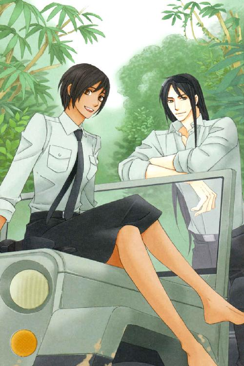
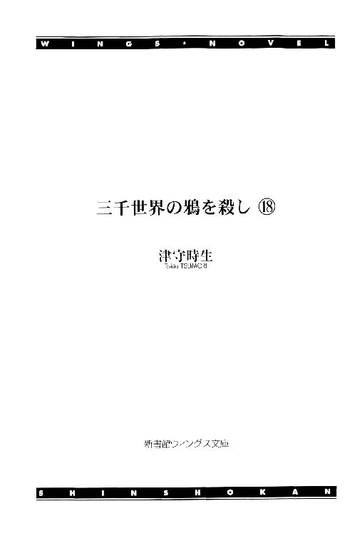
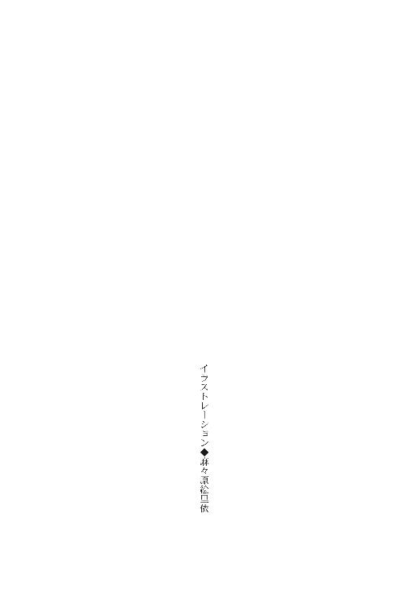
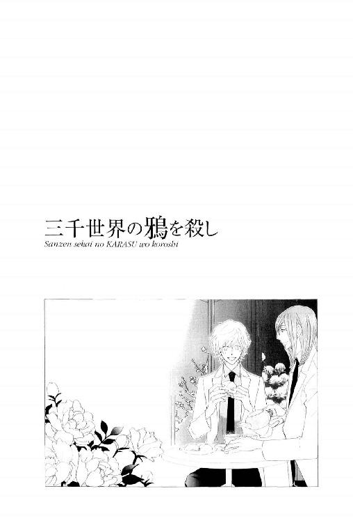
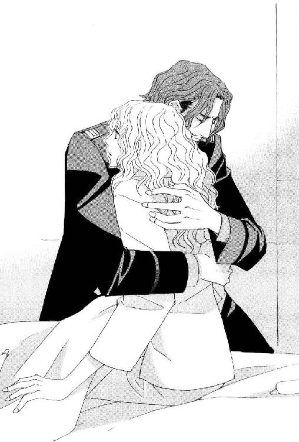
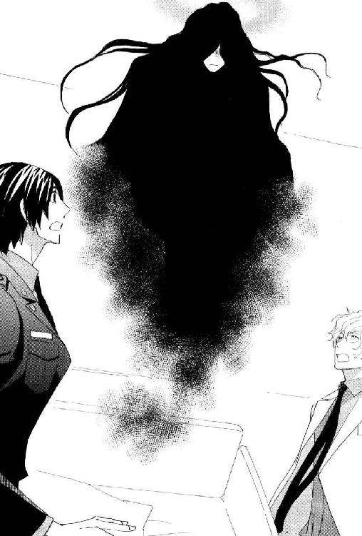
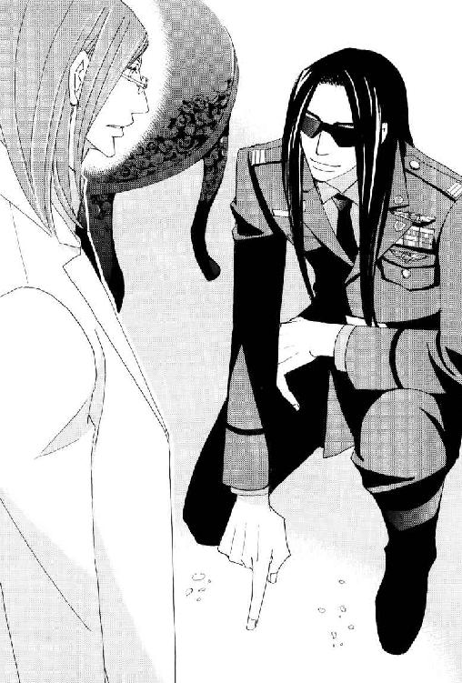
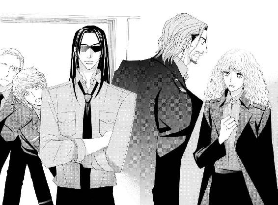
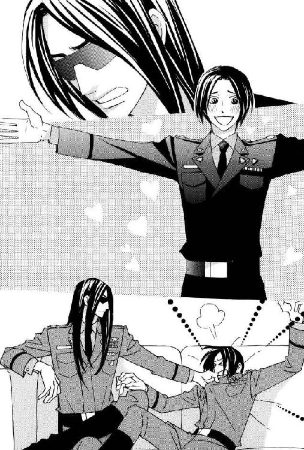
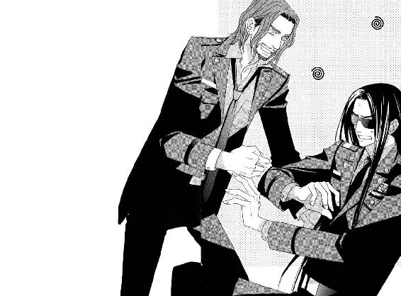

| 三千世界の鴉を殺し(18) (ウィングス・ノヴェル) | |
| 津守時生 | |




１
最新型の貨物用ＶＴＯＬが、軍病院の屋上にあるヘリポートに着陸しようとしていた。
宇宙港から医療用ポッドを運んできたそれは、わずかな振動も貨物に影響を与えない優れた緩衝機能を有する。
非常に高価で繊細な美術品や希少な動植物、そして今回のような医療用ポッドの運搬に特化して開発されたという。
医療ポッドをバーミリオン星に移送してきた宇宙船が、そのＶＴＯＬも搭載してきたのだから、相当大きな船ということになる。
事故で脳に損傷を負った愛娘に最高の治療を受けさせてやりたいという親心は、移動費にどれほど高額な請求書が届いても動じないらしい。
そんな金持ちを顧客とする医療専門の輸送業者は、白銀のＶＴＯＬを巧みに操る。
機体は水平飛行から垂直着陸態勢に入り、湖面に舞い降りる水鳥もかなうまいと思わせるほどソフトな接地をしてのけた。
機体前面の扉が開き、薄紫色のスーツを着た小柄な女性が昇降機を使って降りてくる。
女性は出迎えの一団の中央にいるサラディンに駆け寄った。
「アラムート教授......っ！」
「走ったりして危ないですよ、オルガ」
サラディンは苦笑し、胸に飛び込んできたかつての教え子オルガ・シオを抱きとめる。
彼が学都を去る時も同じように、彼女は涙ながらに抱きついてきた。
自他共に認める人間嫌いの自分が、あの時も今も笑って抱擁を許すことに少し驚く。
「二度とお会いできないと思っていました......本当に嬉しくて......夢みたい......」
「私も、少しも変わらないあなたと再会できて、とても嬉しく思います」
「ええぇ？ 私、もうすっかりシワシワのおばあちゃんですよぅ」
オルガは摩訶不思議なことを言われたという顔で見上げる。確かにその目元や口元には、くっきりとシワが刻まれていた。
それでも浮遊感のあるおっとりした口調や愛らしい笑顔は、サラディンの記憶にある彼女そのままだった。
「老いはあなたの美しさを微塵も翳らせてはいません。ますます魅力的な淑女になったと思いました」
指先で再会の嬉し涙をぬぐってやりながら、優しく言う。
サラディンの背後で押し殺した驚きの声が上がる。
日頃の彼を知る病院関係者のあいだからだった。
人間嫌いに加えて、無能なものに容赦のない外科主任には、普段愛想というものがない。
地球人に本能的に恐怖を与える凄艶な美貌は、時に苛烈な迫力を持って、彼の周囲から人々を遠ざける。
常に紳士的な態度で女性には接するが、こんな風にあからさまな賞賛の言葉を並べるような率直さはなく、少なくもこの場にいる誰もそんな光景を見たことがない。
そもそも彼が誰かと気安く抱擁し合う姿など、今まで誰も想像さえできなかった。
こうなると、かつての教え子だという彼女と具体的にどういう関係だったのか知りたくなるのが人情だが、緊急手術を控えている現在の状況では、余計な詮索はすべて後回しになる。
オルガ・シオ教授にだいぶ遅れて、ＶＴＯＬから一人の男が降りてきた。あとに続いた女性に手を貸す。
今回、サラディンに手術をしてもらうため、遠路はるばる四億光年近くを旅してきた娘の両親だった。
彼らが娘とその友人二人分の費用をすべて負担する代わりに、娘の手術を先にするように求めていると、オルガから申し訳なさそうに告げられた時、天才外科医は薄く笑ってその望みに同意した。
そして、朗らかに言葉を続けた。
『親御さんからすれば、一刻も早く娘の命を助けて欲しいというのは、当然の心情です。たとえその娘のほうが、もう一人のお嬢さんより怪我が軽くとも、手術が必要な状態に変わりありませんし』
脳に活動を補助するマイクロ・コンピュータを埋め込むインプラント手術を施せば、その娘は最初に運ばれた病院で助かっていた。
今頃はリハビリも終了し、健康を取り戻していただろう。
体内に機械を埋め込むことに対し、生理的嫌悪を抱く両親がその手術を拒んだ。
だが、四肢や内臓などと異なり、脳は培養した新しいものを付け替えることができない。
『今丁度、難しい手術に対する画期的な手法を試みているところです。まだ脳手術を扱ったことがなかったので、あなたが助けたい患者の手術前に良い練習になるでしょう。――自分たちの娘を先に手術して欲しいというご両親の申し出は、喜んでお受け致しますよ』
亜空間通信の反対側にある端末で、底意地の悪い恩師の計画を聞かされたオルガ・シオは、少女のようにクスクスと悪戯っぽく笑ってうなずいた。
心の重荷から解放されたオルガは喜んで沈黙を守った。
彼女が恩師の不興をこうむることを案じて、到着直前までスポンサー夫婦の要求を伝えられなかったのは想像に難くない。
人道的見地からすると正当性を欠く要求だが、すべての費用を負担している彼らには、その要求を通す権利がある。
オルガの人脈を利用して脳外科手術の名医を探す代わりに、娘が起こした交通事故で巻き添えにした親友の治療費も負担する、という約束だった。
両親が最初に娘が運ばれた病院でインプラント手術を了承していれば、親友は同じ病院でおそらく治療の甲斐なく死亡していただろう。
親友の死に対する責任から賠償金の支払いが発生しても、事故の保険金にある程度上乗せすれば済む。
サラディンは、ひそかにそれが最善だったと思う。
巻き添えになったほうの、より重篤な状態の娘の両親は、最初からインプラント手術に同意していた。
それ以外、助かる手段がない状態だった。
脳に埋め込まれたマイクロ・コンピュータは、脳の損傷の程度により生命維持に必要な機能だけでなく、記憶や視覚の情報処理などの高度な機能を肩代わりすることになる。
脳に損傷を負ったために発生する後遺症は、術後の治療次第でかなり軽減される。
それでも脳細胞の損壊で失われた記憶は戻らないし、人格まで変わってしまい周囲が当惑する場合も多々ある。
オルガがその才能を惜しんだ娘は、サラディンの手術で生きながらえたとしても、事故に遭う前の彼女には戻れない。
記憶を喪ったニコラルーンと周囲の関係を見ていると、一方が以前の記憶を残したままで新たにやり直すことの、いかに難しいかがよくわかる。
だが、いつか記憶が戻る可能性の高いニコラルーンには希望がある。
オルガの教え子にその希望はない。
それでも死なせたくないというのは、オルガの感傷だった。
長く逡巡したにせよ、オルガの頼みだからサラディンは応じた。
受けた以上、いつものように手術は全力を尽くす。
サラディンは傍らに立つマコト・ミツガシラ少尉を見遣る。
輸送科の技術将校は、最新型の機能特化型ＶＴＯＬの性能に興味津々のようすだった。
今回、続けて二回行なう脳外科手術には、少尉が先日持ちかけてきた新しい手法を用いる。
患者の体内を神経レベルで透視できるガーディアン・レッドという超能力者がいて、初めて可能な手法だった。
ただの透視だけなら、手術室に小型のＣＴスキャンがあり、ゴーグル型ディスプレイにＣＧ画像で投影させながら手術する手法がすでにある。
患者側の機能の回復を確認しながら、手術を進められるという意味で画期的だった。
レッドの透視は手術する箇所の機能の状態まで確認できるので、無駄な処置を省き、最適な治療を最短の時間で行なえる。
疲労は集中力にも関わるので、手術時間の短いほうが好ましいのは言うまでもない。
レッドから得る情報を活用して過不足なく処置すると、脳の手術の場合は術後の回復率が格段に良くなるだろう。
マコト・ミツガシラ少尉は、精神感応で透視するレッドがブレイン・ギアを通じて透視の結果を残せるような装置とソフトを開発した。
さらに手術中の医師の要求とレッドの透視を仲介する役も担う。
残念な点は、レッドの超能力がなければ成り立たない手法なのと、長い時には八時間を超える長時間の手術をずっと援護できるほどの体力が虚弱な水麗人にはないことだった。
マコトもそれを承知していて、外科の手術に協力するのではなく、超能力者の新しい能力活用法の実験に軍病院の外科の協力を仰ぐという形を取っている。
レッド以外で精神感応を有する超能力者が、どれだけマコトの開発した装置に求められる力を持っているか不明だが、一般人の多くから異端視される超能力者たちが社会に広く受け入れられる一助になるなら、実用化されればいいと思う。
何より超能力者と組んで行なう手術というものがいたく刺激的で、サラディンは試用実験を楽しんでいた――。
恩師から身を離したオルガ・シオは、今回の手術の依頼者である夫婦が自分の近くまで来るのを待ってから、出迎えた病院関係者に紹介した。
「お仕事で忙しい中、お出迎え頂き有難うございます。私はドクター・アラムートの教え子でオルガ・シオ、現在教職に就いております。こちらは私の教え子であり患者であるリアナのご両親、クリステンセンご夫妻です」
「大切な娘に最高の治療を受けさせてやりたいという親心で、遠くから押しかけてしまいました。どうぞ、よろしくお願い致します」
オルガの紹介に応えたのは背の高い父親のほうで、にこやかに如才なく挨拶する。
知性と威厳を保ちつつ親しみやすい笑顔を作りながら、冷ややかなまなざしで一同を値踏みする青い目が、サラディンは気に入らなかった。
関係を結べば自分の今後の利益になりそうな地位や財力、才能にぬきんでたものにしか興味のない、権力者によくいる類の男だった。
サラディンは、オルガの資料にあったヨハン・クリステンセンというこの男の略歴を思い出す。
銀河連邦内では有名な輸送会社大手の最高経営責任者を務めたあと、現在は傘下の会社の取締役や顧問、相談役といった、実務はほとんどないが多額の報酬を得られる地位の肩書きを幾つも持っている。
もし、ルシファードがクリステンセンの略歴を知る機会があったら、バーミリオン星の地下に眠る外宇宙のテクノロジーを巡り、自分たちと暗闘を続ける組織――汎銀河系複合企業体ＦＲＣの一部を成す大企業と深い関係のある人間だと即座にわかっただろう。
だが、ルシファードがクリステンセンの背景を知ったとしても、まさか自分が着任するより以前から計画されていた蓬萊人捕獲の罠の一環だと、見抜くことなどできるはずもない。
これはＦＲＣと〈狩る者〉であるアル＝ジャアファル教授が関わったことにより始まった、サラディンにとっての不幸な偶然だった。
「こんな辺境の惑星にまでおいで頂き、誠に恐縮致します。私が当軍病院の病院長ヴァン・ユーです。病院スタッフ一同、全力でお嬢さまの治療に当たらせて頂きます」
ヴァン・ユー病院長が進み出て、愛想良くクリステンセンに歓迎とねぎらいの言葉を返す。
軍病院の規則では、救急搬送されてきた患者以外の民間人を患者として受け入れる場合、基本的に軍関係者の紹介を必要とする。
クリステンセンはぬかりなくおのれの人脈を使い、銀河連邦宇宙軍中央本部に所属する将軍や、組織上層部の人間の紹介を得ていた。
それだけで好待遇が保証される。さらに高度な治療は支払いも高額になる。
基地に所属する兵士とその家族は、治療しても利用実績として、あまり病院長の自由にならない予算に反映されるだけだった。
民間人の患者が支払う入院費や治療費は、病院にとっての臨時収入であり、その活用方法は病院長の裁量に任せられる。
一日でも長く入院してもらえれば、その分だけ収入が増えるのだから、ヴァン・ユー病院長自ら出迎えるのは当然だった。
「すでにお聞き及びかと思いますが、こちらが当病院の誇る最高の外科医でありお嬢さまの手術を執刀するドクター・サラディン・アラムートです。そして――」
病院長はサラディン、外科看護師長、特別技術協力者のマコト・ミツガシラ少尉に水麗人のツインメーア・デ・エラ・レッドという順に紹介していく。
一同の背後ではＶＴＯＬの後部ハッチが開き、二基の自走式医療用ポッドが慎重に軍病院の屋上へと下ろされていた。
大きな白い繭状の装置は、現在内部に収容している患者の生命機能を維持しつつ代謝を最小限に抑制し、人工冬眠に近い状態にしている。
ＶＴＯＬと同様に最新型のそれらは、筋肉量の低下など従来から長期間収容の難点とされてきた問題にもかなり対処できていた。
ただ、すでに治療ポッドの利用時間は限界に近い。
これから手術する娘たちの容態は、安定しているとは言い難かった。
爆発で即死しなかったのが不思議なほど損傷したリンゼイ・コールドマン中尉の肉体は、ルシファードの治癒能力によって完全に治されていた。
だが、受けた衝撃がゼロになったわけではない。
失った血液を補うために輸血を受け、ストレス物質を取り除くなどさまざまな処置をしてもなお彼女は五日間眠り続けた。
そして、六日目の午後――。
「お腹空いて死んじゃう～。もう我慢できない～」
眠りながらも強い空腹感を覚え、何度となく食事の夢を見ては食べそびれるという目に遭っていたリンゼイは、耐えきれずに叫んだ。
叫んだはずなのに妙にか細い自分の声が聞こえる。
――ああ......、今のは寝言だ。私、眠っているんだ......。
夢の中で気がつくと同時に、今までとは比較にならないほど強烈な飢餓感を覚えた。
凶暴な飢えに耐えきれず、起きようともがく手に何かが押し当てられる。
反射的に握ったそれの、冷たく弾力のある感じには覚えがある。
――糧食のチューブ......！
憲兵隊の宿舎に備蓄されている非常用食糧には、有事の際に背負って持ち出す軍隊用携帯食糧も含まれていた。
体力に自信のないリンゼイは、自分が背負ったらまず立ち上がれないリュックを前にして途方に暮れたことを思い出す。
それを見た憲兵隊の兵士たちは笑って、糧食は全員で彼女に分けるから、彼女はとりあえず自分に必要な水だけを持って出て下さいと言った。
水もかなり重いのだが、飲めば軽くなっていくので、これ以上足手まといにならないように頑張ろうと思った。
空腹を訴えた自分を見かねて、今も誰かが糧食を分けてくれたのだろう。
すでに開封されている吸入口をくわえて夢中で吸う。濃厚なペースト状の中身が口の中に溢れてくるのを飲み下した。
吸い出す量だけでは物足りなくて、チューブを強く握って中身を押し出す。
たちまちチューブの中身が空に近くなる。
わずかな残りでも吸い出そうとして、未練がましく吸い続ける彼女の眼前に、新しいチューブが差し出された。
チューブの残骸を放り出すと新しいものを受け取り、違う味の中身を貪欲に飲み始める。
それがパンや肉のようなものなら、連続して食べ続けることはできなかっただろう。
だが、充分水分が含まれて嚙む必要のないペーストだった。かなりの高カロリーにもかかわらず、人心地がつくまで六個もたいらげる。
まだ多少中身が残っている感触のある六個目のチューブを見下ろし、満足のため息をついたリンゼイに脇から声がかけられる。
「もういいのか？」
「え？」
声のした方向に顔を向けると、新たなチューブの開封部分に手をかけた憲兵隊隊長マルチェロ・アリオーニの姿があった。
「え？ え？ あれ......っ？」
――ここ、どこ？
リンゼイは混乱した頭で周囲を見回し、自分が置かれた状況を確認する。
病室らしき部屋のベッドに上体を起こして座り、病人用らしい前あわせのシンプルなガウンを着ていた。
そして、シーツの上に散らばるのは、握り潰された糧食チューブ六個。
ひょっとして、自分は寝惚けたままガツガツと六食分もこれを平らげたのか。
しかも、ひたすら貪る彼女にベッドサイドでチューブを手渡してくれたのはマルチェロ。
「えええー......っ！」
ない。これはない。乙女として、こんなことはあってはならない。
リンゼイは真っ赤になった。
「いやあぁ――――......っ！」
「待て待て待てっ。錯乱する前にまず俺の話を聞いてくれ、リンジー！」
憲兵隊隊長の声の必死さに、長い巻き毛を振り乱した副官は涙のにじんだ目を向ける。
「治癒能力で肉体を再生された人間の副作用みたいなものだ」
「治癒能力......？」
「そう！ ルシファード――オスカーシュタイン大尉の持っている超能力の一つだ。彼が瀕死の君の体を爆発現場で治してくれたんだ。もちろん軍病院に運ばれてからも輸血や色々して、六日間もずっと眠り通しだったんだが......」
「爆発......私の腕......っ！ これは？」
住宅エリアで、逃走する不審な車から何かを投げつけられたことは覚えている。
あとは一瞬のことなので、それが爆発物だったのかどうかもわからない。
衝撃と激痛、そして暗転。
とっさに顔をかばった片腕が破片を浴びて、爆風に吹きちぎられる光景を見たのを最後に記憶がない。
生々しい傷口をさらしていた腕は本来の場所にあり、痛みもなく普通に動く。
マルチェロの言葉がなければ、あれは夢だったのかと思ってしまう。
憲兵隊隊長はベッドに散乱した空のチューブをさりげなく片付けながら、うなずいた。
「そうだ。培養して新しくつなぎ合わせた養肢じゃない。もともとの君の腕を再生した。破片を全部取り除いて、傷をふさいだそうだ。失われた組織を再生したせいで、すごく空腹になるから、目覚めたら高タンパクで消化にいい食事を与えてくれと言われている」
「......確かに糧食チューブは高タンパク高カロリーですね」
豪快な自分の食べっぷりを思い出したリンゼイは、再び赤面して下を向く。
うなだれた彼女の気をそらそうとしたのか、憲兵隊隊長があわてて話しかけてきた。
「リ、リンジー！ 眼鏡のスペアは宿舎にあるか？」
「ありますけど......？」
「それは良かった。あとでターニャに君が目覚めたと連絡するから、その時に頼んでスペアを取って来てもらうといい。こっちのは、レンズだけでなくフレームも歪んでいるから、もう使いものにならないな」
リンゼイは彼の言葉をほとんど聞いていなかった。
「......マルロ」
「ん？」
「あなたの手の中にある眼鏡......ヒビの一筋一筋まではっきり見えます。......私、今、眼鏡をかけていないことに気づきました」
「本当か！」
身を乗り出した憲兵隊隊長は、息がかかるほど間近から副官の顔をのぞき込む。
その近さに動揺しつつも、上官の真剣な表情に視線をそらすことができない。
マルチェロの鮮やかなターコイズ・グリーンの虹彩が、とても神秘的で美しいと思う。初めて会った時も、そう思った。
こんな美しい色の目を他に知らない。
リンゼイは何度かまばたきをしてから微笑み、はっきりと肯定する。
「はい。以前のように。頭痛もまったくありません。オスカーシュタイン大尉の治癒能力は、私の目まで治して下さったようです」
「............っ！」
マルチェロは言葉にならない奇声を発するなり、リンゼイを抱きしめた。

着崩した軍服の胸の中で、控えめな甘さのコロンがふわりと香る。
この上官は、何度注意してもだらしない服装を改めないくせに、香水や私的に持ち込む筆記具などが上質で品がいい。
肉感的な美女ばかりと遊び歩く女たらしのくせに、教養があって紳士的な振る舞いに無理がないのと同じだった。
粗野で無頼を装いながら、大人の気遣いができる優しい男というギャップには、なかなか心揺さぶられる。
だから現在のリンゼイには葛藤があった。
六日間意識不明だったということは、六日間シャワーも浴びていないということなので、この体勢には心理的に大変抵抗がある。
だが、マルチェロに抱きしめられるという滅多にない経験の最中、自ら早々に切り上げるのも惜しい気がする。
六年前、裁判所で被告の兵士が自爆し、巻き添えになって頭部に破片を浴びたリンゼイは、その後遺症で視力が著しく低下したために法務科での職を全うすることができなくなった。
負傷除隊を選びかけたリンゼイを引き止め、憲兵隊への転属を司令官に願い出たのはマルチェロだった。
リンゼイを巻き添えにしたと、彼がおのれを強く責めているのは知っていたので、同情など不要だと反発した彼女に対し、彼は同情で無能な部下をかかえるほど憲兵隊は暇ではないと断言した。
その言葉を励みにして、頭痛がひどい時も痛み止めを飲んで仕事を続けてきた。
正直なところ、あまりにも頭が痛くて何も集中できず、やらなければならない仕事を完全にこなせなかった日も多い。
マルチェロを始め、憲兵隊のものたちは誰もそれを責めなかった。
彼女に求められものは軍法の知識。
適用と判例の生き字引として役立ってくれれば、ほかのものができる仕事はそちらに任せてかまわない、というのが憲兵隊の暗黙の了解だった。
彼女がどれだけの苦痛に耐えて仕事を続けているのか、完全に仕事のできない自分の不甲斐なさをどれほどくやしく思っているのか、憲兵隊の男たちは誰もが知っていて、それを一言も口に出さずにかばってくれる。
深く共感し、言葉を尽くして慰めてくれる女の優しさとは違う種類の気遣いと優しさを、男たちは持っていた。
頭痛が消えて視力が戻った今、彼らの優しさに報いる働きが存分にできるだろう。
それが何よりも嬉しい。
喜びに浸るリンゼイの頭の上で、マルチェロが押し殺した声でつぶやく。
「あいつ......最後は......これのためか......」
「あいつ？ オスカーシュタイン大尉のことですか？」
「......ああ、そうだ。君を治した時、彼は途中から力を使い過ぎていた。彼の状態を見かねた者の制止を振り切って、最後に使った力が、何を治したのかわからなかったそうだが......。君の頭の中に残った、細かい金属の破片を取り除いたんだ。そして、古傷を完全に癒した......」
マルチェロの声は、何かに耐えている震えがあった。
それがどんな感情なのか、わかる気がする。
この基地に来て以来、マルチェロは同性の友人を持たなかった。
初めて彼と心安い間柄になったルシファードが、無理を重ねてリンゼイの古傷まで治してくれたのは、彼女の傷に負い目を持っているマルチェロのためだろう。
それにしても伝聞口調なのが気になる。
「マルロ。それで、私を治すために無理をなさったオスカーシュタイン大尉は、今どうされているのですか？」
「......君を治した直後に倒れて、今も意識不明だ。ただ、命に別状はないらしい。......たぶん、あと二、三日で目覚めるという話だ」
リンゼイは息を呑む。
「それは......苦しかったでしょうね」
「いや。脳波を見る限り、苦痛も何も感じていないだろう。夢も見ない深い眠りだ」
マルチェロは淡々とルシファードの状態を告げたが、彼女が思いやったのは自分を抱いたまま離さない男のほうだった。
彼女もルシファードも目覚めない時間を、マルチェロはどうやって過ごしていたのだろう。
ルシファードの厚意に感謝しつつも、意識不明になった彼を恨めしく思ったかもしれない。
そう思う自分の身勝手さを責め、改めて感謝し――その堂々巡りはリンゼイが目覚めるまで続いただろう。
「オスカーシュタイン大尉が目覚めた時、二人でお礼に行きましょう」
「そうできればいいが、君はまだ無理はできないぞ。目が覚めたといっても爆発の衝撃で死にかけたんだ。体はそれを覚えている。検査をして、ドクターの許可が出るまで安静にしているように」
「憲兵隊の仕事は？」
「だから、それは心配しなくてもいい」
この体勢では彼の表情が見られないのは残念だった。
絶対に目が泳いでいるに違いない。
憲兵隊隊長が副官の目覚めるまでベッドサイドにいて、仕事が通常通りこなせていると思うなら、リンゼイに副官の資格はなかった。
「これから詰め所に行って、私のパソコンを持ってきて下さいね、ボス。それが、現在私が一番欲しい差し入れです」
有無を言わせぬ口調でリンゼイ・コールドマンは言った。
２
Ｏ２自身は目覚めるまで八日かかったという話だったが、ルシファードの体温の上昇が始まったのは、九日目だった。
不安にはなったが、まだ絶望的にはならないという丁度いい――もしくは中途半端な日数が経過して、やっと少しずつ体温が上がっていく。
十日目の夜遅く、彼は平熱に戻った。
入院病棟での面会時間はとうに過ぎ、消灯時間が迫ることから、病室での集合を許されたメンバーは厳選されていた。
参加を熱望していた都市警察のガーディアン・レッドとマコト・ミツガシラ少尉は、時間が遅く軍病院と住宅エリアが離れていること、まだテロに遭う危険が残っている中で二手に分かれるより、全員が一緒にいたほうが警備もしやすいという理由で、プロジェクト分室に残るよう、マルチェロ・アリオーニ大尉に厳しく言い渡された。
先日の爆弾テロをガーディアン・レッドが事前に察知したことは、功績として大変大きい。
そして、非力なガーディアンたちと一緒に暮らすミツガシラ少尉の戦闘能力は非常に高く、分室の護衛に当たる憲兵隊としては、マコトに屋内での警護を任せたいというのが、偽らざる本音だった。
ルシファードに追跡された爆弾テロの犯人たちは死んだ。
だが、初動捜査の遅れによって背後関係の調査が滞っている。
目覚めたリンゼイ・コールドマン中尉は状況を把握すると、ヘタレな憲兵隊隊長に代わり自身が病室から部下たちの指揮を執ることにした。
彼女は役に立たない上官にルシファードの病室の警備を命じ、今まで病室の警備に当たっていた人員を通常任務と捜査に振り分けた。――という経緯で、現在護衛役のマルチェロは、意識のないルシファードの病室にいる。
ルシファードの副官ライラ・キム中尉が、平熱に戻ったと聞いて駆けつけたのは当然だが、マオ連隊長と需品科のドミニク・バンカー少佐がこの場にいるのは納得できない。
ライラからの連絡で知ったという隻眼の美女は、何かを言いたげな憲兵隊隊長の視線に微笑んで応えた。
「ルシファが寝惚けて暴れたとしたら、あなたに抑え込む力があって？ 私の握力なら捕まえた彼の手首を握り潰すこともできるわよ」
「それなら、もう一方の手首は私が握りつぶしましょうか」
外科主任のサラディン・アラムートが、やはり上品に微笑んで言う。
すると制服姿のライラが腰のベルトに吊ったホルスターから素早く拳銃を抜き、真顔で付け加えた。
「お二人が抑えて下さるあいだに二、三発ブチ込みます。頭と心臓は避けますから大丈夫」
「大丈夫って......猛獣が相手では――」
「すぐ自力で治りますので、ご心配なく。それだけ痛い目に遭わせれば、いかに日頃からふざけた寝言を連発するルシファでも、否応なく目が覚めるでしょう」
撃つなんていくらなんでもやり過ぎだとマルチェロが口にするより早く、ライラは胸を張って断言する。
みんなひどい。
――リンジーもその気になった時は容赦ないが、ルシファの副官よりは百倍優しい......っ！
マオ中佐が楽しそうに笑って言う。
「一部始終を見て、Ｏ２に無事覚醒したと伝えるのが私の仕事だ」
それを無事に覚醒したと判断する連隊長もひどい。
マルチェロは友人のために、健やかなる目覚めを心から祈らずにはいられなかった。
ベッドサイドでルシファードの容態を確認していた主治医のカジャ・ニザリが、不機嫌な声音で注意する。
「病室内で発砲など言語道断だ」
「消音器は装着しています」
「ならよし」
ライラが拳銃を見せ、視認した内科主任はうなずく。
ひどい。銃声がしなければ、患者に向けて撃っていいのか！
心の中で叫んだマルチェロは、今まで発言のないラフェール人を振り返った。
「そんなに心配するなら、電気ショックを与えて強制的に起こせばいいのに」
面倒臭そうにつぶやくニコラルーンの言っていることも、よく考えると結構ひどいが、この中では一番マシに聞こえる。
何故その方法を選ばないのか、ニコラルーンの反発を招かないようにサラディンが、カジャに代わって説明した。
「体温や呼吸、脈拍数などすべてが正常値に戻ったからといって、オスカーシュタイン大尉の体力が倒れる前と同じだと考える根拠はありません。電気ショックに彼の心臓が耐えられるかどうか、わかりませんから」
だったら銃で撃つのも危険ではないのか。
マルチェロが疑問を感じつつ、先程から口に出せないのは、ひょっとしたらルシファードに対する自分の認識が間違っているのではないかと、少し心配になってきたせいだった。
普通に声をかけて起こしたいところだが、それで寝惚けられたら困るので、やはり自然に目覚めてくれるのを待つのが無難かもしれない。
そもそも体温が平熱になって、すぐ起きるという確証はなかった。
それでもこうして一同が集まってしまうのは彼の身を案じ、目覚めを待ち続けていたせいなのだが――。
病室内を見回したニコラルーンは目当ての簡易椅子を見つける。
「私は座らせてもらうよ。いつ目覚めるのかわからないのに、全員で立って見守っていてもしようがないでしょ」
「人数分は用意しました。中佐殿もよろしかったら――」
まずは上級者から勧めるマルチェロの気遣いに対し、マオは笑顔で辞退した。
「有難う。だが、日頃デスクワークが多い分、あまり体を甘やかさないようにしている」
「えー？ アレックスがそんなことを言ったら、他のみんなが座れなくなるよ。それとも、ひょっとして軟弱者は私だけなのかな？」
さっさと部屋のすみに移動し、椅子に座っていたニコラルーンは、情報部の同僚だというマオに抗議する。
親しかった記憶を失ってもＯ２の部下だという気安さはあった。
ドミニクが優しくなだめる。
「種族の違いによる基礎体力の差を考慮すれば当然のことでしょう。それにあなたも重傷を負ったショックから、ようやく回復したばかりですから、お気になさらず楽にしていらして。念動力が必要になった時のために、あなたには少しでも体力を温存して頂きたいわ」
「そうですよ。寝惚けたルシファに念動力を使われたら、対抗できるのはマーベリック少佐殿だけなんですから」
ライラも言い添える。
主治医の内科主任が、友人の外科主任を気遣う。
「サラ。疲れているなら君も座っているといい。本当にこの男がいつ目覚めるのか、はっきりしたことは何も言えないんだ」
「今日は簡単な手術が一件だけでしたから、お気遣いなく。それに手術で一日中立っている日など、珍しくありません」
「そうか。......そういえば、外部から依頼された厄介な手術は無事成功したそうだな。何よりだ。君が失敗するとはまったく思わないが、ヴァン・ユー病院長が妙に気合いを入れている患者だと聞いた。面倒はこの男一人だけで沢山だからな」
「手術は、ガーディアン・レッドとミツガシラ少尉の協力で、かなり楽をさせて頂きました。――とはいえ、手術が成功したというだけのことです。すべては今後の回復次第。失われた記憶の再生は私の手に余ります」
「それでも生きていて欲しいと願うのが、人の心だろう。その願いを叶えるために我々は仕事をしているのだから」
――おおっ！ サイコ・ドクターズがまるで医師のような会話を交わしているっ！
性格に問題はあるものの、医師としての能力は並みより遙かに高い各科の主任医師たちに向かって、マルチェロは失礼な感動を覚える。
「私の言いたいのは人の生死ではありません。なぜ、彼女たちにもっと早く完全な治療を施さなかったのかという、親のエゴに対する怒りです。確かに私は外科医として、技術の高さに対する自負はあります。しかし、設備の整った規模の大きい医療機関に行けば、執刀医の技術の及ばない部分をコンピュータの補助による新しい技術や新薬で補うことは可能です。それを応急的な手術だけにとどめ、患者を治療ポッドに入れねばならなかった医師たちの気持ちを考えると、大変腹が立ちますね」
「ああ......金持ちの父親が、脳にコンピュータを埋め込むインプラント手術を病的に拒絶しているという話だったな」
「娘の脳に埋め込んだコンピュータが、ハッキングされる可能性が残る限り、絶対に認められないそうです。本人の意思が曲げられて、第三者に操られることを恐れているとか」
外科医の言葉が終わらないうちに吹き出したものがいた。
一同の注目を浴びたアレックス・マオが謝罪する。
「真剣なお話の最中なのに、不謹慎に笑って失礼致しました。しかし、人を操るなんて簡単なことですよ。色仕掛け、詐欺、薬剤を使った洗脳、思想教育、等等。コンピュータがない大昔から、精神操作は行なわれてきました。そちらのほうが、よほど可能性は高いのに、どうして補助脳のインプラント手術だけを毛嫌いするのでしょう？」
「さすがＯ２の部下だな。人を操るなんて簡単だと言ってのけるか」
笑顔で説明した男にカジャが嫌みを言う。
ニコラルーンがすかさず反論した。
「権謀術数に加えて超能力犯罪をやりたい放題の白氏族の一員に、我々の上官について非難がましいことを言う権利はないと思うけど」
このやり取りを放置すると険悪になる一方なので、口をはさもうと焦ったマルチェロより早く、ドミニクが華やかに笑って仲裁に入る。
「諜報部員に人をだますな操るなと言うほうが無理ですわ、ドクター・ニザリ。それに銀河連邦に限らず、巨大組織の中枢にいる人間が権謀術数を駆使できなくて、生き残れるはずもないでしょう？ 利用できる力は何でも利用し、証拠さえ残さなければ殺人も厭わない人間は多いと思いますけど」
「そして、この基地にいるものの何割かは、その戦いの負け組なんですよね」
ライラがため息混じりに付け加えた。
憲兵隊隊長は、ガーディアン・レッドたちがサラディンに協力したという話に興味を持つ。
「先日、マオ中佐殿からＯ２との通信内容を教えて頂きましたが、その時に確かミツガシラ少尉とレッドが、超能力の新しい活用法への協力をドクター・アラムートに願い出ていたと記憶しています。早速、今回の手術で試したのですか？」
「そうです。もっともレッドの力があって成立する手法ですから、医学の進歩に役立つかと問われれば否定するしかありません。難しい手術の予定があり、レッドの都合のいい時に協力を頼む――くらいでしょうか」
「ならばドクター、レッドの力にルシファの治癒能力が加わるとどうでしょう？ 二人が組んでコールドマン中尉を治したと聞きましたが」
ライラが質問する。
そのようすから好奇心以外に他意はなさそうだったが、彼女の暗示が発動しないように口裏を合わせた男たちはひそかに緊張した。
ルシファードは勝手にＰＣリングを外し、自由に超能力を使っていた。
しかし、リンゼイを治癒した時点で彼はまだＰＣリングをはめていなければならない。
超能力が発動したあとにＰＣリングは作動する。
その電撃の強さは発動する超能力の強弱に比例するので、今のところ空間移動でなければ、心臓に負担がかかるほど強力な電撃は発生しないと思われる。
過去にルシファードが、ライラの前でどのように超能力を使ったのか誰も知らない。
耳障りな警告音と弱い電撃が続く中、治癒能力を発揮し続けられるか否か。
幸か不幸か、現場を見ていたミツガシラ少尉と治癒に協力したレッドはこの場にいない。
誰が答えても伝聞になるから、多少の齟齬は記憶違いで誤魔化せる。
そう判断したマルチェロよりもっとうまく立ち回ったのが、サラディンだった。
にっこり笑ってライラの問いに答える。
「オスカーシュタイン大尉とレッドが組んだら、私たち外科医は失業確実ですね。彼らが治癒師として売り出せば一財産築けるでしょう。ただ大尉の性格からして客あしらいがうまいとは到底思えませんから、あなたがマネージャーをなさるとよろしいかと」
「ご冗談を、ドクター・アラムート。怪しげな新興宗教の教祖とその手先みたいな真似は願い下げです」
「あら、教祖だなんてルシファにぴったり！ あの顔だけで女性信者が殺到するわよ」
はしゃいで手を叩くドミニクの言葉にライラは真顔で返す。
「男も集まります。素で男タラシですから」
「おやおや副官にそんなことを言われて、大尉も気の毒だな」
マオの言葉は、優秀な部下をかばっているのか、面白がって混ぜ返しているのか微妙なところだった。
「第一、力を使いすぎた挙げ句にストレスで冬眠するような変態ですよ？ そのたびに妙な寝惚け方をされるかもしれないとおびえていたら、こちらの心臓が保ちません」
「変態はさすがに可哀想だよ。任務のために力を使ったせいなのに。彼一人の力に頼らざるを得なかった状況が、そこまで続いたことに問題があるんだ。同じ超能力者として心が痛む」
ニコラルーンはルシファードを擁護する。
ライラの苛立ちもニコラルーンの共感も、ルシファードの身を案じてのものだった。
それにしても、時間がたつのが遅い。
こんな調子で朝まで待つのかとうんざりしたマルチェロは、人数分のコーヒーを用意する方法を考え始める。
その時、いきなり計測機器が甲高い警告音を発した。
不意を突かれて、誰もが飛び上がるほど驚く。
そばにいた内科主任が機械の表示を見て愕然とする。
「脳波が......――バカな！」
「カジャ！ 大尉が目を開けました」
警告音の意味を知っているサラディンの呼びかけに喜びの響きがなかった。
思わず寝台のそばに駆け寄ろうとしたものたちを、ニコラルーンの鋭い声が制止する。
「動くなっ！」
何事かと顧みると、椅子をひっくり返して立ち上がったラフェール人が、蒼白な顔でうなった。
「違う......それは――ルシファードと違う......。......くるな......出てくるな......こちら側に出てくるんじゃない......っ！」
最後は命令と言うより悲鳴に近い。
ニコラルーンの視線を追って寝台に目を向けた一同は、いつの間にか上体を起こしていたルシファードに気づく。
まばたきをしない目に光はなく、無表情な美貌は精巧な人形のように意思も生気も感じられない。
起き上がった時にヘッドギアや測定用のコードが外れ、つややかな黒髪が乱れ放題だった。――と、その髪が生きもののように大きくうねり、いきなり長く伸びた。
「は......？」
サラディンが理解しがたい光景に目を見開く。
カーマイン基地に着任した当初より短いが、長さのそろった黒髪は顔に乱れかかり、顔を覆い隠す。
頭頂部のさらにその上に何かが現れた。
――えーと......天使の輪......？
憲兵隊隊長は自分が見ているものと、自分が知識として持つその典型的なイメージとの差に戸惑う。
宗教画の天使の頭上には、よく聖性を表す光の輪が描かれているが、ルシファードの頭上に現れたそれは、彼の肉体を見失うほど強烈な存在感を放っていた。
脈動するが如く光度を変化させる輪は、明るい室内にあって照明とは異質な光だった。周囲に拡散せず輪郭も定かではないのに、存在感ゆえにくっきりと浮かび上がる。
『こちらを視るのは久方ぶりだ』
全員の頭の中に今まで一度も聞いたこともない音楽的な言葉が響いた。
まったく知らない言語なのに意味は伝わる。
――何だ、これ......精神感応ってヤツか？
「ラフェールの古語......っ？」
驚愕の声を上げるニコラルーン。
そちらに視線がそれた一瞬で、寝台の上からルシファードの姿が消え失せた。
カジャが短く警告する。
「ニコル、上っ！」
ニコラルーンが見上げた先に黒い闇がわだかまっていた。
全身を覆い尽くす黒衣は輪郭が宙に溶け消え、広がる黒髪も途中から黒い霞となる。
人の姿を持ちながら人の気配を持たない存在が宙に浮かび、ニコラルーンを冷ややかに見下ろしている。

『我らが末裔のさらに枝葉が、我を押し戻そうとしたか。......小賢しい』
長い髪に隠された顔の表情は見えないが、わずかにのぞく口元は動いていなかった。
黒衣の片側がゆっくりと上がる。
「危ないっ！」
ドミニクが横に低く跳躍し、ラフェール人の体をさらって床に転がった。
今までニコラルーンが立っていた場所に火花が激しく散る。
彼を守ったドミニクは隻眼を赤く燃え立たせ、宙に浮かぶ黒い人影をにらみつけた。
「この人を傷つけないで！ ルシファが悲しむわ」
『......面白い。二股に分かれた枝葉のもう一方もいるとは』
意味不明な言葉を吐いた相手は、それだけでもう二人に興味を失ったらしい。
何かが自分の中を通り抜けた気がして、異様な感覚にマルチェロは鳥肌を立てる。
――調べられた......？
一番近くにいるライラも両腕で自分をかき抱くような格好をしたので、同様の感覚を覚えたのだとわかった。
ラフェール人をおのれの末裔と呼んだそれは、地球人には何も興味を持たなかったらしい。
サラディンに話しかける。
『古き種よ。血の中に面白いものを飼っているな。結局、ただの器に囚われて滅ぶとは惜しいことだ』
「......あなたがどなたか存じませんが、活動するためには誰かの肉体に宿る必要があるようですね。なければ困るものをただの器呼ばわりするのは、いかがなものでしょう。その肉体は私の友人のものです。早急に返して頂きたい」
相手の謎めいた発言に何一つ応えず、外科医は断固として要求を突きつける。
――おお、さすがの迫力。全然負けていない！
正直なところ、身がすくんで動けない憲兵隊隊長は、サラディンの胆力に拍手を送りたい。
寝惚けているとか、そういうレベルの話ではなかった。
何か――精神生命体のような高次の存在を呼び込んだとした思えない。
もしかしたら神や悪魔、天使や精霊と呼ばれてきたものは、こういう存在だったのではないだろうか。
――宿るだの憑くだのと言うしな。
そして、そういうものは得てして人間の都合は聞かないものだった。
サラディンの当てこすりに動じず要求も無視し、ルシファードの肉体を乗っ取った存在は、ラフェール人と同じくらい古い種族だという白氏に興味を移す。
カジャは引きつった声を張り上げ、追い払おうとする。
「私は同じ白氏からも出来損ない扱いされているくらいだ！ 貴様が面白がるようなものは何もないぞ！」
『いや、そうでもないぞ。少し造り替えれば面白い器になりそうだ』
「造り替えるって......私はこのままで構わない！ 余計な真似はするなっ。迷惑だっ」
『痛くはない。すぐに済む』
不幸な方向に会話が成り立っていると気づいたが、制止する間もなく黒い影は空中を転移して、内科医の間近にいた。
「――うわあ......っ」
マルチェロは、自分に背中を見せているサラディンの右手に三本のメスが出現するのを見て驚く。
マジシャンのようだとか、そんな危ないものをどこに収納していたんだとか、どうでもいいことしか考えられない。
だが、考えるより早く行動に移したものがいた。
ライラの体が宙に浮く。
裂帛の気合いと同時に渾身の跳び蹴りが黒衣の背中に炸裂した。
「でえぇ――......いっ！」
えっ、そこで蹴っちゃうんだ、とライラ以外の誰もが目を丸くする。
カジャにのしかかるような体勢だった相手は、完全に無視していた地球人から直接攻撃をされることを全然予想していなかったらしい。
曖昧模糊とした輪郭とは違って、中心には本体が存在していた。
気持ちがいいほど鮮やかな蹴りが決まって吹き飛んだそれは、その先にあった大型の測定機器に激突し、カジャの身長より大きい機械を巻き添えにして床に倒れ込む。
「わ――っっっっ」
異口同音に悲鳴が上がった。
激突から倒れ込むまでの過程で、機械の重量は大体見当がつく。
死んだ。これは、確実にグチャッとなってペッタンコ。
誰もが凍り付く中、いつまでたっても人体が潰される悲惨な音は聞こえてこなかった。
代わりに聞き慣れた呑気な声がする。
「なぁ、ベン。俺にのしかかっている高そうな機械、壊したらマズイよなぁ？」
「......あ、当たり前だっ！ 三百万ダムド弁償したいのか？」
「やめとく。内科のナースたちから出入り禁止にされちまう」
床に転がっているルシファードの姿は、マルチェロの位置から見えなかったが、測定機器だけが勝手に起き上がった。
「いててて......。何故に俺、こんなところで流血の大惨事？」
「ルシファードッ！」
ベッドの上に着地してから、ずっとようすを見ていたライラが床に飛び降りた。
「バカバカバカバカッ！ 私が幽霊大嫌いなの知っているでしょ！ なんでご先祖の幽霊なんかに取り憑かれるのよっ！」
やはりライラも〈アレ〉をルシファードの先祖――おそらく今のラフェール人のさらに前に存在した古い種族〈先ラフェール人〉――だと感じたらしい。
文字通り幽霊をあの世に蹴り返した女傑が、半泣きで友人に抱きつく。
マルチェロのいる位置から姿の見えない男の、声だけが聞こえる。
「あー......そうか。悪い。俺まで寝惚けて、乗っ取られたのか。――って、ああっ！ 伸びた髪の毛はともかく何だよ、このズルズルした服！ 超胡散臭い新興宗教のエセ教祖かっ」
「なんと幽霊の置き土産か。――こら、服で血を拭くな！ 貴重な研究材料だ」
カジャがたしなめ、サラディンも身を乗り出した。
「そうですよ、大尉。ほら、血を拭くならシーツにしなさい。どういう風にその豪華な服が組成されているのか、非常に興味があります。もしかすると、これは俗に奇跡と呼ばれている現象に該当するのではありませんか？」
いつものやり取りに緊張が解ける。
マルチェロはマオ中佐やドミニク、ニコラルーンと安堵の笑みを交わした後、寝台の向こう側にいるルシファードに声をかけるべく歩み寄った。
片膝を立てて床に座っていた男は、憲兵隊隊長を見上げて皓い歯を見せる。
あの不思議な頭上の輪は消え失せていた。
「よう。心配かけたな。すまん」
「そうよ！ このろくでなし！」
気がゆるんで泣き出したライラが、すがりついている男の体を拳でドスドスと叩く。
マルチェロは、かなりの衝撃も苦笑して我慢する友人を尊敬のまなざしで見た。
ライラはライラで可愛くてけなげだった。
彼女のお陰でルシファードは正気に戻ったようなものだが――。
どう考えても、あの時たまたま本来の意味で目覚めたルシファードが身の危険を感じ、とっさに念動力を発動しなければ、彼は機械に押し潰されて死んでいた。
頭を強打して気絶したり、念動力の発動にもう少し時間がかかっていたらと想像すると冷や汗が出る。
超能力を持たない自分の副官がリンゼイで良かったと、心から思うマルチェロだった。
３
十日間の疑似冬眠から目覚めたルシファードは、目覚めたその日から仕事に復帰するつもりでいたが、彼の特異体質に翻弄された軍病院の医師たちは退院を許可しなかった。
内科主任医師カジャ・ニザリは外来の診療開始時間の少し前に現れて、差し入れのノート・パソコンをいじっている男に言い渡した。
「今日一日献体しろ」
「まだ生きていますが」
「だから今日一日死体になったつもりで、あらゆる検査を受けろと言っている」
「ああ、そういう意味。でも、主治医が患者に死んだつもりになれって、物凄く問題発言じゃないの？」
ブラインド・タッチでメールを打つルシファードは、淡々とした口調で指摘する。
「一時は死体同然だったくせに生意気な口をきくな。今のお前はもはや完全な健康体だ。お前を採血して細胞組織をもらい、色々な検査機にかけても非難される覚えはない」
「一日かけて、俺をとことん調べ尽くすと？」
「そうだ。お前のように非常識の塊を調べたところで、どれほど医学の役に立つ結果が得られるかわからない。だが、私とて科学者だ。わからないことをわからないままに放置せず、徹底的に調べて少しでも真相に近づきたいのだ。たとえ多少お前の人権を犠牲にしてでも！」
「潔いな、ドクター。犠牲になるのは俺の人権であって、あんたの人権じゃないってトコが全然説得力ないけど。まぁ、一日くらいなら付き合ってもいいぜ。あんたたちを心配させたし、今までにも内科には迷惑をかけているからな」
ルシファードはあっさり承諾し、カジャは小躍りせんばかりに喜ぶ。
「協力を感謝する」
「ただし、憑依されていた時の記憶はない。アレに関しては調べようがないから、頭に電極のついた変なヘルメットをかぶせたりするのはやめてくれ。親父の時でさえ痕跡もつかめなかったんだ。時間のムダだ」
「そんなことはしない。第一、調べている最中にまたアレが出てきたりしたら私が困る」
真面目に答えるカジャの声には、かすかに恐れがあった。
目覚めたあとに一同から聞いた話を思い出し、ルシファードは唇の片端をつり上げる。
「あんたの用心棒にライラを呼ぶか？」
「じょ、女性に守ってもらうなど不面目なことができるか！」
「あいつは兵士だ。非戦闘員を守るのは当然のことだろ。......本当にスゲーよ、あいつ。アレを扉の向こうに力業で蹴り戻したんだからな。拳だけでなく蹴りもリーサル・ウェポン......マジおっかねぇ......」
ルシファードの言葉はだんだん独白になり、最後は小さなつぶやきと共にぶるりと身を震わせた。
彼の気持ちには、カジャも少し共感を覚える。
「いや、その、私とてこの目で見た彼女の力量を疑ったりはしない。だが、幽霊を怖がるような繊細な感性を持つ彼女に、恐ろしい思いをさせてはならないと思うから反対するのだ！」
「だからアレは幽霊じゃねーって。俺を乗っ取っていた時の言動からして、あんたたちも推測したように俺のご先祖さま――先ラフェール人の精神体だ」
「それを幽霊と呼ぶのではないのか？ 先祖と言うからには当然死んでいるはずだろう」
「違う。親父の時もアレは〈扉〉の向こう側からやってきた。親父と精神連結をしたままだった俺がしっかり覚えている。......まぁ、俺も薬の影響が残っていたから、イマイチ自信がなかったんで、Ｏ２には適当に言って誤魔化したが。アレは肉体という器を捨て去り、あちら側に行ったヤツだ。肉体がないから死もない。ゆえに幽霊ではないってコト。どうやら器にできる子孫が疑似冬眠状態から覚醒する直前だけ、あちら側から〈扉〉を勝手に開けられるみたいだな。迷惑だから勝手に出戻るなっつーの」
着任当時の長さにいきなり戻った黒髪を片手で梳き上げ、ルシファードは忌々しげに語る。
白衣をまとうカジャは、腕組みをして首をかしげた。
「お前の話は意味がわからん。扉だのあちら側だの、何のことを指している」
「〈扉〉は俺の体内にある。といっても感覚的なもので、現実にそれが存在するワケじゃない。その〈扉〉の向こうがあちら側で、超能力のエネルギーの源がある次元だよ。物質に影響を与える俺の念動力を例にとって言えば、明らかにエネルギー保存の法則に反しているだろ。俺が物体を瞬時に移動させるエネルギーはどこから来ていると思う？」
「お前が思考した通りに変化するのだから、お前の中から移動エネルギーに相当するものが失われなければおかしいな。......なるほど。そのエネルギーの供給源は我々が認識できない別次元にあるというのか」
「〈扉〉という感覚で、別次元に通じる道を知っていたご先祖さまたちの何人かが、この次元にしか存在できない肉体を捨てて、あちら側に行ったんだろう。俺は行く方法を知らないし、行きたいとも思わないがな」
先ラフェール人の末裔は、以上で説明終了とばかりに膝の上にあるパソコンでメールを作成する作業に戻る。
目覚めた時にすぐ着替えられるようにと、ライラが持ってきた制服を着ている彼は、昨日まで死体より冷たくなってベッドに横たわっていた人間とは思えないほど生気に溢れていた。
外来に行く時間が迫っているにもかかわらず、カジャは一つの質問をなかなか口に出せない。
不審に思ったルシファードが顔を上げる。
「どうした、ドクター」
「......記憶のないお前に聞いても仕方のないことだと思うのだが......アレは、私に何をしようとしたのだろう？」
「造り替えれば面白い器になると言ったんだよな？ 肉体を器と呼ぶんだから、肉体を制御する脳をいじるつもりだったんじゃねーの？」
「やはりそうなのか......っ！ 脳を造り替えるなど、できるのか？」
「アレは分子構造を変えて、服や髪を自分の思い通りに造り替える力を持っていた。生物を無から生み出すのは無理だとしても、多少造り替える程度はできるんだろう。それがもとの人格にどんな影響を与えるかは不明だが、許可も取らず好き勝手しようとしたアレが、あんたの心の問題に配慮するとは思えねえな。みんなの話を総合すると、アレの興味は特殊能力を有する人間にあったようだ。白氏族は強力な超能力者ほど早く肉体の成長を止める。従って、あんたの潜在能力は相当大きいはずだ。潜在能力のままで終わっている脳を造り替えれば、超能力者として完成すると考えた可能性はある」
カジャは絶句した。
同族から出来損ないとさげすまれ、長い間劣等感に苦しんできた。
だからといって、自分の潜在能力を引き出すのと引き換えに人格まで変えられたいとは思わない。
自分が違う人格になって、今までの苦しみが消える代わりに喜びも感じなくなったとしたら、それは本当の幸せだろうか？
硬い表情でカジャはつぶやく。
「......ライラに感謝しないと」
「まったくだ」
「しかし、ラフェール人はよく天使の末裔と言われるが、先ラフェール人の能力は天使より神に近いように思う。白氏族には肉体を捨てて精神体になったという話はない」
「それが素晴らしいことだと思うか？」
「――いや。アレは器......つまり肉体なしでこの次元に存在できないから、お前の肉体に憑依したのだろう？ なのに人間には到底見えなかった。ライラがおびえたのも無理はない。あれが神に近づいた姿なら、私は同族に出来損ないと言われても、この姿のままで一生を終えたいと思う」
即答したカジャは、自分が感じたことを言葉にして、改めて納得する。
分不相応な力を得て自分以外の何かになるのを素晴らしいと思えないのは、自分が今のままでも充分満足しているせいだ。
現在の自分は、多くの人々の中で嫌なことに耐えたり良かったことに喜んだりして、日常を積み重ねて生きてきた過去の自分でできている。
同族に出来損ないと言われて、長い間自己嫌悪に苦しんできたが、現在暮らしているカーマイン基地では優秀な医師として遇され、誰もカジャを出来損ないなどと呼ばない。
不確かな潜在能力など当てにしなくても、普通に暮らす生活能力はある。
それで充分だった。
価値観は環境の違いで多様に変化する。
他者の価値観に合わせるのではなく、自分の価値は自分自身で決めればいい。
そんな当然の理屈を理解するために百五十年も必要だったとは、ずいぶん柔軟性に欠けるものだとカジャは自嘲する。
カジャの答えにルシファードは笑ってうなずく。
「俺もだよ、ドクター。あんな可哀想なヤツに成り下がりたくねえよな」
「可哀想？」
「アレは友人も肉親も、自分自身さえ大切だと思わなかったから、全部捨ててあちら側の世界に行っちまったんだ。だけど、俺は失いたくないものが沢山あるし、その中には自分も入っている。普通に生きている人間の感覚なら、俺に憑依したご先祖さまは優先順位を間違えた哀れなヤツだと思わないか？」
「お前が普通に生きている人間を僭称するのか！ 超絶美形で超Ａ級超能力者のくせにおこがましい。つい最近も十日ほど疑似冬眠をしていたのは誰だ。そんな面白体質は、ヒューマノイド型人類として一般的とは言わん」
思いがけず主治医から異を唱えられ、ルシファードはショックを受けたようすで抗議する。
「ひでぇ。俺は過労で倒れるほどコキ使われた銀河連邦宇宙軍の一軍人ですけど！」
「面白体質を除けば、アレの評価にはおおむね同意してやる。お前が人間のままでいるつもりなのは実に喜ばしいことだ」
偉そうな言い方とは対照的に、カジャの晴れやかな笑顔は十五、六歳相当の外見年齢とよく似合っていた。
そんな顔をして笑えるようになったカジャもまた、ルシファードが失いたくないものの一つなのだが、カジャはそれを知らないだろう。
白衣のポケットで携帯端末の呼び出し音が鳴る。
「う......っ、しまった。こんな時間とは......」
黒髪の大尉に対し身振りでまた会おうと告げ、内科主任は外来からの呼び出しに応答しながら病室を出て行った。
内科主任の宣言通り、ルシファードの一日は検査三昧で日が暮れた。
どこの検査室前の待合スペースでも、順番待ちの外来患者たちが溢れている。
彼の検査が、検査技師たちの終業時刻までにすべて終了したのは、最優先に指定されていたからに他ならない。
お陰で、長時間待たされて疲れている外来患者たちに、非難のまなざしを浴びせられてしまった。
それを気にするような神経は持っていなかったが、外科に呼び出されるついでに部下のグラディウス・ベル軍曹を見舞うつもりで病棟に行ったところ、彼女が一昨日すでに退院したと聞いて驚いた。
「彼女、大尉が最後にお見舞いにいらっしゃったあとから、急に良くなったんですよ。今は自宅療養に切り替えて、自宅近くのリハビリ施設に通ってもらうよう手続きをしました」
顔見知りのナースから事情を聞いて納得した。
彼女の快復力と努力があれば、全快する日もそう遠くなさそうだった。
リハビリに通う期間を利用し、士官学校入学のために学科試験の勉強をさせるべきだろう。
教材の選択も含めて、おそらく自宅であまり勉強する習慣のないグラディウスには教師が必要だった。
――丁度いるじゃねーの、暇で教師向きのヤツ。
ニコラルーン・マーベリックは昔、幼いルシファードに勉強を教えてくれたこともある。
ラフェール人の彼なら、グラディウスの精神状態や理解度を精神感応で読み取り、最適な指導が行なえる。
ニコラルーンからグラディウスに会った記憶が失われていても、親しいわけではなかったので問題ない。
支障があるとすれば、ニコラルーンの記憶が六芒人の恋人を白氏に殺されて、あまり時間がたっていない時期まで戻っていることだった。
クオーターでもグラディウスの容姿は、純血種のそれと変わらない。同じ六芒系フィラル人という部分で、ニコラルーンには否応なく亡き恋人を思い出させるだろう。
――とりあえずニコルに個人教授を引き受ける気があるか、聞くだけ聞いてみるか。
本人ではない人間が、その気持ちを想像したところで正解が得られるはずもない。
ナースはグラディウスの話題を続ける。
「彼女は大尉が入院なさったと聞いて、とても心配していました。同じ病院内でもずっと面会謝絶で、顔も見られませんでしたし。もう少しベル軍曹の入院が長引いていたら、お元気になった大尉とこうしてお会いできたのに、皮肉なものですね」
「ありがとう。彼女には用もあるので連絡しておく」
「アラムート先生は今、集中治療室の患者さんを診ていらっしゃいます」
「忙しいようなら出直すが――」
外科病棟の廊下で立ち話をしていたルシファードが言いかけた時、数メートル先にあるナース・ステーションの向こう側にある通路から、白衣を着た外科主任と一般人らしき女性が、何やら話しながら現れた。
集中治療室での診察を終えた医師が、患者の容態や今後の治療方針を家族に説明しているのだろう。
プライバシー保護のために別室で説明を行なうのが規則らしいが、結果を聞きたくて気が急く家族は移動の時間さえ待っていられない。
親切な医師が答えてくれるとわかると、歩きながら食い下がって色々質問攻めにしている光景を時折見かける。
もっとも集中治療室に入れない家族のため、治療のようすを見られる場所がそばにあり、そこで説明するのが常だった。
サラディンと女性は談笑していた。
どうも患者の家族と主治医という雰囲気ではない。
――あれ？ あの女性......何となく見覚えが......。
ルシファードは既視感に戸惑う。
あまり背の高くない、スーツ姿の上品な老婦人だった。
極めて記憶力のいい彼が即座に思い出せない場合、三つの理由のどれかに該当する。
別人だとほぼ確信しているが知人の誰かによく似ているか、歳月により相手の容姿や雰囲気に変化が生じているか、思い出したくない精神的な理由があるか――。
パオラ・ロドリゲス惑星大統領の時と違い、不快な感情を伴わないので三番目は削除。
別人だという確信は全然ないので、一番目の可能性も削除。
残るは二番目。
すぐに思い出せないのは記憶が相当古く、現在の彼女と差異が大きいということだろう。
検索項目を絞り込んだルシファードの脳は、凄まじい速さで記憶を遡り、該当する人物を探し当てる。
アンドロイド並みの無表情が劇的に変化し、優しく懐かしげな微笑みを浮かべた。
言葉を途切れさせたルシファードのそばにいたナースは、わずかに遅れて外科主任たちに気づく。
軽く片手を上げて声を掛ける。
「ドクター・アラムート」
呼ばれたサラディンは足を止め、自分が呼び出した黒髪の大尉とナースの姿を認めた。
検査が終わったあともカジャがしばらくルシファードを引き止めるだろうと思っていた外科医は、意外そうに言う。
「おや、存外早く解放されたの――......」
「オルガ......ッ！」
サラディンの言葉の最後にルシファードの叫びが重なる。
何故、彼が自分の教え子の名前を知っているのかという疑問が浮かぶ前に、白衣の袖が強く引かれた。
蒼白な顔をしたオルガ・シオが片手で胸を押さえ、サラディンの袖にすがっている。
――狭心症の発作か、もしくは心筋梗塞......！
ずるずると床に座り込みかけた体を抱きとめ、突然のことに驚き棒立ちになっているナースに指示を出す。
「ストレッチャーを！」
「緊急時だ。抱いて運んだほうが早い！」
駆け寄ってきたルシファードが素早く抱き上げる。
その頃には驚きから覚めたナースも空いている病室を示し、運び込むように促した。
異変を察知したナース・ステーションの看護師たちは、奥にいる同僚に治療の必要と思われる薬の名前を叫んだ。
オルガを抱えたルシファードと共に病室へと向かうサラディンは、おのれのうかつさにほぞを嚙む。
心臓に持病があるとは聞いていない。
だが、多大なストレスや患者に付き添ってきた長距離の船旅の疲労が、高齢の彼女に負担になっていたのは明らかだった。
手術が成功し、患者の容態が安定したのを確認したら、彼女に体調をチェックするための健康診断を受けさせるべきだった。
その程度の配慮もできない自分が情けない。
せめてもの慰めは、ここが病院内で即座にサラディンが自ら治療に当たれることだった。
たとえ緊急手術をする事態になっても、絶対に死なせたりはしない。
魔術師の異名を持つ外科医は、オルガの教え子たちの手術に臨んだ時より遙かに強い決意をしていた。
ベッドに取り付けられた測定機器だけで、オルガ・シオは狭心症の発作を起こしたのだと判明した。
用意された亜硝酸薬を舌の裏側に入れ、溶かすように吸収させると数分で発作は治まる。
噓のように発作の激痛が消え、呼吸や脈拍も正常値に戻った彼女は、看護師に点滴を命じる恩師を見上げ、小さな声で尋ねた。
「教授......いえ、先生。私を運んでくれた、黒髪の人は......どちらに......？」
「オスカーシュタイン大尉ですか？ 病室の外にいると思いますが？」
「オスカーシュタイン......！ そぉか～......ルシファードだったんだぁ......あんまりマリリンに似ているんだもの、ビックリしちゃったじゃない～......」
両手で顔を覆った彼女の弱々しいつぶやきを耳にして、サラディンは状況を把握した。
「もう驚かないなら、彼をここに呼んであげますよ」
「......お願いします......」
彼の提案にしばし悩む間があって、か細い声で応えが返る。
あとを看護師に託して病室を出た外科主任は、予想通り廊下で待っていたルシファードを見つけた。
サラディンが声をかけるより早く、相手が口を開く。
「ドクター。オルガの容態は？」
「狭心症の発作です。もう落ち着きました。彼女はあなたをマリリアード王子と間違えて驚愕し、それが発作の引き金になったようです」
「そうか。二十二年ぶりじゃ、とっさに俺がわかるわけないもんなぁ......。失敗した。申し訳ない、ドクター。ここが病院で本当に良かった」
「私も奇遇に驚いています。私の教え子が、あなたと知り合いとは思いませんでした。銀河系は狭いですね」
実感として言った苦笑混じりの言葉に対し、ルシファードは凍り付いたように沈黙する。
笑えない冗談と受け取られたのだろうか。
当惑するサラディンに宇宙軍士官は硬い声で言う。
「その話はあとにしよう。――オルガに会って話をしても？」
「ええ、少しでしたら。彼女に頼まれて呼びに来ました」
「有難う。それでは、少しだけ」
礼を言ったルシファードはスクリーン・グラスを外し、片方のテンプルを上着の胸元に差し込む。
日頃、素顔を人目にさらすのを嫌う彼にしては珍しい。
病室に入った宇宙軍士官は、真っ直ぐベッドまで歩み寄ると長身を折ってのぞき込む。
長い髪が黒い滝となって制服の肩をすべり落ち、オルガの枕元にわだかまった。
「苦しくありませんか？ 驚かせて申し訳ありませんでした。お久しぶりです、オルガ」
「......本当にルーシーなの？」
老婦人の口から出た子供時代の愛称に、美貌の男は優しく微笑む。
「二十年以上前なら、その愛称で呼ばれても違和感はありませんでしたが、さすがに今は笑われますね」
「......そうかぁ、目の色が違うんだ～。でも本当にマリリンにそっくり......。あのルーシー坊やが、こんなに大きくなるなんて......」
「父親にそっくりだとはよく言われます」
「いいえ。Ｏ２はそんな風に笑わないもの......幽霊でもいいから......マリリンに会いたいなぁ......って、ずっとずっと思っているのに......」
ルシファードに亡き人の面影を重ねて見上げる双眸の光が揺らぎ、涙となって溢れた。
Ｏ２の息子は、悪童めいた笑みを浮かべる。
「先程は危うくあなたのほうが、直接彼に会いに行くところでしたが」
「大尉......っ！」
背後に立つ外科主任が、無神経な発言に仰天する。
点滴パックをポールにセットし終えたナースが、こらえきれずに吹き出す。
オルガも笑い出した。
「やだ本当～。......そうねぇ。焦らなくても、そのうち会いに行けるかぁ」
「ですから、明日の夜は俺と会って一緒に食事をしましょう」
「わぁ、嬉しい～」
「ドクター・アラムートから外出の許可が出るように、今日は安静にしてよくお休み下さい」
「はぁい」
「それでは、明日――」
可愛らしい返事をしたオルガの手を取って、ルシファードが甲に口づける。
敬意を込めた辞去の挨拶を受けて、老婦人は少女のようにはにかんだ。
寝台のそばを離れた男に代わり、サラディンが声をかける。
「大事を取って、今日はこのまま一晩入院して下さい。クリステンセンご夫妻には私から連絡をしておきます」
「すみません。よろしくお願いします」
看護師に容態を観察して報告するように頼み、サラディンもルシファードのあとに続いて病室を出た。
背後で扉が閉まるのを確認して、広い背中に話しかける。
「今、マリリアード王子を真似て話したのですか？」
「俺が？ 全然違うよ。親父の古い友人に敬意を持って接しただけだ。マリリアードの話し方はもっと上品で、包み込むような優しさがある。――丁寧に話しただけなんだけど。俺、普段そんなに態度悪いか？」
スクリーン・グラスをかける途中で顧みた男は、苦笑して問い返す。
サラディンが知るいつもの彼に戻り、少し安堵した。
いつ目覚めるか確かなことは何もわからない疑似冬眠は十日で終わった。
回復したとこちらが思った途端、先ラフェール人の亡霊に憑依され、今はまた普段とは別人の礼儀正しさを見せる。
どこか不安が残るのは、本当にルシファードのすべてが元通りになったのか、という疑問がサラディンの胸に巣くっているからだ。
ルシファードに憑依したアレは、メールを書き直すような気軽さでカジャの内側を造り替えようとした。
その力が憑依したルシファードにも向けられたとしたら――。
目の前にいる男が、疑似冬眠状態に陥る以前の彼と同じなのか、違うのか。
確かめるのは怖いのに、不安を消せないのもつらい。
サラディンのそんな心中も知らず、ルシファードは乱暴な仕草で長い髪を肩越しに背中へはねのける。
「ああ、鬱陶しい......！ いきなり長くなりやがるから、慣れなくてイラつくっ」
「着任した頃は、そのくらいの長さでしたよ」
「だから徐々に伸びるのは慣れるからいいんだよ」
「それでは、編むか束ねるか、我慢できる長さまで切るしかありませんね」
「切る。今日一日中、ずっとそう思っていた。十日入院していたにしても長くなりすぎだと、不審がられるのは厄介だ」
即答する。
実に彼らしい答えだが、外科医はため息をつく。
「自分の美しさに興味がない人はこれだから......。それほど美事な艶と傷みのない長さの黒髪は、ほかにお目にかかったことがありません。もう少し周りを楽しませて下さい」
「いやいやいや。もう限界もう勘弁。どうせすぐ伸びるから、今は我慢できる程度まで切らせて頂きますっ」
「仕方ありませんね。あなたのご先祖さまとやらは、どうしてあなたの髪を長く伸ばしたのでしょう？」
「さあ？ 全身ズルズルの服といい、子孫には到底理解も共感もできません」
「病院の入院服を造り替えた気持ちは、よくわかります。私もあんなものは絶対に着たくありません」
サラディンはきっぱりとおのれの思うところを述べる。
目元を完全に隠すスクリーン・グラス越しにも、ルシファードがあきれた視線を向けたのがわかる。
「脱ぎ着が簡単で、弱った人たちの気持ちの負担にならないのが入院服なんだろ？ ドクター・アラムート好みの豪華な入院服だと、患者に精神的な負担を与えると思うよ」
「意味がわかりません」
「着た人間の存在感が薄いと華やかな服に負けるって言うだろ。心身共に弱っている時、服に強烈な自己主張をされたら疲れるんだよ」
「意味がわかりません」
「成程。存在感の認識が異なるレベルでの相互理解は無理か。だったらね――ドクターの服の趣味に合わせると経費がかかるから。衛生上、クリーニングは頻繁に行なう必要がある。経費を節約するなら素材やデザインといった、機能性に影響のない部分からでしょ」
日頃、ヴァン・ユー病院長に経費削減を要求されている外科主任は、ルシファードのわかりやすい説明に大きくうなずく。
「どこの病院でも入院服が醜悪なのは、経営努力の犠牲になっているせいですか。診察に支障がなければ患者個人の寝間着の持ち込みは許可されています。ということは、あなたのご先祖さまが生成したあの豪華な黒い服は、先ラフェール人の夜着ですか！ 良い趣味ですね」
「たぶん違う。軍病院に入院したくて、こっち側に来たワケじゃないと思う。――それにその話は、ここでしないでくれ」
先ラフェール人の末裔は、感動しかけている外科医に素早く小声で釘を刺す。
ルシファードの覚醒に立ち会ったものたちは、彼の肉体を乗っ取った存在について、他言無用を誓い合った。
十中八九は荒唐無稽な話として正気を疑われる。
ただ、万が一にも信じたものがいた場合、そういうものを利用したがるある種の組織に伝わると、非常に厄介な事態になる。
アル＝ジャアファルのような狂気に囚われた科学者は滅多にいないとしても、倫理観皆無の人間は多い。
そして、ルシファードや父親のＯ２は大人しく実験台になる性格ではなかった。その攻防戦だけで相当な騒ぎになる。
たとえ彼ら親子を捕らえることができて、再び精神体の先ラフェール人をこの世界に呼び出せたとしても、そのあとが思いやられる。
呼び出した人間なり組織なりがアレの行動をコントロールし、いざとなったらあちら側に強制退去させる力があるとは思えない。
Ｏ２が先祖の精神体に憑依された時は、たまたま精神連結していた息子が、遠くの場所から念動力を使って父親を叩き起こした。
ライラが蛮勇をふるい、不意打ちでルシファードを目覚めさせた今回は、極めて幸運だったと言える。
三度目も不意打ちの幸運に恵まれるか、誰にも確約はできない。
この世界の物理法則や法律・倫理などに拘束されず、強大なエネルギーを使用して存在も事象も意のままに改変できる精神体は、大きな災厄を引き起こす可能性がある。
現在バーミリオン星で進行中の陰謀の対処だけで手一杯なので、新たな問題の発生は絶対に避けたい。
サラディンは、密約を思い出させたルシファードの声音に彼らしくない冷たさを感じて、表情を強張らせた。
「申し訳ありません。少々浮かれていたようです」
「いや、責めているワケじゃないんだ。あんたやベンが探求心を抑えられない気持ちはわかるよ。俺自身だって興味はある。たぶん親父もな。だけど片手間でやるにはヤバ過ぎる代物だ。とても今はかかずらっていられない。俺もあんたも、最優先すべき仕事がある」
「おっしゃる通りです。すみません」
年下の男から穏やかにたしなめられ、素直に反省するドクター・サイコの姿にルシファードのほうが小さく吹き出す。
「そんな殊勝な顔、あんたらしくねーなぁ。何か俺に聞きたいことがあって、呼び出したんだろ？ 今日一日は付き合うとベンにも言ったんだ。廊下でなく、主任室で質問してくれ。推論を交えてもいいなら、できる限り答えるよ」
「是非ともお願いします。丁度仕事は一段落ついたところです。オルガも大丈夫です。主任室に移動しましょうか」
人外の秘密を抱えた男は、医師の提案に快く同意した。
螺鈿細工を施した豪華な衝立を見上げ、ルシファードは茶の用意をする部屋の主に尋ねた。
「この素材、本物の木か？」
「そうですよ。細工に使われた貝も天然のものだそうです」
「この銀河系の端っこの惑星に、イマドキ総天然ものの美術工芸品......！ 値段を考えるのが恐ろしいな」
「不法移民の一家が治療費に困っていたので私が買い取りました。イエロー・タウンの中古屋に売っても買いたたかれるだけですからね。あちらに余裕ができたら、いつでも同じ金額での買い戻しに応じると伝えてあります」
「そんな寛大なことを言われたら、かえってあきらめがつかないんじゃねえ？」
「家宝だそうです。買い戻せる可能性があるなら、これから先、一家で懸命に働く励みになると思いませんか？ それにしても、これほどの品を家宝に持つ一族が不法移民の境遇に陥るとは、どんな悲運に見舞われたのでしょう。お気の毒でなりません」
もう見慣れた家具にそんな逸話があると思わなかった男は、当然の疑問を抱く。
「だけど、どうして不法移民が軍病院の治療を受けられたんだ？」
「娯楽エリアに古くからある店のオーナーの紹介です。その仲介をしてきたのはアリオーニ大尉でした。いわゆる長老という立場の方だそうです」
「マルっちがねぇ。憲兵隊長殿は娯楽エリアで結構顔が利くみたいだけど。ドクターに依頼するからには、相当難しい病気だったんだろう？」
「幼児の脳腫瘍でした。大人なら可能な手術も、幼児となると難しいことはままあります。しかも発達段階ですから、組織を余分に切除して補助脳を埋め込むという方法は取れません。イエロー・タウンの病院でも手術可能だったとは思いますが、ご両親の身分では門前払いだったようですね。そこで、同じルーツを持つ娯楽エリアの長老に相談したという流れです」
紹介者もリスクを負う。
マルチェロはともかく、娯楽エリアの長老は治療費を自分で負担する覚悟があったはずだ。
「引き受けたドクターも勇気があるな」
「ヴァン・ユーが嫌がることは大好きなので」
「自腹切っても嫌がらせを選ぶのかぁ。妖精さん本当に嫌われているんだな。ベンのミイラみたいで可愛いのに」
「カジャがダメージを受けますから、そのたとえだけはやめてください」
サラディンは紅茶の最適な抽出時間を知らせる砂時計の砂が落ち切ったのを確認し、セットした二つのティー・カップにポットから注ぎ入れる。
紅茶の濃度が均等になるよう、交互に注ぐ動作の優雅さにルシファードは感心した。
子供の命と引き換えに家宝の衝立を手放した元の持ち主も、この医師になら渡してもいいと思ったに違いない。
「ところで俺に何を聞きたいんだ？」
「色々ありますが......一番気になっているのは、現在のあなたの状態です。カジャに対しては未遂でしたが、あなたもご先祖さまに何かされませんでしたか？ 憑依されているあいだの記憶はないそうですが、ひそかにどこかを造り替えていったのではないかと心配しています。違和感のようなものはありませんか？」
「あるよ」
サラディンが手にした茶器の皿からカップがすべり落ちた。
中身が入った状態で砕け、くぐもった音を立てる。
「......これはとんだ不調法を」
「待ってくれ、ドクター。カップの破片は俺が拾うよ。外科医は繊細な指先の感覚が大事なのに、火傷やケガをしたらどうする」
かがみ込もうとする天才外科医をあわてて制止した黒髪の大尉は、席を立ってテーブルの反対側へと回り込む。
濡れた床から大きな破片を片手に拾い上げ、その上に次々と手際よく破片を載せていく。
切り傷や火傷を負っても即座に治ってしまうのだと言えず、蓬萊人は申し訳なさがつのる。
「本当にすみません......」
「――記憶はないが、憑依された状態で超能力を使った体は覚えているんだ。超能力の適切な使い方を」
「適切な使い方......？ それでは空間移動をくり返した結果、倒れるようなこともなくなりますか？」
「ああ。もうみんなに心配をかけずに済む。本能的に使っていたせいで過剰に力を出していた部分を体の感覚で修正できる。それどころか、アレは器――つまり肉体の眠っていた回路まで全部開いていってくれたよ。余計な真似をしやがってと言いたいが、自分が使いやすいようにいじっただけなんだろう」
「眠っていた回路、と言いますと......？」
今後、疑似冬眠に陥ることはないと聞いて安心しかけたサラディンに、淡々と語っていたルシファードは、立ち上がって手の中のものを突き出す。
それは壊れたカップの破片を集めたものだった。
輪郭が揺らぐ。
目の錯覚かと思う暇もなく、ひとかたまりに集められた破片はふっとかき消えていた。
サラディンは眼鏡の奥で目をしばたたき、この現象を説明する言葉を考える。
「空間移動を応用した物質転送ですか？」
「ハズレ。分子分解だ。分子の結合を解いた。カップを構成していた分子は今、周囲の空気中に漂っているよ。残念ながら俺はご先祖さまのような再構成はできないがね。同じ力を持っていたら、壊れたカップを元通りに構成し直せるのに」
「カップはまだありますので、差し支えありません。形あるものは、いずれ壊れます」
戸棚から別のカップを取り出して見せ、サラディンは空いた皿の上に載せて新しい一組を作った。
黒髪の大尉が再び床にかがみ込む。
今度は何をするつもりかと見下ろす医師の目の前で、床に広がった液体の中に人差し指をつける。
表面に浮かぶ磁器の小さな欠片ごと、紅茶でできた水たまりが一瞬で消えた。

水たまりの回りに散った飛沫や細かい欠片は残っているが、濡れた床は綺麗に乾いている。
以前は強大すぎてコントロールが難しいと言っていた超能力を繊細に操る彼は、自分の能力を完全に把握しているようすだった。
「......それも分子分解の応用ですか？」
「そうだ。残りの水滴と欠片は拭き取ったほうが早い。キッチン・ペーパーをくれないか」
「その程度の後片付けは自動掃除機で充分できます。有難うございました。どうぞ席に戻って下さい」
言葉に従った男の前に、先程割れたカップと一緒に紅茶を注いでいたもう一組のティー・カップを置く。
「冷めてしまいますから、先に召し上がって下さい」
「それでは遠慮なく」
「あなたのご先祖さまが残した服は分析器にかけてみようと思っています。秘密を守るため人任せにできないので、時間はかかってしまいますが」
「お好きなようにどうぞ。様変わりしているが、もともと病院の備品だ。所有権はそっちにある。ただし同じものを作れと言われても無理だぞ。ハード・ウエアは同じでもソフト・ウエアが違う」
パソコン・オタクは、すぐたとえ話にコンピュータ関係の用語を持ち出すので周囲は困る。
さすがにこの程度はサラディンでもわかった。
「ご先祖さまは肉体を器と呼び、あなたはハード・ウエアと呼ぶのですね。ソフト・ウエアは肉体を動かす自我ですか」
「ああ。――親父が憑依された時の半分あやふやな俺の記憶と、今回憑依された俺を見ていたみんなの話を総合して考えた。先ラフェール人にとって、この次元における肉体は、あちら側からエネルギーを呼び出す一種の装置じゃないのかな。つまり各自の肉体には、性能や適性の違いがある。性能の差が能力の差になり、適性の違いで親父のようなテレパシスト、俺のようなサイコキノになる。肉体の性能以上の出力は出ないし、適性のない能力にエネルギーを導こうとしても、最初から回路が存在しない」
「同じ肉体を使う時、ソフト・ウエアの違いはどう影響するのですか？」
「アレはあんたたちの前で分子を分解し、別の物質に再構築をしてのけた。つまり俺の肉体にはそこまでの性能があると証明済みだ。だけど俺が直感的にできるのは分子分解まで。俺のソフト・ウエアに再構築のプログラムが組み込まれていない。アレが眠っていた回路を開いていかなかったら、たぶん死ぬまで分子分解ができることにも気づかなかっただろうな」
新たな能力を手に入れたルシファードの声音は、決して明るいものではなかった。
ご先祖さまに対し、余計な真似をしたと言っていたので、精神体より自分の能力が劣っている点を落胆しているわけではないだろう。
入院病棟の廊下でも感じたが、彼のナーバスな現在の心境をサラディンは理解しかねる。
「ご先祖さまをアレ呼ばわりは感心しませんね」
「もはや人間とは呼べない存在だ。アレで充分だろう。第一、俺と直接血が繫がっているかどうかも不明だ。――抜け切っていない薬が見せた悪夢であって欲しかった。あんな気持ちの悪い化け物と深い関係があるなんて、いくら俺でもへこむ」
「それはお父さまが倒れた時の話ですか？」
「ああ。親父の体を乗っ取ったヤツは、どれだけの力が出せるかを試そうとしたんだ。そいつの好きにさせたら、銀河連邦の中枢に取り返しのつかない混乱が生じただろう。何とか止めようと思ったら、アレは精神連結していた俺に気がついた。サイコキノの俺のほうが使い勝手がいいと判断したのは、俺にもわかった」
言葉を切った先ラフェール人の末裔は、端整な顔を嫌悪に歪めた。
昨夜、サラディンは憑依されたルシファードの不気味な姿を見ている。
得体の知れない化け物に肉体を乗っ取られそうになった、当時のルシファードの恐怖と嫌悪はたやすく想像がつく。
「お父さまの病室の近くにいたのですか？ よく逃げ切れましたね」
「同じ病院だったが、病室は遠かった。それでも全然安心できなかったよ。アレにとって距離は意味のないものだとわかったからな。アレを遠ざけようとして無我夢中で念動力を使った。その結果、親父の病室は半壊し、その衝撃で親父は目が覚めてアレは向こう側に強制退去。めでたしめでたし」
「しかし、今度はあなたが再び薬の影響で錯乱したと判断され、非常に立場が危うくなったのではありませんか？」
士官学校時代のルシファードを見舞ったアル＝ジャアファルという災厄と、人体実験の後遺症から立ち直るまでの苦難を聞いていた外科医は、過去の話とはいえ心配になった。
「親父が寝惚けてとんでもないことをしようとしたと、アレの存在を伏せて申告した。本来俺が知りようのない重要機密扱いの兵器とその起動コードを告げたら、信じてもらえたよ。外部から精神に干渉を受けなかったか、Ｏ２自身が精神感応で綿密に調べたが、その痕跡は発見されなかった」
「お父さまでさえ見つけられなかったのなら、証人はあなたしかいません。それで、疑似冬眠の覚醒前後に不穏な寝惚け方をするということになったのですね？」
「俺が万全の状態なら、Ｏ２に何が起こったのか話せた。だけど自分自身も半分意識が混濁している状態で、アレが現実か妄想の産物かを断言できるほど自信がなかったんだ」
万全の状態なら精神連結もせず、Ｏ２が倒れることもない。
「こうなると、あなたを強引に目覚めさせてくれたライラに感謝しなくては」
「本当だよ。本人は自覚がないが、俺の救いの女神だ。......まぁ、しばしば裁きの女神でもあるケド」
ルシファードは広い肩をすくめ冗談めかして言うと、飲みかけのカップを手に取り紅茶を飲み干した。
空気が和み、サラディンも苦笑して告白した。
「白状しますが......実は、あなたがご先祖さまに精神を造り替えられてしまったのではないかと、密かに危惧していました。カジャに何かしようとしたように」
「ああ......体のような違和感はないが、どうなんだろう？ よくわからないな。肉体を乗っ取るのに持ち主の精神が邪魔なのは確かだ。脳をいじって精神を破壊したほうが長時間乗っ取りやすいと思うが――」
「恐ろしいことを平然と言わないで下さい......っ！」
「アレも元は人間だったのなら、俺の中にもアレと同じものがあるはずだ。もしも、どちらが強いか弱いかに関係なく、同じものに手出しできないという原則があるなら、眠らせて肉体だけ使ったのかもな」
精神体について語る時、珍しく感情をあらわにして嫌悪や反発を隠さなかったルシファードだが、自分の中に同じものがあるはずだと理性的に語る。
サラディンとの会話の中で、推論を加えつつ論理的に理解することで感情の整理がついたのかもしれない。
「それから単純な疑問なのですが、どうしてあなたの髪や服を再構成したのでしょう？ 肉体を捨てて精神体になったのに、こだわりが強すぎませんか？」
「生前の姿に固執しただけじゃねーの？ 居心地？」
ルシファードの大雑把な答えについ吹き出す。
「他人の肉体ですから、居心地は悪いかもしれませんね」
「ズルズルした派手で重い服を着て、膝裏まで髪を伸ばしていたヤツが、生産的な行為をしたとは思えねえな。何でも超能力で片付けるか人にやらせていたのなら、肉体を捨てても大した違いはなかったんだろう。逆に肉体が退化しなかった理由を知りたいもんだ」
「着任した当初、あなたも膝裏まで髪は長かったと記憶しています。結構活動的でしたよ。非活動的な性格では、中隊長は務まらないでしょうが」
「髪は面倒臭くて切らなかっただけだ。ズルズル服の裾を引きずって歩いた覚えはないぜ。最近の俺は給料分以上働いているだろ。あ、最近十日ほど寝込んだくせにとか、突っ込まないでくれ。過労ゆえの不可抗力なんだから」
素早く機先を制した男に、外科医はうなずく。
「色々ありましたが、無事に目覚めて元気になったのですから文句は言いません。みんなで本当に心配しました」
「誠に申し訳ありません」
「そう思うなら、オルガだけでなく私も食事に誘って下さい」
「喜んで。そうだ、マリリアードがらみでカジャも誘うか。――まさかオルガにまで会うなんてなー。......なんだかもう決定的って感じ」
「何が決定的なのですか？」
小さなつぶやきを聞き漏らさなかったサラディンの問いに対し、ルシファードはすぐに答えなかった。
ため息をついて片手を上げ、指を折っていく。
「まずＯ２。十八歳の時に会って話して以来のご無沙汰だった。その次にニコル。十五の時に別れて以来の再会だ。この二人は任務に関係しているから、まだいい。考えるだけで胸糞悪いが、アル＝ジャアファルにブラッディ・レス。俺がガキの頃、親父と関係のあった女がこの星で惑星大統領をやっているし、ドクター・アラムートの昔の教え子はマリリアードの宇宙船の元乗組員で、親父の古い友人だ。マリリアードの友人だったカジャも含めると、七人。こんな銀河系の端の惑星で、同じ時期に俺の過去に関わる人間が集まっている。――どう思う？」
「......これがドラマなら、数奇な運命に導かれて――というナレーションが入るでしょうね」
まるで強制的な過去の総括だった。
ルシファードが不安になるのも道理だと思う。
「マオ中佐殿はＯ２の命令で、超能力の予知の実験でここに派遣されている。そして、トドメがご先祖さまだ。俺の超能力の調節までして行きやがった。絶対に俺、この惑星で念動力で何かをやらかすんだぜ。やばいったらねーよ。逃げるにしてもシャトルじゃ話にならねーし、強奪しようにも個人所有の宇宙船が宇宙港に停泊しているのを見たこともねえ。買えそうな惑星大統領は、現在紛糾する議会対策で手一杯だもんな」
「......はい？」
「そーだ。御曹司をそそのかして、じっちゃまに一機宇宙船をねだらせよう。よし、解決。問題はライラの監視者の暗示なんだよな。仕方がないから、あとで暗示を解いたら合流ってコトにして――」
「大尉。犯罪計画ダダ漏れですが、よろしいんですか？」
サラディンはとりあえず犯罪計画の立案を中止させようと、冷ややかに声をかけた。
妙な方向に猛スピードで突っ走り始めた男は、不意に外科医を自分の計画に参加させる。
「それで一緒に来る？ 宇宙警察レベル１の指名手配犯とその一味になっちゃうけど」
「え？ いや、その......急に言われましても心の準備が......というか、罪を償おうという発想があなたにはないのですか！」
「え～？ 予想だけど、多分懲役一万八千年くらいでトライアングル星系のホーガン刑務所あたりにブチ込まれるんだぜ。あそこ脱獄するのに大変そうだし」
「何故ここで即座に具体的な名称を出せるのですか？」
「軍法会議で有罪だったら、カーマイン基地でなくそこに送られていたからですけど？」
男は平然と言ってのけ、サラディンは片手に顔を埋める。
「......大尉。あなた、確か宇宙軍の英雄でしたよね？」
「言っておくが、自称したことは一度もねーよ。授与された三つの第一等勲章は、刑務所行きが決定したら剝奪だな」
よくぞこんな男の親友を日常的にやっていられるものだと、サラディンはライラの度胸に感心する。
そして、話の流れで一緒の逃避行を当然のような口調で誘われ、つい乙女のごとく胸をときめかせてしまった自分が恥ずかしい。
だが、ルシファードの懸念が現実化したらきっと――。
「予知されている事柄に対し、あなたに負けず劣らず遵法精神が欠落しているあなたのお父さまが、何も手を打っていないとは思えません」
「そう考えないでもなかったんだが......Ｏ２だからなー......甘く見ていると痛い目に遭うんだよなー」
「助けを期待すると、の間違いではないのですか？」
「いやいや、息子を千尋の谷に突き落としたあと軽～く巨岩を五、六個落とすような人でなし親父に、助けなんか最初から期待していません。Ｏ２のやることを甘く考えていると、ってコト。親父は息子を助ける云々を考える前に自分がやりたいことをやる人デス。俺がしでかすコトに乗じて何か予想外のことをやりそうで、そっちの対処をどうしたらいいかと。......いや、その前にともかく逃げよう。捕まらないところまで逃げてから考えよう」
サラディンは再び手に顔を埋めた。
ドクター・サイコと呼ばれる自分のほうが常識人とは、はなはだおかしくないか。
悩む外科主任の白衣から、携帯端末の呼び出し音がする。
応答する彼の向かい側に座る宇宙軍士官が先に腰を上げた。
「仕事だろ？ 俺もプロジェクト・ルームに戻って仕事を再開するよ。美味しいお茶をご馳走さま。オルガとの食事の話は、また明日連絡する」
ナースとのやり取りが長引いているあいだに、ルシファードは部屋を出ていってしまった。
無理に引き止めて話すような話題も残っていない。
病棟に戻る前に茶器を片付けながら、ルシファードの話を思い返す。
まるで総括の時が来たと告げるかのように、生まれる以前から存在する人間関係も加え、今の彼を中心に展開している。
その露骨さが、彼の選択すべきことの大きさを暗示しているように思えてならない。
これからの自分の運命を左右する選択が迫っていると、彼はほぼ確信している。
過去を目の前に突きつけられたのは、サラディンも同じだった。
自分の過去がオルガ・シオを介し、オスカーシュタイン親子と交わっていたのは、今日に繫がる〈運命〉を感じて戦慄を禁じ得ない。
銀河系の端の惑星で大きな選択を迫られるのは、おそらくルシファードだけではない。
彼に関わる多くの人間が、今まで考えていた自分の未来とは異なる人生を歩むことになるだろう。
ルシファード・オスカーシュタインという男は、それほど影響力の大きい人間だった。
４
惑星大統領私邸から戻ったマルチェロ・アリオーニは、本部ビルのプロジェクト・ルームに顔を出した。
奥の部屋でパソコンに向かっていたルシファードは、入ってきた憲兵隊隊長にすぐ気づき、席を立って控えの部屋に出てくる。
「お帰り、お疲れさん。丁度休憩しようと思っていたんだ。あんたもコーヒーを飲むか？」
「ああ、頼む。――退院したその日から時間外で仕事か？」
脱いだコートと制帽をソファに置き、ゆっくり腰を下ろすマルチェロの動作には疲労が色濃くにじむ。
飲料ディスペンサーから運んできたカップの一方を差し出して、ルシファードは立ったまま残りのもう一方に口を付ける。
「体力気力共に通常と何ら変わりないんだから、問題ないだろう。俺より、あんたのほうが遙かに消耗しているな。復帰した俺と入れ替わりに少し休みを取ればいい」
「疲れたのは、ロドリゲス惑星大統領閣下のせいだ。惑星軍基地上層部のクーデター未遂について、野党の強硬な突き上げに根を上げた閣下は、カーマイン基地に譲歩を迫り始めた」
「具体的には？」
「強襲という強硬手段に及び、惑星政府の主権を侵害したことに対しての謝罪」
マルチェロは、バカバカしくて話にならないという投げやりな口調で言い捨て、ルシファードも鼻を鳴らして一蹴する。
もとはと言えば惑星政府の監督不行届で、惑星軍上層部を〈イヴル〉に掌握されるような事態になったのだ。
強襲作戦が〈イヴル〉に漏洩し、部隊が全滅する可能性もあった。
その危険を冒して助けてやった宇宙軍に対し、惑星議会で公式に謝れとはあきれて物も言えない。
「自分を監視する亭主を始末したあとに、今度は空転する惑星議会の野党対策のお願いか。こっちにケツを持ち込む筋合いじゃないとわかっていて宇宙軍にごり押しするんだから、権力の使い方を知っている人間はタチが悪いよな」
「オマケに頭もいいから最悪だ。正論極論詭弁に建前や恫喝、あの手この手で執拗に追い詰めてくるから、理不尽な要求を拒絶するために反論するこちらも常に全力だ。......疲れたぞ、本当に」
マルチェロは肩を落とし、大きなため息を吐く。
次からは自分が代わって交渉に行くというルシファードの言葉を期待しての、多少過剰なお疲れアピールだったが、予想とは異なる応えが返ってきた。
「マルチをそこまで悩ませる惑星大統領閣下には、先程メールで取り引き材料を送っておいたから、あちらで勝手に問題を処理してくれるはずだ」
「ああ？ 取り引き材料って何の？」
「うるせえ野党の連中を黙らせる脅迫のネタ？」
腕組みをして小首をかしげる男のセリフは、正義感溢れる憲兵隊隊長の目を剝かせるには充分な内容だった。
「待て待て待て。脅迫のネタって何だ、脅迫って！」
「穏便に言うなら、政治的取り引き材料だよ。取りあえず、もう彼女がこちらの仕事の邪魔をしないで済む程度のものは集めたから」
復活するや否や、違法行為に手を染めた宇宙軍の英雄は、これでもう万事解決とばかりにニコニコ笑って言う。
マルチェロは外出用にセットした癖毛をかきむしりたくなる衝動に駆られたが、おのれを強引に落ち着かせて尋ねた。
「どういう発想で集めた、どんな取り引き材料なんだ？」
「惑星議会の録画映像を見て、円滑な議会運営とやらの障害になっている主な議員をチェックした。殺された大統領補佐官が遺したデータにある、イヴル構成員と疑われる連中のリストと照合したら、かなりの人数が一致した」
「なるほど。自分たちに累が及ばないように宇宙軍の主権侵害を言い立てて、宇宙軍の今後の活動を少しでも制限しようとしたのか」
マスコミも巻き込んだ執拗な宇宙軍バッシングの裏には、そういう思惑があったのかと、マルチェロは友人の指摘に納得する。
暗殺者たちに自殺の暗示を掛けられる衝撃の映像ばかりが記憶に残り、大統領補佐官が自力で調べた不確かな構成員リストの存在はすっかり失念していた。
「しかし、あのリストは憶測や状況証拠をもとに作ったものだから、確固たる証拠の役には立たないと惑星大統領自身が判断したはずだが？」
「リストと一致した議員を優先してゴシップ映像を探しただけだ」
「そんなに簡単に見つかるものなのか？」
「都市警察のメイン・コンピュータに侵入して、顔認証機能を利用して防犯システムの記録データを漁った。該当者を発見したら、その周辺施設の防犯システムに侵入し、室内外の監視カメラの映像データをチェックした。そのものズバリのシーンはほとんどなかったが、何をしようとしているのか、もしくは何をしたあとなのかはわかる映像は結構集められた」
「つまり、その映像がスキャンダル・ネタで、それを議会対策として取り引き材料に使うよう惑星大統領に送った、ということなんだな？ ハッキングは惑星軍基地にもやったから、今更騒ぐつもりはない。だが、脅迫及び脅迫幇助は犯罪だぞ」
この男に関しては、そちらも今更とは思ったが、一応釘を刺しておく。
「あの映像資料を閣下がどう使おうと、俺の知ったことじゃねえ。直接脅迫なんて面倒な真似はしないで、ネットに流すのも一つの方法だし。完全に現場を押さえたものではなくとも、人間は自分が見たいように見る生きものだ。政治家のスキャンダルならマスコミも市民も食いつく。もともと荒れていた議会だから、会議どころではない状況を作って閉会すればいい」
「新たな騒動を作り出し、前の騒ぎから大衆の関心を反らす手法か。古典的だが、効果的な方法ではあるな」
「だろ？ あの惑星女王様にはこれ以上、宇宙軍を煩わせないでくれとメールに書いた」
「本当に書いたのか！ お前......勇者だなぁ......」
驚くマルチェロの声には尊敬の響きがあった。
「武力行使なら、こちらの専門だ。旦那と保安部、惑星軍のミサイルは俺たちが片付けた。しかし議会対策は明らかにあっちの仕事だ。プロのくせにそこまで俺たちに甘えるのは、怠慢というものだろう。今回俺が送ったデータを使うのは、流民街マフィアを利用した旦那と同じ次元の行為だと自覚すべきだとも書いた」
「お前......今頃、激怒しているぞ......」
青ざめる憲兵隊隊長を見下ろし、ルシファードはうなずく。
「だろうな。俺たちの存在は必要悪だ。まともな政治家が、便利だからと気軽に使うのは危険すぎる。彼女は大変聡明な政治家だ。流民街マフィアの暴力に頼った旦那という反面教師もいる。激怒しながらも、俺の言葉に納得せざるを得ない」
「......おい。正論を吐いたつもりでいるな、コラ。非合法な行為を連発しているのはお前個人であって、俺たち銀河連邦宇宙軍じゃないぞ。カーマイン基地は巻き添えにされているだけだろーがっ」
「てへ。バレちゃった。マルっち頭いいから困るなぁ。――でも惑星軍基地を武装解除したのは俺個人の力じゃないからね」
パオラ・ロドリゲスとの政治的駆け引きで疲れ切っていたマルチェロは、ぬけぬけと認めた男に対し怒る気力が残っていなかった。
「......目が覚めたとたん、コレか。本当にお前は生きた兵器だよ。綺麗な頭蓋骨の中にある生体コンピュータは、どうしてそう倫理コードがゆるい――......ああ、そういう種族だったんだな......」
「マルチ。さっきも言ったが、明日から二、三日休暇を取ったほうがいいんじゃないか？ 休んでいるあいだに惑星大統領閣下が何か言ってきても、全部俺が対処するぞ」
「いや、いい。これは多分に精神的な疲労だ。それにお前はそばにいて見張っていないと、次に何をしでかすかわからない。おちおち休んでいられるか」
「面白いな。何だかあんた、そーゆー言い方をするところまでライラに似てきた」
ルシファードは楽しそうに笑う。
自分の日々の態度が、相手をそんな風にさせるとは考えないのだろうか。
爽やかに笑っている超絶美形にそれを指摘したところで、行ないを改める見込みは皆無。
言うだけ空しいとマルチェロは諦念の境地に達した。
「巻き毛とヘインズ軍曹は無事に帰ったか？」
「ああ、通信科の士官たちと一緒に食堂で夕食を食べてから、通信科の宿舎に戻った。分室からも定時連絡で異常なしと連絡があった。見回りの憲兵隊にも異常なし」
「異常なしと思って警戒をゆるめたら、また狙われるかもしれない。ずっとこの状態のまま行くしかないのは腹が立つな」
「こればかりは仕方がねえ。今回のようにイヴルと深い繫がりのある店が、まだ残っている可能性は大いにある。あちらは不意打ちのやりたい放題。常時警戒が唯一の対処法だな」
ルシファードは肩をすくめた。
記憶を失う前のニコラルーンは、かつて自分たちを射殺しようとした通信科の士官の記憶から、深層心理に暗示をかけた相手の情報を読み取っていた。
暗示をかけられている最中、かすかに聞こえた音が、客を個室に案内する飲食店の店員の声だったという。
どこかの専門施設ではなく、食事に入った店で薬を盛られて、本人も知らないうちに暗殺者に仕立てられたのかもしれない。
その士官のＩＤカードの支払い情報から、利用した飲食店の一覧を作成してみたが、暗示をかけられた時期が不明のため、店を特定することは困難だった。
しかも、その場所がその士官の前任地だった惑星セラドンにある店だとしたら、こちらに捜査権はない。
「分室を襲った連中の勤めていた店も、そいつの利用した店の一覧表に入っていたんだがな。......先に店を閉めてから襲うあたり用意周到というか、ずる賢いというか――」
「惑星軍基地を無力化したのが広く知られた直後、そこの店長が廃業することになったと長老に挨拶したんだってな。即座に報復せよと指令が来たんじゃねえの？ 結構繁盛していた店をあっさり捨てて、すぐ行動に移すあたりに組織への恐怖を感じるな」
ソファに腰を下ろしたルシファードは、プロジェクト・ルームに来てから読んだ憲兵隊の調査報告書を話題にする。
惑星大統領に呼び出されたマルチェロが、すぐ気がつくように復帰したチーム・リーダーの机に置いていった。
ルシファードが追跡し、結果的にリニアカーの事故で死亡した分室の襲撃犯は、遺体のＤＮＡ情報から身元が判明した。
カーマイン基地の兵士ではなく、基地の町の飲食店に勤めていた男たちだった。
彼らのように職を求め、遠い親戚を頼って基地にきた流民街出身者は珍しくない。
軍病院で副官に付き添う隊長の指示を仰ぐことなく、憲兵隊の優秀な部下たちは男たちの勤める店に急行したが、すでに廃業していた店はもぬけの殻だった。
店長や従業員たちは閉店後に基地を出た記録があり、その後の行方はつかめない。
襲撃犯たちだけが一度外に出て、再び基地に戻ってきた。基地の外で爆弾の受け渡しがあったのだろう。
「以前、俺が長老から聞いた闇の就職斡旋業者も、尻尾をつかめないまま放置状態だ。そいつがイヴルの息のかかった店に、流民街マフィアを送り込んでいるんだろう」
「何もかも全部綺麗に片付けるのは無理だ。相手は昔からこの星に巣喰っている連中だぜ？ あんたも俺も、あとから来たわりには結構頑張ったほうじゃね？」
「お前なんて着任三ヵ月目だものな」
「そうそう」
二人は顔を見合わせてニヤリと笑う。
どちらからともなく手を上げて拳と拳を軽くぶつけ合い、今日までの互いの健闘を称えた。
マルチェロは不意に表情を改め、友人が疑似冬眠から目覚めても、言う機会のなかった感謝と謝罪の言葉を口にする。
「ルシファード・オスカーシュタイン。リンジーの命を救ってくれて本当にありがとう。そして、あの時は錯乱した挙げ句、理不尽な暴言を吐いてすまなかった」
「かなり感情的な発言だったことは否めないが、最終的な責任者は俺だから、理不尽とまでは思わねえよ。間に合って良かったな。これが即死だったら、あんたに一生口をきいてもらえなくなるところだった。そういう意味で、頑張ってくれた彼女に感謝している」
「いや、あれは八つ当たり以外のなにものでもない。このプロジェクトに参加したのは自分の意志だ。まして部下に分室の護衛を命じた責任は、隊長である俺にある」
憲兵隊隊長は潔くおのれの非を認めた。
ルシファードの寛大な言葉に甘えるわけにはいかない。
「皮肉なことに、狙いが精神感応者のガーディアン・レッドがいた分室だったから、コールドマン中尉を助けられたようなもんだ。他の場所にいたら、あの状況でレッドを迎えに行く余裕はない。俺の治癒能力だと、組織が破片を押し出してくるまでの時間が余分にかかる。破片を一気に取り除いて治癒したほうが、彼女の体への負担は軽かった」
「最後にそのレッドが止めるのを振り切って、彼女の頭に残った破片も一緒に取り除いてくれたんだってな。お陰で視力まで回復した。......いくら感謝しても足りないくらいだ」
「あの破片は何かのはずみに移動して、いつ脳内の血管を傷つけるかわからないと聞いた。爆発の衝撃にも血管が無事だったのは奇跡だが、より神経を強く圧迫して、頭痛を悪化させた可能性は高い。ほかの破片を取り除きながら、古傷だからと残すほうが非合理的だろ？」
それはライラが予想した理由とは全く違っていた。
手術中の外科医のような冷静で客観的な判断は、説明されると非常に納得がいく。
指摘された通り、あの爆発の衝撃だけでリンゼイ・コールドマンは死ぬ可能性もあった。
ルシファードが稀有な治癒能力者だったという以前に、奇跡は起こっていたのだ。
いくつもの奇跡や偶然があって、彼女は今も生きている。
感動に打ち震え、運命に感謝して当然のこの場面で――何だろう、このガッカリ感。
マルチェロが思いを寄せる女性だから、ルシファードは無理をしてリンゼイに治癒能力を使ったのは間違いない。
その事実は揺らがないのに――何だろう、この急降下する気分。
憲兵隊隊長が心の中でつのる寂寥感に耐えているあいだも、ルシファードの説明は続く。
「俺があそこで体調の悪化を理由に中断しても、古い破片が彼女の脳を傷つける可能性は残されたままだ。今回のケガを治した直後にもしも古傷で命を落としたら、治癒能力で助けた意味がない。俺以外の誰であれ、あの時は多少無理をしても彼女の脳の破片を取り除くべきだと判断したはずだ」
「そうだな。ただ、その無理をした結果、お前が疑似冬眠状態に陥ったのかと思うと......感謝以上にすまなかったという気持ちになる」
「自分でも予想しなかった事態だから目覚めて驚いた。だが、あんたを追い詰めるのにはいいプレッシャーになったから、結果オーライってコトで」
「はい？」
何の話？ その、追い詰めるとかプレッシャーだとか。
マルチェロは、ルシファードが当たり前のように口にした不穏な単語に動揺する。
宇宙軍の英雄は発想が他人と違いすぎて、いつどこから撃ってくるかわからないので注意を要する。
「だから告白しろよ、コールドマン中尉に」
「な......っ！ なななななななななな......んだとぉっ！ 何がだからだ。どこからそんな発想が出てくるんだ」
「何を驚いている。当然の発想だろ。頭の破片が消えて視力も回復したんだから、もうあんたが彼女に対して負い目を感じる必要はない。俺が倒れるほど無理をしたのは誰のためだと思っているんだ？」
「それとこれとは――」
「一緒だ。六年も片思いし続けたんだ。今、告白しなくていつするんだよ」
「待て。待ってくれ。この問題には、お前が知らない事実があるんだ。まずはそれを説明させてくれ！」
席を立って今すぐ告白に行けと言わんばかりの友人の態度に気圧されながら、マルチェロは懸命に訴える。
「問題？ それでは説明をどうぞ」
「彼女は......リンゼイ・コールドマンは、学都で法律を学んだ時に宇宙軍の軍法を研究テーマにして論文を書いたんだ。それが中央本部の法務部部長の目に止まり、宇宙軍への入隊を勧められた。中央本部所属のエリート将校だったんだよ」
「それがどうして銀河系の端にあるカーマイン基地に？ 軍法の研究者が犯罪を犯して左遷なんて笑えねーぞ。つか、そもそも何かやばいコトやらかすタイプとは全然思えねえ。ヴァン・ユー病院長なら悪の妖精さんだから、左遷もありそうだけど」
軍病院のヴァン・ユー病院長イコール悪の妖精という、ルシファードの前提自体がマルチェロには意味不明だった。
だが、そこを追及すると間違いなく話がそれるので質問にだけ答える。
「いわゆるフィールド・ワークというやつだな。軍法が現実に適用される状況を見て、今後改正すべき点や新しく整備すべき部分などを考えるために派遣されてきた。――当時のカーマイン基地は、兵士の犯罪発生件数が一番多かったからな」
「おやおや。カーマイン基地にとって、とんだ栄誉だな。そんな環境に放り込まれたあんたの苦労を想像すると、気が遠くなるよ。――それにしても本部の奴らはナニ考えてるんだ。狼の群れに羊を投げ込むような話じゃねーか。コールドマン中尉がどういう待遇でこの基地に着任したのか知らないが、法務科の連中は護衛を付けたのか？」
「勿論だ。だが、警備は憲兵隊の役目だ。六年前の自爆事件でリンジーが重傷を負い、中央本部に戻れなくなった責任は俺にある。本当は負傷除隊になるところだったが、研究者の道まで断たれた彼女を放り出すのは酷すぎる。俺が法務科から憲兵隊への転属を提案して、彼女はそれを了解した」
「なるほど。あんたの負い目が、俺の考えていたより大きかったのはわかった。だけど、あんたのせいじゃないし、たぶんコールドマン中尉も思っていないだろう。中央本部の官僚だったのが面倒だな。責任を取るものを要求するのが組織ってモンだし」
憲兵隊隊長は苦笑いをする。
「そう言ってくれるのはお前くらいだ。中央本部と法務科の連中には猛烈に非難されたよ。被害者のリンジーにかばってもらう始末だった。――そして今、目が良くなったからにはリンジーを戻せと法務科が言ってきた。彼女の知識と才能を最大限に生かせるのは法務科だとな。中央本部に連絡して、可能なら法務部に戻れるようにするそうだ」
「コールドマン中尉は承知したのか？」
「まだ彼女には話をしていない。だが、彼女は中央本部の法務部部長に将来を嘱望された超エリートだ。彼女の未来を思えば告白するなんて論外だ。俺は彼女にふさわしくない」
リンゼイ・コールドマンが一年限定でカーマイン基地に着任した時、その可憐な容姿と深い知性は法務科や憲兵隊の男たちに衝撃を与えた。
誰もが最初は別の種族だと思っていたほど、彼らの知る地球人の女性とは違っていた。
博識で頭の回転が速く辛辣で、生真面目で頑固。専門外のことには疎く、世間知らずで色々と危なっかしい。
そして、本当はとても繊細で愛らしい。
容姿だけでなく、その才能と性格もマルチェロには魅力的だった。
一年のはずが六年もそばにいてくれたのだから、快く送り出してやらねばならない。
実力を発揮できずに無為の日々を送る虚しさは、マルチェロが一番よく知っている。特に最近の充実感を思うと、逆戻りするくらいなら除隊という選択まで頭に浮かぶ。
リンゼイの視力が戻ったことを知ってから、いずれ彼女の未来のために別れを告げなければならないと、おのれに言い聞かせていた。
ルシファードは手を伸ばし、真情を吐露し下を向いていた憲兵隊隊長の肩に手を置く。
「ごめん、マルっち。今聞いた話、俺には全然理解できない」
「何だとっ！ どこがだ、どのへんがだ！」
「たとえ彼女が本当に妖精のお姫さまで、いずれは妖精王国に戻る日が来るとしても、あんたが彼女に愛してると言えない理由にならないよ。仮定の未来は、彼女の気持ちとは何の関係もない。彼女の未来はあんたが決めることじゃないし、ましてや法務科の連中が勝手に手続きするものでもない。彼女がどうしたいか、それだけだ。だから、あんたはあんたで告白しろ」
「リンジーは才能があるんだ。あいつの将来を思ったら、潔く身を引くのが本当の愛情だ」
「やせ我慢は男の美学だけど自己満足とも言うよな。本当に彼女が好きなら、彼女に選択させろよ。あんたが彼女にふさわしいかどうかを決めるのはあんたじゃない。あんたを選んで、才能をカーマイン基地のドブに捨てるのだって、彼女の自由だ」
ルシファードの言うことは理解できた。それどころか、心のどこかで最初からそう思っている自分がいた。
だからこそ追い詰められて、頭を抱える。
「怖いんだよ......っ！ 彼女の才能を捨てたドブが、俺自身になるかもしれないことが！ リンジーはいつか後悔するかもしれない。絶対後悔させないと言い切る自信も根拠もないのに、俺を選べなんて言えるかよ！」
「努力しろって。取りあえず前向きに努力するしか方法ないじゃん。あんたが努力するより先にあきらめて、後悔しない性格ならいいけど。俺が知っているあんたは、負けず嫌いでスゲーしつこいよ？ それにさ。彼女が自分を選ぶと確信している時点で、もう決まりだろ」
やっと本音を白状した友人にルシファードは笑って付け加えた。
マルチェロは真っ赤になってわめく。
「違うっ！ あくまで仮定の話だっ。そんな図々しいこと、誰が考えるかっ！」
「図々しくて結構。あんたはもう、わかっているんだ。俺も彼女はあんたを選ぶと思うよ。あんたは彼女の才能を高く評価しているが、俺もあんたの才能を高く評価している。才能があるもの同士が惹かれ合っても不思議はない。だから、ゴチャゴチャ意味不明の言い訳をしながら逃げ回っていないで、単純に努力しろって。彼女の幸せにもれなく自分の幸せもついてくるんだから、ご褒美はでっかいぞ」
「でっかいご褒美って、お前......言い方がガキくさい」
子供っぽい言い方がおかしくて、マルチェロは口元を拳で押さえた。
うっかり無防備に笑ったら涙腺がまずいことになりそうで、気をゆるめられない。
目の前に座るこの男こそ持て余すほど才能があるくせに、兵士のゴミ溜めと言われるカーマイン基地に左遷されたことを良かったと、本気で楽しそうに言う。
「努力したら報われると言うより、ご褒美がもらえるって言葉のほうがやる気にならねえ？」
「お前は犬か」
「犬！ 俺、犬と同レベル？ だからライラに超能力は芸だって言われちゃうのか」
「お前の疑似冬眠を隠し芸だと言っていたそうだぞ」
ドクター・ニザリに聞いた話を暴露する。
「隠し持っている自覚はなかったのに、それでも隠し芸？」
「俺が知るか」
「役に立つなら芸でも特技でも構わないんだけど、ご先祖さまの付録はいらねーなー」
「まったくだ。お前の種族は突っ込みどころ満載だな。バランスが悪いにもほどがある」
「自分自身で選択して生まれたワケじゃねーぞ。選べるなら、俺だって平凡な地球人に生まれたかったよ。普通に仕事して、ごく普通に恋愛して結婚して、一戸建ての家に息子三人娘三人、犬二匹に猫一匹の生活を送りたいっ！」
マルチェロは、熱烈に訴えるルシファードの夢を聞いてあきれ返った。
「分不相応な夢だな」
「......マルっち、ひどい......今、思い切り本気で言った......！」
「それがどれだけ非現実的な夢か、はっきり教えてやる。お前には、普通どころか能力に見合った困難な仕事が与えられる。あのご先祖さまが出てくるような、お前の特異体質に耐えられる女が、ごく普通の恋愛ができる精神構造をしているわけがない。お前の色々な特殊能力を受け継いだ子供たちが、小さいうちから自分の能力をコントロールして、周囲と何の摩擦も起こさずに育つと思うか？ お前の妻は、そういう子供たちを普通の社会生活が送れる人間に育てないといけないんだぞ。平凡な地球人の女にそれは無理だろう。お前が子供たちの養育に全責任を負えるならともかく、自分自身のやらかすことにも責任を取りきれない奴に安心して子育てを任せられるか。子供の人生を歪める原因になる」
「......はい。全部心当たり大アリです」
マルチェロは遠慮なく次々と問題を指摘し、自分の両親と育った環境を思い返したルシファードは力なく認める。
十五歳まで自分を厳しくも辛抱強く育ててくれた母親は、本当に偉かった。
その彼女でさえ、息子の成長に有害と判断した父親のＯ２を切り捨てたのだから、自分が将来家庭を持ったとしても、妻に切り捨てられる可能性は充分高い。
ルシファードのプロポーズを二度断ったライラは、理想の結婚生活を夢見る自分と違い、現実の生活を容易に予想できたのだろう。
ルシファードはマルチェロを恨めしげに見遣る。
「......自分ばかり幸せになっちゃってサ......」
「おい、まだ告白してもいないってことを忘れるな」
「時間の問題だろ」
「お前が勝手に時間の問題にしたんだろうがっ。お前と違って普通の地球人には、心の準備というものがな――」
「心の準備に六年もかかるって、マルチもある意味普通の地球人じゃないと思う」
「何？ この野郎、今のは皮肉か？ 非常識な特異体質の分際で、一般人に対して皮肉を言える身分だと思うのかっ」
赤くなって摑みかかった友人の手をかわし、ルシファードは笑いながら立ち上がる。
この期に及んでまだ心の準備などと言う憲兵隊隊長は、ルシファードの言葉通り、時間の問題だったことをすぐに思い知る羽目になった。
次の日の朝、本部ビルのプロジェクト・ルームには、久々に全員が顔をそろえた。
定時にヘインズ軍曹と入室したパトリック・ラッセルは、盗聴防止措置を施した奥の部屋にリーダーの姿を見つけ、満面の笑みで扉のロックを解除する。
扉が開くと同時に、ルシファードへの自己アピールを開始した。
「お早うございまぁす。早いですね、大尉殿。ボク――」
「おお！ 凄いっすねぇ。一晩でホログラム化したんですか。さすが大尉殿」
すぐあとに入った軍曹の大きな声が、彼の言葉をかき消してしまう。
パトリックは不満げに唇を尖らせたものの、軍曹と同じものを目にして絶句する。
部屋の中央に浮かぶ立体映像。
縦二メートル、横一・五メートル、高さ一メートルのずんぐりした楕円形で、一方の端が横軸と平行に断ち切られていた。
そのフォルムに見覚えがある。
それは、流民街の地下に埋まった巨大宇宙船の立体映像だった。
土中にある船体の外殻はデータがないため、内部のみの透視図で構成されている。
全体の半分は、船内の監視装置をルシファードが最初にハッキングして得た映像データを分析し、蓄積していったデータを元に作られていた。
いつの日か制圧部隊が突入する際に使われるだろう。
その光景を夢想するパトリックの背後で、ヘインズ軍曹が好奇心に目を輝かせて頼んだ。
「大尉殿ぅ。早く操作して見せて下さい......！」
「わかったわかった」
メカ・フェチの男から、子供のような口調でねだられたルシファードは苦笑する。
サイバー・グローブをはめた両手を軽く上げ、まずセット・ポジションで止めた。
それを認識した装置が軽い振動で応答し、操作プログラムを起動する。
両手の動きによって、ホログラムの角度や倍率を自在に操作できるようになった。
サイバー・グローブはタブレット端末と同じく直感的に使える入力装置だが、画面に触れて操作するタブレットと違い、離れた場所から複数の画面を操作することが可能だった。
ただし、上下左右方向への画面スクロールや縮小拡大といった命令は単純な動作で入力できても、複雑な命令は動作を組み合わせるため、各動作の意味を理解し記憶する必要がある。
さらに小さく曖昧な動きや完全に停止すべきところでブレてしまった場合など、命令の誤認に繫がりやすい欠点があった。
現在は光学キーボードや音声入力、タッチ・パネル操作、特殊なものでは脳波の指令を感知するブレイン・システムなど、多様な入力装置が使用する人間の好みや状況、目的によって使い分けられている。
サイバー・グローブは特殊な状況で使われることが多く、一般的な入力装置とは言い難い。
基地のコンピュータ・マニアのあいだでも知られている存在だけあって、ヘインズ軍曹とパトリックはサイバー・グローブを試用したことがあった。
彼らは日常生活でコンピュータを操作する時、キーボードや音声入力、タッチ・パネルを利用している。
何も支障を感じたことはないし、そもそもサイバー・グローブを利用するようなコンピュータの使い方をしなかった。
一般的なユーザーは、複雑な動作の意味を記憶してまで、サイバー・グローブをインターフェースの一つに加える必要性がない。
だが、ルシファードの動きを見ていると、映像作家や音楽家などのクリエータがサイバー・グローブを利用する理由がよくわかる。
見栄えがいいという以上に、コンピュータと対話しながら創造する喜びがあった。
あらかじめ記憶させたデータの存在あってのことだが、視野一杯に認知領域が広がる錯覚さえ覚える。
それは快感だった。
キーボードのような指先だけの動きと異なり、サイバー・グローブは腕全体を使う。
手を閃かせると、コンピュータが応えて映像を変化させる。独特な動きは踊りや楽器の演奏にも通じる様式美があり、自由な操作には即興性がある。
コンピュータ・マニアの二人は、目の前の光景に胸を躍らせた。
扱う人間によってこうも違う。熟練度より適性の問題かも知れない。
ルシファードの隣に立ち、腕組みをしてホログラムを眺めていたマルチェロが口を開く。
「最新のデータがかなりお粗末だな」
「仕方ねえよ。ハッキングを警戒して、監視システムから切り離すエリアが増えてきた」
ルシファードの操作で、時系列に従い変化していたホログラムには、どんどん暗い空白部分が増えていた。
徐々に映像での監視をやめ、代わりに不正侵入警告センサーや生体認証式のドア・ロックなどが設置されている。
「もともと監視カメラが設置されていなくて、映像のないエリアもある。せっかくホログラム化したものの、こんな虫食い状態で役に立つのか？」
「映像がなくても、そこに何があって何が行われているか、別のデータがあればある程度推測できる。武力制圧するなら突入時の不安材料になるが、俺が集めたもっとも古いデータだけで証拠として成立するから大丈夫だ。これだけ分析してあれば、一見しただけで異常な行為が行われている場所だとわかる」
重要なデータのあるコンピュータもネットワークから独立したスタンド・アローンにし、ネットワークを利用した外部からのハッキングを防ぐ。
ネットワークを通じて地下宇宙船の存在を察知され、内部をカーマイン基地側に調べられないように警戒した動きだった。
旧型とはいえ、パワード・スーツを出撃させて都市警察を蹴散らしたり、ブラッディ・レス率いる傭兵部隊と宇宙軍を交戦させたりと、この周辺で〈イヴル〉の起こした騒ぎは相当なものだった。
何かあるのかと勘ぐられるのは当然だろう。
それなのに危機意識を持つのが遅く、今頃警戒するのかとあきれる。
それほどカーマイン基地を弱体化した自信があり、兵士の質が低いとあなどっていたのかもしれない。
アル＝ジャアファルは、ルシファードに念動力や自分の肉体を再生する力があることは知っていても、コンピュータに限って精神感応を発動できることは知らないはずだった。
基地に潜入している構成員には、本部ビルのプロジェクト・ルームで行なわれている活動の実態は調べられない。
そう考えると、都市警察の電脳刑事たちがいるプロジェクトの分室が狙われたのは、警備が手薄だと判断されただけではないように思われる。
プロジェクト・リーダーの言った通り、彼自身が最初に集めた膨大なデータは非常に価値があった。
監視システムの映像だけでなく〈イヴル〉構成員の公私にわたるメールのやり取りや、各種実験データの記録・分析など、多くの部屋のコンピュータに侵入し、そのデータをコピーしていた。
コピー自体は比較的短時間で済んだが、内容を分析して分類し、データ・ベース化するのには、ずいぶん多くの時間を必要とする。
プロジェクト・チームの分室にいるメンバーが、惑星軍基地強襲作戦にかかり切りになったのも、分析作業が遅れた一因だった。
地下宇宙船の連中がハッキング対策を始めたのは、惑星大統領私邸での記者会見からのことで、ルシファードの着任によって変化が生じたカーマイン基地を油断できない存在だと、ようやく認識するようになったからだろう。
限定的だった外部ネットワークとの接続を、必要な時以外は切断するようになった。
それに対しては、外部との接続があるコンピュータをこちらで作成したウイルスに感染させて、遠隔操作可能な状態にすることで解決した。
接続記録は最初から改竄している。
惑星軍エメラルド・フォレスト基地への強襲と、大陸間弾道ミサイルの破壊により、カーマイン基地は〈イヴル〉にとって完全に排除すべき敵だと、ようやく認定されたことだろう。
分室を狙った暗殺が仕組まれたにも関わらず、一人も犠牲者が出なかったのは幸いだった。
プロジェクトのメンバーは、憲兵隊副官の命を救って倒れたリーダーの入院中、少しでも彼のいない分も補おうと仕事を頑張った。
疑似冬眠状態から回復し、現場に復帰したルシファードに頑張った結果を目に見える形で利用してもらえた。
パトリックとヘインズ軍曹にこれ以上嬉しい光景はない。
「......なるほど。映像がない部分もポインティングすれば、そのエリアのデータが別ウインドウで表示されるのか。データをホログラム化して投影するとはよく考えたな。何十ページもの報告書を読まされるより、一目瞭然で把握しやすい」
「一瞬で情報を処理できる親父には必要ないが、バーミリオン星に実戦部隊の派遣を要請するなら、第三者を説得するためにも短時間で理解できる形式がいい。何より派手でインパクトがあるだろ」
出来上がりに感心するマルチェロに対し、ルシファードは子供のような笑顔で、少し自慢げに答える。昨日から一晩でこれを作り上げた作業が、余程楽しかったらしい。
パトリックとヘインズ軍曹は、その作業量が予測できるだけに少し遠い目になる。
昨日の夕方、プロジェクト・ルームに現れたルシファードに褒めてもらいたくて、勤労の成果を報告したのは自分たちだった。
期待通り部下の努力を高く評価し、温かい言葉でねぎらってくれた上官は、その場でホログラム化を思いついた。
パトリックたちは暗殺者に狙われにくくするため、通信室にいる通信科の兵士たちの協力を仰ぎ、集団で帰宅するようにしている。
神速の如き勢いでプログラムを書き始めた上官を残し、プロジェクト・ルームをあとにした時、まさか翌朝に完成しているとは思わなかった。
たとえ徹夜で作ったとしても、楽しげに自慢する気力と体力が残っているような作業量ではないのだが――。
基地内のコンピュータ・オタクのあいだでは、少しは知られた存在だからこそ、このプロジェクトに参加できたという自負が二人にはある。
その自負を持ってしても、目の前でホログラムを遊び道具にしている男と自分たちとは、出来が違うのだと潔く認めないわけにはいかなかった。
パトリックは力ない笑いを浮かべ、同じ気持ちでいるとわかる軍曹の肩を叩く。
「仕事をしようか、軍曹」
「アイ・サー。――あれっ？」
答えて自分の席の椅子を引こうとした軍曹は、視界のすみに見知らぬ入室者の姿を捉えた。
彼の声に軽く警戒し、その視線をたどったパトリックも目を大円に見開く。
「あの、大尉殿......。お客さまのようです」
「ん？ 客？」
部下の言葉通り、休憩室に一人の女性兵士の姿があった。
このプロジェクト・ルームは休憩室に入る時にもパスワードを打ち込まなければ、廊下側から入室できない。
パスワードを知っているのは関係者に限られる。
そして、ルシファードにあまり馴染みのない女性士官は一人しかいなかった。
「マルチ。コールドマン中尉が来たぞ。何か急ぎの用件じゃないのか？」
「んっ？ お前に礼を言いに来たんじゃないのか？」
「お礼は昨日の夕方、士官食堂で会った時に言われたよ。だから、あんたに用だと思うけど」
それを昨夜どうして言わなかったと、友人に文句を言いつつも、憲兵隊隊長は早足で休憩室に向かう。
ルシファードはホログラムの投影プログラムを終了させ、サイバー・グローブを脱いだ。それを机の上に置く彼の耳にヘインズ軍曹のひとりごとが届く。
「コールドマン中尉殿？ 感じが全然違う......！」
「そうだな。憲兵隊の副官は眼鏡女子だったはずだ」
珍しくパトリックが、軍曹のつぶやきに答える。その声も軍曹同様精彩がなく、何かに心奪われたままで発していた。
愛玩動物系キャラクターが売りのパトリック・ラッセルですら女性士官のチェックは怠らないあたり、男の悲しい性と言えなくもないが、リンゼイ・コールドマンが男たちの注目の的になるのは当然だった。
女性であっても小柄で華奢という体型は基地内で目立つ。
自分たちと一緒に日々訓練を重ねる強い女性兵士を見慣れた目に、コールドマン中尉の儚げな外見が極めて新鮮に映るのは想像に難くない。
男らしさは強さと思い込んでいる筋肉至上主義者たちの一部には、彼女を守ることこそ強い男の証明と考えて、言い寄るものが多かった。
憲兵隊がにらみをきかせていなければ、強引な手段で彼女に近づくものも出ただろう。
夕食時に同席した憲兵たちの話では、可憐な外見に似合わず辛辣な毒舌家の一面もあり、学都法学部出身の才媛に誰も口ではかなわないらしい。
しかし、どれほど内側に鋭いトゲを隠し持とうと、彼女の外見が男たちにロマンチックな勘違いをさせるのは確かだった。
丸い金縁眼鏡を使う必要がなくなり、今のように後ろで一つに束ねていた長い髪を下ろすと、大きな緑の目とあいまって実年齢より遙かに下の可憐な美少女に見える。
強い風に吹かれたら飛んで行ってしまいそうな肉の薄い体は、周囲の女性兵士とは別種の種族としか思えない。
ルシファードは今の彼女の姿に強い既視感を覚えた。
昨夜の夕方、士官食堂で彼女にあった時には感じなかったので、昨夜と今の違いを考える。
食事のあとに夜勤に就く予定だったリンゼイは、癖の強い金髪をシニョンに束ねていた。それだけが違う。
――......何だろう。イメージ的に誰かによく似ているような気が......ああ、レッドか。
華奢な体と細かく波打つ癖毛が水麗人との共通点だった。
繊細で儚げ、悪く言えば脆弱で生命力に乏しいあの種族は、ルシファードですら保護欲を刺激された。
その水麗人と印象が重なり、かつ女性なのだから、地球人の男は簡単に虜になるだろう。
彼女には水麗人の最大の特徴である魚のヒレ状の耳がなく、目も閉じていないので、髪の毛を束ねていると印象は異なる。
髪を下ろしたリンゼイは、シャツの上に直接コートを羽織っている。ネクタイもしていないラフな格好は、真面目な彼女らしくない。
夜勤明けで一度自室に戻り、就寝の準備に入ったものの、マルチェロに会わなければならない急用が生じ、急いで着替えて飛び出してきた――というようすに見える。
勤務中でなければ服装は自由なので、今の姿に何も問題はなかった。
勤務中であるにもかかわらず、制服をだらしなく着崩している上官のほうが規律としてよほど問題がある。
だが、憲兵隊副官の常にない乱れた姿は、彼女の内面の動揺を物語るようで、マルチェロでなくても不安に思う。
先行したマルチェロにやや遅れ、ルシファードが休憩室に出て行くと、物見高い部下たちも背後に付き従った。
連絡もせず、仕事中に押しかけた謝罪のやり取りはすでに終わっていたらしく、リンゼイは上官に用件を切り出す。
「先程、法務科のサルゲーネフ少佐殿から、明日付けで憲兵隊から法務科に転属するよう連絡を受けました」
「ああ？ 月の途中で何ぬかす、あのサル！」
「少佐殿は、もうボスの承認は得ているとのことでしたが？」
「君の将来を考えて決めるべきだと言われ、それは当然のことだと言っただけで、承認した覚えはない。くそザルが勝手に決めつけて先走ったな」
憲兵隊隊長は忌々しげに舌打ちした。
憲兵隊と法務科は仕事の都合上、頻繁に交流がある。
なのに今の口調や態度から、トップ同士は互いに好感を持っていないことがうかがえた。
最初の頃、ルシファードにマルチと呼ばれるたび怒っていた彼だが、苦情を申し立てる資格のないことが判明する。
上官は承認を否定したが、その回答では不満だったらしく、リンゼイは硬い表情でなおも訴えた。
「確かに、今までの私は充分憲兵隊の務めを果たしていたとは言えません。ですが、オスカーシュタイン大尉殿のお陰で視力が戻り、頭痛も消えた以上は、これまでの分も頑張ろうと思っていました」
「憲兵隊の連中は誰一人として、君のその気持ちを疑っていない。サル公は君の才能を最も活かせるポジションとして、法務科に復帰させろと言ってきた。勿論、君の才能を考慮するのは当然だと俺も思う。だが、その前に俺は君にちゃんと話をしておかなければと思って――」

ルシファードに追い詰められて告白すると決めたが、彼女の急な来訪に心の準備とやらが足りないらしく、マルチェロはいつになく歯切れが悪い。
まずい。今の言い方では、感情的になっているリンゼイの誤解を招く。
そう危惧したルシファードが、二人の会話に割って入ろうとする。
それより早く、リンゼイの右手が動いていた。
いきなり左頰を殴られたマルチェロは、予想外の行為を回避できずによろめく。
打撃自体は決して強いものではなかったが、歯で口の端を切った。
大粒の涙をこぼすリンゼイは、呆然とする憲兵隊隊長を緑の目でにらみつけて吐き捨てる。
「......バカ......ッ！ 大嫌い！」
子供のように叫ぶとコートの裾を翻し、プロジェクト・ルームから走り出ていった。
何重にもショックを受けたマルチェロが、背後の友人を振り返る。
ルシファードは動揺を隠せない憲兵隊隊長に言った。
「出ました。妖精さんの必殺技〈プリンセス・グー・パンチ〉！」
「......お前なぁ」
「何が妖精だ。上官の顔面を豪快にグーで殴るなんて、立派に軍隊の女じゃねえか。呆けていないで追いかけろよ。二、三日二人とも休んでよく話し合え。隊長と副官は臨時の非番だと、憲兵隊のほうには俺が連絡をしておく」
超絶美形は腕組みをして横柄に命じ、その背後から上体をのぞかせるパトリックとヘインズ軍曹も身振りで早く追えと促す。
「あ......すまん。頼む」
いまだ衝撃から立ち直れない顔色で弱々しくわびると、マルチェロは副官のあとを追って出て行った。
それを見送った軍曹が笑み崩れた。
「う～わ～、初々しいっスねぇ。十代の初恋を見ているような、甘酸っぱい感じがします。こっちのほうが照れちゃうなぁ」
「お前ら二人がふしだら過ぎだ、色ボケ野郎。通信室での不行跡が外部に漏れないように、どれだけメリッサが関係者に頼んで回ったか、ちゃんとわかっているのか？」
「イエス・サー！ 誠に申し訳ありません。深く深く反省しておりますっ！」
かつての死にたいくらい恥ずかしい失態を上官から厳しい声音で指摘され、真っ赤になった軍曹は直立不動の姿勢で答える。
あえて痛いところを突いた男はうなずいた。
「ならば、今ここで見たことは口外無用だ。特にお前の婚約者には絶対言うな。某雑誌は、あることないこと他人の色恋を面白おかしく書きやがる。隊長と副官のプライベートをそんなネタにされたら、憲兵隊の威信が地に落ちる。――いいか。メリッサの努力を無にするなよ」
万が一にも漏らしたら、通信室での一件を暴露すると言外に脅し、もう一人の目撃者のパトリックを顧みて釘を刺す。
「ラッセル中尉。口外無用はお前もだ」
「アイ・サー。絶対に誰かに言ったりしませんよぉ。だって、大尉殿のご寵愛ナンバー・ワンだったライバルが減ったんですもん。だから、これから頑張って――」
「これ以上くだらん寝言を垂れ流すなら、殴って目覚めさせるが？」
ルシファードは途中で部下の言葉を遮り、冷ややかに言い渡す。
拳を作る長身の男に本気を感じて、パトリックはあわてて首を振った。
「大丈夫です！ ちゃんと目覚めました。仕事をしますっ」
「よし」
無表情にうなずくと、入室装置にＩＤカードを読み取らせ、再び仕事場へと戻っていく。
次にパトリック、最後にヘインズ軍曹が上官と同じことをしてあとに続いた。
軍曹は入室しながら、半ば独り言に近い調子で自らの感慨を口にする。
「いやぁー、眼鏡が邪魔して気づかなかったけど、本当はあんなに可愛かったんスねぇ。あの可憐さは奇跡でしょ。遊び人のアリオーニ大尉殿が陥落するのも無理はないなー」
「同感だ」
椅子を引いたルシファードは、思わず漏れた男の本音に苦笑し、相槌を打つ。
マルチェロは容姿だけに惹かれたわけではないが、その他大勢の男たちと同じく、地球人離れした彼女の可憐な容姿に魅了されていたのは確かだった。
見事な金色の巻き毛を誇る中尉は胸元で拳を造り、軍曹に同意した上官に抗議する。
「そんなコトありませんっ。ボクのほうが可愛いですっ。あんな伸ばしっぱなしの縮れ毛より、ボクの巻き毛のほうがずーうぅっとゴージャスですよぉ。天使みたいだってよく言われるんですから」
「パトリック・ラッセル」
「アイ・サー」
「今のは声ばかり大きくて、言葉に力がないぞ。その手の話は自分自身をだました上で言え。自分でも思っていない言葉に他人が共感すると思うな」
「......今日は、ちょっと調子が悪いだけです」
目を伏せたラッセル中尉は、自分を見もせずに淡々と言う上官に反論した。
ルシファードは椅子を回して部下と向き合う。
「そろそろ自己防衛で作ったキャラクターから卒業しろ。お前の仕事ぶりは悪くない。愛玩動物系なのに仕事もできるお役立ちキャラだなどと、面白半分にお前を褒めそやす連中は、腹の中でお前をバカにしている。お前もそんな連中をバカにしているから、お互いさまだと思っているかもしれない。だが、お前と本気で付き合う可能性のある人間まで遠ざけている分、お前のほうが損している。無理をして傷つくくらいなら、自然体でいたほうが楽だろう」
「何をおっしゃっていらっしゃるのか、ちっとも――」
「俺もこの外見だ。入隊当初はくだらねえ連中に色々言われた。セクハラで山ほど不愉快な目にも遭わされた。だから、お前のしていることもわかるし、逃げだと非難するつもりもない。しかし、年齢を重ねていけば嫌でも外見は変化する。誰からも無理があると笑われる前にキャラクターという仮面は捨ててしまえ。見ている奴は見ているものだ。お前の外見でなく、お前のやった仕事でお前を評価してくれる」
パトリックは何かを言おうとして何度かあえいだ。
そして一度固く目を閉じ、決然とした表情で顔を上げると上官を見据えた。
「大尉殿。お言葉を返して申し訳ありませんが、誰もがあなたのように自由に振る舞って許されるわけではありません。自分はあなたが嫌いです。ですが、今のお言葉は心に沁みました。今後の生き方の参考にさせて頂きたいと思います」
「了解した」
ルシファードは素っ気なく応える。
部下が自分を好いていようが嫌っていようが、どうでもいいと思っているのは明らかな態度だった。
彼は今までパトリックが奇矯な態度を取るたび、適当にあしらってきた。
おのれを偽って過剰な演技をしていたパトリックは、ある意味でもともと上官に対し非常に無礼であり、面と向かって嫌いだなどと暴言を吐かれても今更驚くに値しないのだろう。
それで話は終わり、何事もなかったように二人は自分の席について仕事を始める。
聞くつもりもなく二人の会話を聞かされたヘインズ軍曹は、平静を装うのにかなりの努力が必要だった。
色々ななりゆきで、パトリックとは一緒に仕事をする機会が多く、二人きりだった時間も少なくない。
上官に対する態度と自分に対する態度が違っても、裏表のある人間は多いし、そういうタイプなのだと割り切って接してきた。
子供っぽい妙なテンションのキャラを押し通されるほうが対処に困る。
自分より階級が上の人間に反感を持つと、ろくなことにならないのは経験済みだった。
それにしても、パトリックと仕事をする時間の短かったルシファードが、相手の深い部分まで見抜いていたのには驚いた。
――それが管理職ってモンかな。その分、手当がついているんだから、役に立たないとダメっちゃーダメだけどさ。この人って底が知れないよなぁ。
無神経なのか優しいのか本当にわからない。
ただ、今まで出会った誰よりも物凄く優秀な男だった。
そんなルシファードを嫌いだとはっきり宣言したパトリックの気持ちも、わからないではなかった。
自分も席について仕事をしようと考えたところで思い出す。
「大尉殿。大尉殿が完成させた宇宙船内部のホログラムのことですが、どのように宇宙軍中央本部に送りますか？ 亜空間通信の中継器に不具合が生じて、現在通信に多大な影響が出ているという話を聞いたのですが」
「その通りだ。亜空間通信は使えない。最初からデータが重すぎて、何回かにわけて送ることになっていたんだが、定期貨物船にディスク・レターとして送り出すしかない」
「同じような荷物が急増しますね。時間もかかりすぎます」
「俺もそう思う。それ以前に、無事に届くかどうかもわからないので、いくつかダミーも送ってみる。この際だ、どれが届かないルートか調べておくか」
その案は悪くないと思うが、すべて宇宙軍中央本部に届かなかったら非常に困る。
パトリックが重大な事に気づいたらしく、青ざめた顔で言った。
「大尉殿。亜空間通信の迂回ルートはセラドン星の近くを通ります」
「らしいな。ますますマズイ感じだ。やはり今回の事故は、故意だったんだろう。いざとなったら銀河連邦宇宙軍の介入なしで片付けるしかない」
「どうやって？」
「それはこれから考えるしかないな。データは証拠になる。今までの仕事は無駄にならないから安心しろ」
ルシファードは一向に動じるようすがない。
この場にアリオーニ大尉がいてくれれば、鋭い突っ込みで自分たちのもやもやした気分を吹き飛ばしてくれただろう。
やっと一つ問題を片付けても、すぐに新たな難問が立ち上がる。
自分がリーダーだったら、とてもではないが神経がもたないなとヘインズ軍曹は思った。
５
プロジェクト・チームの調査結果を、Ｏ２の元までどのような方法で送れば確実に届くかという問題は、諜報員としての活動が長いマオ連隊長に相談することで一応解決した。
ルシファード・オスカーシュタインの名前で、ディスク・メールをＯ２宛に送り出すのは愚の骨頂だが、カーマイン基地からというだけで別名で送っても届かない可能性は高い、というのがマオ中佐の判断だった。
そういう時のための方法は、すでに何通りか考えられているというので、全面的に任せるべく作成したデータのコピーを置いてくる。
同じ本部ビルにある中佐の執務室からプロジェクト・ルームに戻ったところで、都市警察のスノーリ・ウンセット部長からの通話が入ったと通信科が連絡してきた。
そのまま携帯端末で受けようとしたのを思い直し、五分後にプロジェクト・ルームのパソコン回線宛に直接連絡してくれるように伝言を頼む。
顔を見て話すことで得られる情報が、大きな意味を持つ場合がある。
加えて、都市警察の人間とのあいだに親近感を培うのも、カーマイン基地の一員として大事なことだった。
ルシファード本人、もしくは彼が指揮した作戦のせいで、都市警察に所属する人々のカーマイン基地に対する心証は非常に悪化しているので、今更の感はある。
それでもルシファードは、ウンセット部長にかなり好感を持っていた。
ルシファードに自分の部下のガーディアンたちを預けているくらいだから、ウンセット部長も彼を憎からず思っているのだろう。――多少不本意だとしても。
プロジェクト・ルームに入り、すぐに起動させた自分のパソコンの前で待っていると、程なくウンセット部長からの通信が入った。
サラディンから脂肪肝を疑われている巨漢が、モニターに映し出されるなり文句を言う。
『さっき、こっちに連絡をしたんだぞ』
「すまない。席を外していた」
『ブルーから退院したと聞いたが、体の調子はどうだ？』
プロジェクト分室にいるガーディアンたちは一日一回、部長に定時連絡をしていた。
ウンセット部長は電脳刑事たちの上司であり、未成年のブルーとピンクにとっては親代わりの保護者、この惑星でただ一人の水麗人であるレッドにとっても保護責任者なので、近況報告は当然のことだった。
仕事の内容について触れなければ、何を話してもいい。
危うく爆殺されかけた事件やルシファードが倒れて入院していた話も、部長はすべて知っている。
「元通りの健康体だ。責任者でありながら、結果的に十日近く不在にして悪かった」
『仕方なかろう。相当無理を重ねていたんだってな。憲兵隊がずっと護衛をしてくれたし、こちらに文句はない。爆弾テロで憲兵隊に犠牲者が出なくて幸いだったと思う』
あの時、レッドが接近する暗殺者たちの殺意を精神感応で察知しなければ、分室は若者たちごと爆破されていただろう。
宇宙軍を信頼し、部下を預けてくれたウンセットの信頼に応えられなかったも同然だった。
都市警察の一員として流民街マフィアと長年戦い続けてきた人間の胆力なのか、全員無事であれば問題なしとする部長の寛大さには、ルシファードも感謝しかない。
「丁度あんたに連絡しようと思っていた。今朝、仕事に一区切りがついた」
『そうか！ そいつはめでたい。よくやった。これから、このバーミリオン星がどう変わっていくか、楽しみだな』
「成果をあんたに見せられなくてすまない」
『いいさ。どこから漏れるかわからんのが、この星の厄介なところだ。至る所に流民街マフィアとつながりのある奴がいやがるからな』
宇宙軍が電脳刑事たちを預かることになったきっかけは、本署ビルに爆弾が仕掛けられ、大きな被害を出した事件だった。
流民街マフィアの報復を目的とした犯行声明があり、爆破されたのはガーディアンたちの勤務する階とは異なる。
だが、部長は犯行声明は偽装で、真の狙いはガーディアンの抹殺ではないかと疑った。
どちらにせよ、都市警察の体面に傷がついたことだけは確かだった。
以来、破壊された部分を直すだけでなく、本署ビル全体の警備強化の工事が行われている。
「仕事で忙しいあんたが、俺の退院見舞い程度で連絡してくるとは思えねえな。本署の工事が終わったか？」
『ああ、その通りだ。実はそっちも一区切りがついたと聞いて、ホッとしている』
「遠慮なく、ガーディアンたちを返せと言えるからか？」
笑って尋ねるルシファードに、ウンセットは真面目な顔で謝罪する。
『すまんな。宇宙軍の駐屯部隊がバーミリオン星のために戦っているのに、地元の都市警察が力を削ぐような真似をして』
「やめてくれ。親父がわびる必要なんぞねえよ。もともとガーディアンは都市警察の精鋭だ。いくら身柄の保護を名目としても、長期間カーマイン基地に派遣するような形になって、署内では相当風当たりが強かったんじゃねえのか？」
『戦力ダウンを補うためと理由を付けて、メイン・コンピュータの性能アップをセキュリティ・システム補強の最優先にさせた。そういう機会でもないと、上の連中はガーディアンたちに負担を強いる一方だ。犯罪者に撃たれる危険がなくても、ストレスが少ないわけではないと何度言っても理解しようとしやがらねえ。質が違っても現場は現場だってのによ』
部長は鼻に皺を寄せて忌々しげに吐き捨てた。
「何処も同じか。ほとんどのお偉方は、数字しか理解できないらしい。――それで、いつ戻せばいい？」
『数日後......で、大丈夫か？』
「了解した。引き継ぐデータはもう大して残っていないし、分室の撤収は簡単だ。やるべきことは、惑星軍基地強襲作戦の打ち上げくらいだな」
『おい、面白そうだな。俺も混ぜろ』
向こう側で身を乗り出すウンセット部長の期待に満ちた表情に、ルシファードは笑い出す。
「あんたもイベント大好き野郎か。ただし惑星政府の手前、内輪の打ち上げだぞ。ガーディアンたちを迎えに来るついでに参加して、打ち上げが終わったら一緒に連れて戻ればいい。その時、こちらで宿舎まで護衛をつけるから、あんたは一人で来ても支障はない」
『そいつは助かる』
「宿舎は確か......本署ビル内だと聞いた覚えがある」
『そうだ。特に警備は厳重だから心配はいらん。まぁ、主にレッドのための警備なんだがな』
説明するウンセットの口調は、やや歯切れが悪い。
地球人の不注意で滅亡した水麗人のわずかな生き残りであるツインメーア・デ・エラ・レッドは、どこの惑星でも手厚く保護している。――自ら命を絶ってもクローン技術で同一個体を再生するほどに。
「ビル内の警備は万全だとしても、外出する時はどうする？ 特にピンキーたちは遊びに行きたい盛りだろう」
『うーん。非番の誰かに同行を頼むしかないが......交代なら、さほど文句も出んだろう』
ガーディアンたちが命を狙われているという確証はなく、しかもいつまで危険が届くのかも不明では、職務として護衛を命じるのが難しい。
個人的に部長が護衛を頼める相手で、休日を犠牲にしても家族から不満がでない単身者となると人数は限られる。
その人間とガーディアンたちとの相性もあるだろう。
ルシファードはウンセットの精神的負担を考えた。
「親父。今まで協力してもらった礼として、今度は宇宙軍からガーディアン専任の護衛を一人派遣しよう。プロジェクト・チームの一員だからガーディアンの仕事の手助けもできるし、ブルーたちと年齢も近い」
『おいおい、待てよ。そんなことをお前の一存で決めていいのか？』
「上に話は通しておく。ガーディアンたちには本当に助けてもらった。その働きに対して、こちらは相応の礼をする義務がある」
プロジェクト・リーダーは言い切った。
困惑の表情でアッシュ・ブロンドの頭をかいた部長は、しばし悩んだ末に申し出を有難く受けると答えた。
ウンセット部長との通話を終えたルシファードは、同じ室内で仕事をしている部下の名前を呼んだ。
「パトリック・ラッセル」
「アイ・サー」
金髪の青年は即座に立ち上がる。
椅子に座ったままのプロジェクト・リーダーは、上官の言葉を待って無表情に中空を見つめる部下に言い渡す。
「今の会話を聞いていたと思うが、数日後にお前を都市警察のガーディアン警護に派遣する。荷物をまとめておけ」
「え......っ！」
パトリックだけでなく、ヘインズ軍曹まで驚いて問い返す。
「ミツガシラ少尉殿ではないのですか？ その、ガーディアンたちとは同じ分室で仕事をしていたわけですし......親しい友人を護衛するのは――」
「護衛は任務だ。親しいか否かは任務に関係ない」
「大尉殿は自分が邪魔なんですね。自分が大尉殿を嫌いだと言ったので、同じ職場にいられるのはめざわりなんでしょう」
「中尉殿、いけません――」
辛辣なパトリックの言葉に青ざめた軍曹が小声で制止したが、唇の片端をつり上げた青年は最後まで言い切った。
「ガッカリだな、自分の信奉者で回りを固めておきたい人だったなんて」
「そいつは、お前が俺の立場だったらそう考えるから、俺もそうだと決めつけた発言だな」
椅子に座ったルシファードは軽く腕組みし、愛玩動物系キャラをやめたとたん無愛想になった部下を見上げ、淡々と話し続ける。
「お前が俺をどう思おうとお前の勝手だが、女々しい寝言をわざわざ上官に聞かせるな。いちいち答えるのが面倒だ。――ガーディアンの多大な貢献の礼として、電脳刑事の仕事も手伝える護衛を派遣するんだ。俺のみならず、宇宙軍のメンツがかかっている。宇宙軍にはこの程度の人材しかいないのかと、都市警察の連中にバカにされないよう頑張ってこい」
「だったら、なおさら......っ！ マコト・ミツガシラ少尉のほうが自分より優秀です。分室を撤収して、お気に入りを手元に戻すと思われても仕方がないのでは？」
ルシファードはうんざりしてため息を吐く。
「だから、そういう発想を俺に聞かせるなと言ってるだろうが。今までキャラクターを作っていたお前を知らない人間の中で、本来の自分として能力を発揮してこい。揺るぎなくやっていけるという自信がついたら連絡しろ。その時点で基地に戻りたければ、交代要員を送る」
考えもしなかった上官の配慮を聞かされて、パトリック・ラッセルは呆然と立ち尽くす。
「返事」
「ア、アイ・サー！」
「よし」
当惑したまま腰を下ろしたパトリックに、ルシファードは付け加えた。
「ミツガシラ少尉は輸送科に戻す。プロジェクト・チームは打ち上げと同時に解散する」
分室での仕事が終わったあと、ルシファードから本部ビルのプロジェクト・ルームに呼び出されたマコト・ミツガシラは、結論を聞かされて猛然と反発した。
ウンセット部長に定時連絡をしたブルーから、護衛が派遣される話を聞かされた彼は、自分が行くものだとばかり思っていた。
「絶対に私のほうが優秀です！ ガーディアンたちとの関係も良好ですし、ラッセル中尉殿と違って基地の面目を潰すような可能性は万に一つもありませんっ」
「......清々しいなお前......。その自信と男らしさを、パトリックの奴に少し分けてやれ」
「叩き返されますよ。あの人、私のことを大嫌いですからね。私も大嫌いなのでお互いさまですけど。仕事のできる方だとは思います。ですが、そばに上級者がいるといないとで、露骨にその時の態度が違う。裏表のある人間は信用できません」
表面上はルシファードを巡ってケンカをしていたマコトだったが、嫌う根拠を冷静に説明した上で冷ややかに断じる。
「......ある意味、お前も裏表あるだろーが。俺限定で」
「お兄さまは特別ですよ～。私のためにウェディング・ドレスを着て下さい～っ」
「......お前はもう少し、自分のキャラクターを大事にしろ」
休憩室の椅子から立ち上がり、抱きつこうとしたマコトをソファーの上にねじ伏せて、ルシファードは嘆息する。

「お前は輸送科に戻す。今までも何度か、輸送科にお前を返してくれと嘆願されたが、プロジェクトの途中だからこちらも困ると断ってきた。今朝データを完成させたことで、一区切りついたからな。ガーディアンたちも都市警察に戻るし、丁度いい頃合いだ」
「ですが、まだデータは残っています」
「惑星バーミリオン内の企業や個人と〈イヴル〉の活動を結びつける資料がな。だが、それは俺一人でやる」
「何故ですか！ 確かに私は大尉殿ほどの能力は持っていませんが、一人でやるよりよりは早いじゃありませんか。そちらも重要な仕事です」
自由になったマコトは真面目な話ということもあり、最初に指示された自分の席に戻って反論した。
「この惑星にいる連中からすると、そちらのほうが重要だとも言える。証拠として公表された場合、身の破滅だからな。社会的地位の高いものほど、その証拠を消し去りたいだろう。――だから狙われるのは俺一人でいい」
「大尉殿、それならばなおのこと承服できませんっ！」
「あわてるな。こちらがどんなデータを持っているか、連中にはわからない。分室が狙われたのは、惑星軍基地を無力化されたことへの報復だろう。また狙われる前に分室は撤収すべきだと俺も考えていた。区切りがついた時に、ウンセット部長から申し出があったのは好都合だ。敵に裏を勘ぐられようのない当然の理由だからな」
「......大尉殿。もしかして、ラッセル中尉殿を都市警察に派遣するのは、基地内にいるより本署ビルにいるほうが安全だからですか？」
マコトに指摘されたルシファードはうなずく。
「お前は勘がいいな。それもあいつを選んだ理由の一つにある。輸送科は特殊な職場だ。宿舎も同じ兵科で固まっているし、部外者が立ち入ればすぐにわかる。お前のワンフどもに一言言っておけば、余計気をつけるだろう。同じことは通信科のヘインズ軍曹にも言える。あいつの婚約者は例の雑誌の編集者でもある。彼女に事情を伝えることで、あの雑誌ならではのネットワークが、あいつの周囲にいる人間で不審な行動を取るものをチェックするはずだ」
「おっしゃる通りですね。......確かにラッセル中尉殿は、そういう環境にない......。アリオーニ大尉殿は？ 憲兵隊の仕事を考えると、危険因子は到底排除できないと思いますが」
「マルっちは自分で何とかするだろ。俺が色々気を回しても、憲兵隊の仕事に口を出すなと言われるのがオチだ」
「信頼していらっしゃるんですね。......くやしいな」
上官のくだけた口調にマコトは苦笑する。
童顔のせいで十代に見られがちな彼は、飛び級で学都に入ったので現在二十四歳。ルシファードと三歳しか違わないが、経験による貫禄の差は実年齢よりずっと大きい。
「お前が憲兵隊長をうらやむ必要がどこにある。プロジェクト・メンバーの中で、誰よりも替えのきかない人間じゃねえか。お前を輸送科に早く戻さないと、何か事故が起きたら俺のせいだと、お前の上官に恫喝された」
「そんな大袈裟な。輸送科から問い合わせがくるたび、私は必ずアドバイスしていました」
「そこが替えのきかないと言った理由だ。そんな人間を都市警察に派遣できるか。たとえそれがなくとも、様々な点から考慮してパトリックが最適だと判断した」
「......不本意ながら納得致しました。ご判断に異議を唱えて申し訳ありません」
本来、上官命令は即座に従うべきものだった。
意見を求められたわけでもなく、真っ向から反対意見を口にしたマコトの態度は、平時といえども極めて問題がある。
輸送科の上官に同様の行為をしようものなら、命令不服従で懲罰の対象にされるだろう。
ルシファードには、自由に意見を言っても許される空気がある。
勿論、それは時と場合による。無意味な発言は一言の下に切り捨てられることもあった。
だが、ルシファードは基本的に部下が自分の頭で考えることを奨励し、納得するまで説明もしてくれる。
――そうか。この人は上官命令に従うだけの兵士ではなく、指揮官を育てているんだ。
気づいたマコトは、驚きが顔に出ないように苦労した。
それが意図したものかどうか――。
天才肌のこの男は、他人の常識を越える自分の思考を説明しなければ理解されない場合が多い。ただ説明するだけでは毎回繰り返しになる。
だから部下にもイエスマンにならず、自分の頭で考えることを要求するのだろう。
「どうした、マコ？」
「大尉殿って、何も考えていないようで色々先読みしているし、部下を無視して勝手をしているようで、結構よく見て行動しているんだなぁと思っただけです。しかも、それを無意識でやるなんて凄い。――さすがお兄さまです......っ！」
「......マコ。お前、感激して俺を凄く褒めているように聞こえるが、実はかなり低い評価を下していないか？」
「とんでもない！ 短い間でしたが、直属の部下になれて幸せでしたっ」
ルシファードは疑わしげに見遣ったが、熱烈に訴えている部下が感動しているのは本当らしいと判断し、放置することに決めた。
「プロジェクト・チームの解散は、打ち上げの時まで黙っていろ。こちらがどれだけのデータを持っているのか、敵にはわからないと言ったが、仕事の進捗状況はチームの解散でわかるからな」
「つまり、目的は達成したという？」
「そうだ。わかったとしても、仕事の成果であるデータは宇宙軍中央本部に送り出したあとというわけだ」
「無事に届くといいのですが......」
マコトもその懸念を口にする。
亜空間通信システムのトラブルが、〈イヴル〉を裏で操る汎銀河系複合企業体の意図したものなら、ディスク・メールで送られる報告書が途中で奪われる可能性は高い。
「何通りかの方法で送り出すから、届かないルートには何か問題があるとわかる。あとで宇宙軍の情報部が、そこを徹底的に調べるだろう。改善すべき点として今後の役に立つ」
「すべて届かなかったら？」
「逆にどういう手段なら、全部ディスク・メールを奪取できるのか考えた。相当荒っぽい非合法な手段をとるしかないという結論になった」
「......バーミリオン星から出発した定期貨物宇宙船を、次の寄港地に到着する前に破壊する、とか？」
上官の言葉をヒントにしばし考えたマコトは、険しい表情でつぶやいた。が、すぐに自分で打ち消す。
「でも、そんなことをすればバーミリオン星周辺宙域が注目を浴びます。地下のお宝を秘密裏に入手したい敵には、本末転倒になりますから、意味がありませんね」
「しかも邪魔なカーマイン基地がある限り、結局は時間稼ぎにしかならない。こちらは、バーミリオン星で進行していた陰謀の背後に、汎銀河系複合企業体ＦＲＣがいることまで突き止めているが、連中はそれを知らない。時間稼ぎで尻尾を摑まれる真似はしないだろう。――あとは、どのくらい時間が残っていると連中が思うかだな」
「時間が残っている？」
マコトはルシファードの言葉の矛盾に当惑した。
報告書のディスク・メールが宇宙軍中央本部に届くのを遅らせる、という意味で最初は時間稼ぎという言葉を使った。
だが、敵はこちらの調査が自分たちの存在を探り当てていることを知らないと、ルシファードは予測している。
それでは、残っている時間とは何を指すのだろう。
部下が思い当たるまで焦らしたりせず、ルシファードは説明を始めた。
「俺がＦＲＣ側の人間だったら、惑星軍と流民街マフィアによるクーデター計画が頓挫した時点で、空間転移装置の入手はあきらめている。カーマイン基地を無力化する手段は、戦艦による惑星外からの攻撃しか残されていない。当然、宇宙軍はメンツにかけて基地を壊滅させた犯人を徹底的に追い詰めるので、その方法は得策ではない。もはや装置を秘密裏に持ち出すことは不可能だ」
「そうですね。敵側からすると長い年月をかけた計画ですし、あきらめるには惜しいテクノロジーですが、隠匿計画が露見した場合のリスクの大きさは、計り知れないものがあります。すみやかに撤退するとして......証拠を隠滅する時間ですね？ しかし、何に対してのタイムリミットですか？」
「自分たちに直接繫がる人間や物的証拠、記録をあらかた始末したあと、かつて合併した企業の古い記録から、こんなものが出てきたと、外宇宙から飛来した宇宙船の存在を銀河連邦に報告する」
「えっ！ 大したアリバイにもならないのに？ 第一発見者として、何らかの権利を得るためにですか？ 何も手に入らないよりはマシかもしれませんが......」
自分で言いながら納得できないのは、手段を選ばずクーデターまで目論んでいた相手にしては、引き際が綺麗すぎるせいだった。
「最終的な証拠隠滅のためだ。この惑星に大物が残っているだろう」
「地下に埋まっている宇宙船を爆破するんですか？ 確かに爆発物を仕掛けていそうですね。それでは、一言起動スイッチを押せと命令すれば済むものを、何故わざわざ銀河連邦に宇宙船の存在を公表するのでしょう？」
「あそこは、惑星外から来た犯罪者たちの巣窟にもなっている。いざとなったら流民街に逃げ込むにしても、よそ者に居心地がいい場所とは思えない。流民の中から発生し、何世代にもわたって強固に造り上げられてきた流民マフィアたちが牛耳っているんだからな。繫がりのある連中を頼って隠れるにせよ、それなりの見返りが必要だ。しかも相手だって悪党だ。見返りを渡しても最後まで匿ってくれるかどうか。俺なら信用しねえな」
「そんな有様では、宇宙船の中にいる連中が命令に即座に従う保証は何もありませんね」
マコトも皮肉な笑いを浮かべる。
「もともとさまざまな思惑のある連中が、利害関係の一致した部分で集まっているのが〈イヴル〉だ。ＦＲＣのケツに火がつこうが、知ったことかと思う奴らも多いだろう」
「そんな連中でも、銀河連邦の調査団が正式に派遣されてきたら、素直に明け渡せないので爆破するしかない。強制的にそうせざるを得ない状況に追い込むための公表ですか」
「宇宙船内部を違法に占拠した流民街マフィアの仕業――調べるまでもなくそれで片付く」
「どこまで身勝手で強欲な連中なんだ。銀河系に革命を起こすテクノロジーなのに、独占的に手に入らないなら破壊してしまえだなんて......っ！」
学都で機械工学を学んだ青年将校は、自分が目にすることなく闇に葬られようとする外宇宙の技術を心から惜しむ。
ルシファードは、確保するのが面倒だったら破壊してしまえと言い放った情報部部長の身勝手な発言を思い出しながら、憤る部下の正しい態度にぬるいまなざしを投げかける。
「ＦＲＣの危機感によって残り時間は違ってくる。時間を掛けてこっそり徹底的に証拠を消すのか、重要な部分を多少荒っぽくてもすぐに消すのか。情報部が本気でＦＲＣの不法行為を暴きたいなら、ＦＲＣが主要な証拠を消す前に罪状を告発する必要がある」
「我々プロジェクト・チームの作った報告書があれば可能ですね！ 一日も早く無事に届いて欲しいな」
「うまく引っかかるかどうかわからんが、油断させるために偽の報告書をブレッチャー司令官殿の名義で送るつもりだ。プロジェクト・チームが解散してから、司令官殿が目を通したものを送るという風を装って。ディスク・メールの解読コードは、基地司令官クラスのもの。つまりヴァンダイク方面軍指令本部に所属する人間の、大佐かその上の階級なら解読できる」
「途中で奪われることを前提にして、わざと内容を読ませるのですか。地下の宇宙船のことは伏せて？」
ルシファードは、楽しげに目を輝かせる部下の問いにうなずき、少し疲れた声で答えた。
「こちらの情報収集及び分析能力を低く設定し、現時点での事実と矛盾なく報告書を作り上げるのは結構大変だぞ。お前がここに到着するまで作業していたが、まだ四分の一くらいなのに嫌になってきた」
「お疲れ様です。私に何か手伝えることはありますか？」
「いや。混乱するから俺一人で作った方がいい。――御苦労だった。みんなの協力のお陰で、いい仕事ができた」
尊敬する上官から穏やかな笑顔と共にねぎらわれて、頰を紅潮させたマコトははにかむ。
「有難うございます、サー。......この基地に着任して以来、一番やり甲斐のある仕事でした。お役に立てた自分を誇りに思います。......なので、チームの解散がとても寂しいです」
「俺もだよ」
大きな達成感と同時に多少の喪失感が生じる。
マコトが口にするまで考えもしなかったが、意外なことにルシファードも全く同感だった。
基地の町にある娯楽エリアでは、多くの飲食店があった。
非番の兵士や兵士の家族を客として昼間に営業する店もあるが、大半は夕方から営業を開始する。
カーマイン基地に駐屯する兵士の構成上、士官向けの高級レストランは数が少ない。さらに食通の納得する店となると、数軒あるかないかだった。
その中でもすべて個室で、一日の営業が十組の予約客限定というレストランがある。
特別な日、もしくは特別な相手と極上のディナーを共にするための特別な店として、半年先まで予約で埋まっている。
予約が取れないことで有名なその店を、前日オルガと約束したばかりのルシファードが利用できるのは、マルチェロがあいだに入ったお陰だった。
憲兵隊隊長は仕事と私事の両方で、基地の町の娯楽エリアを知り尽くした人間であり、六年前まで最悪だった基地の治安を劇的に回復させた最大の功労者として、娯楽エリアの店主たちから絶大な信頼を得ている。
よって憲兵隊隊長の頼みなら多少の無理がきく。
ルシファードは前夜、サイコ・ドクターズを含む数人で静かに食事ができるレストランがないか、娯楽エリアにくわしいマルチェロに尋ねた。
遠方の惑星から訪れた大切な客も一緒だという話を聞き、マルチェロがすぐに名前を挙げたのがその店だった。
二人そろったら怖さ倍増のサイコ・ドクターズと、見たものを石化するルシファードの素顔にも対抗できるほど、接客のプロとして従業員の意識が高い店は、もともと数が限られる。
加えて、ほかの客から好奇の視線を向けられたり、余計な詮索をされないためには個室を利用するのが一番いい。
その店が、多人数の客用の部屋をあまり使用していないことを知っていたマルチェロは、その場で店のオーナー・シェフに連絡し、十一組目の予約を頼むことに成功した。
彼が頼りになる男として、大いに面目を施したのは言うまでもない。――無駄にサンバでルンバしてないねという友人の余計な一言もついたが。
予約した時間の十五分前――。
店の近くの大通りでリニアカーが止まり、毛皮のコートをまとったサラディン・アラムートが歩道に降り立った。
彼は片手を差しのべ、奥に座っていたオルガが車外に出るのを助ける。
運転席に座っていたカジャは、身軽に動いて友人の隣に立つ。
二人ともコートは私物だが、下に軍服を着ていた。
当日教えられたレストランの格は高く、フォーマルな服装がふさわしい。
仕事のあと、私服を取りに自室に戻る時間的な余裕もなさそうなので、二人は自分の趣味に走った私服でなく軍服を着ていくことに決めた。
会食の目的や特別な祝祭日次第では、通常の軍服ではなく第一種正装が最適だが、友人同士のディナーにそこまでする必要はないだろう。
大通りは、両側に立ち並ぶ店のショーウインドウの照明で、街灯の必要をほとんど感じないほど明るい。
携帯端末を取り出したカジャは、現在位置と目的地を確認してうなずく。
リニアカーのコンピュータに目的地を告げ、自動運転で来たので、予約した店に最も近い場所で降りられた。
「この通りを真っ直ぐだ」
三人が歩き出そうとしたところで、背後に停車した車から声をかけられる。
振り向くと、丁度運転席から降りたルシファードが手袋をはめた片手を軽く上げた。
「よかった。二人ともそろって来られたのか。急患の搬送がなくて何よりだ」
「外科は一件ありましたよ。容態を確認して、夜勤の医師に押しつけました。あとは、新たに運ばれてきた急患のために、私が呼び戻されることがないよう祈るばかりです」
「君が戻るまで生かしておけと言えばいい」
内科主任の言葉に外科主任が答える。
「私の不在時に患者が亡くなることがあっても、ほかの医師が全力を尽くした結果なら別に構いません。私とて不眠不休で、四六時中病院に詰めているわけではないのですし」
「君は構わないだろうが、おのれの命がかかる患者は構うだろう」
「人生に運不運はつきものです」
サイコ・ドクターズのやり取りを傍らで聞く老婦人が、くすくすと楽しげに笑う。
学都の教授を務める彼女も内科医なのだが、会話の内容が冗談のような本気であっても、笑って聞いていられるあたり、さすがドクター・アラムートの教え子だった。
カジャは、ルシファードに続いて車から降りた人物を見て、表情を強張らせた。
それに気づいたサラディンが小柄な体を背後にかばう。
「大尉！ マーベリック少佐が一緒とは聞いていませんが？」
「俺とニコルでよく話し合った。カジャにきちんと謝罪すべきだと自分から言ったので連れてきた。――ほら」
ルシファードは声を尖らせたサラディンに理由を話し、ニコラルーンを促す。
ラフェール人は、白氏の医師を見るたび憎しみと嫌悪を隠そうともしなかった時とは別人のような態度で、物静かに語りかけた。
「ドクター・ニザリ。ルシファードから、あなたがマリリアード王子の大切な友人だったと聞きました。記憶を失った直後とはいえ、ウィーヴへの憎しみを無関係なあなたにぶつけて本当に申し訳なかったと思います。本当にすみませんでした。私の経験から生まれた白氏への感情は根深いものがあって、なかなか改めるのは難しいのですが、あなたに対しては、今後決して礼儀を失わないことを誓います」
「失礼ですが、私は信用しませんよ、マーベリック少佐。あなたがカジャに近づく時は、必ず私か大尉の同席を要求します。あなたは、それだけのことをしました」
カジャが謝罪を受けて口を開くより早く、サラディンは辛辣に宣言する。
暴力に慣れない上、精神的にナイーヴなところのあるカジャに対しニコラルーンのしたことは、自分への暴力以上にサラディンには許し難かった。
医師としても友人としても、一度の謝罪で解決する問題だとは思わない。
サラディンの言葉にルシファードがうなずく。
「もっともだ。それだけのことはしたよな」
「連れてきたあなたが、それを言うのですか」
「だから、俺もあんたも今ここにいるじゃん」
「事後承諾の分際で偉そうに、何がだからですか！」
頭上を行き交う二人の会話に下からカジャが文句を言う。
「こら、当事者に話をさせろ！ ......ニコラルーン。君が憎悪するウィーヴがどんな性格の持ち主だったのか、私も非常に嫌な思いをしたのでよく知っている。力のある白氏は程度の差こそあれ、皆似たり寄ったりだ。だから君の白氏に対する感情を偏見だとは思わない。ただ、私は白氏の中で異端だった。あの連中のような真似は一度もしたことはない。記憶を失う前の君と私は、友人と呼んでもいい時間を過ごしたと思う。三十年近くの記憶を失い混乱する君の辛さを考えて、君が私にした暴行は許そう。種族に関係なく一個人として相対して欲しい。私がこれからの君に望むのはそれだけだ」
「寛大なお言葉に心から感謝します、ドクター・ニザリ」
その言葉に偽りがないことを証明するため、ラフェール人は自分の感情をテレパシーで声と共に伝えた。
テレパシーでは噓をつけない。
だが、そのテレパシーにかつて含まれていた、ニコラルーン独特の軽妙な明るさや親しみの感情は感じられなかった。
それがより喪失感を深める。
真珠の光沢を帯びた白い手が伸びて、痛みをこらえるカジャの白い髪を優しく撫でた。
黒髪の大尉が叫ぶ。
「あっ、先越されたっ」
「......おい」
「私はあなたより七十七歳年上です」
サラディンは機先を制する。
年上の人間の頭を撫でるなというのが、日頃カジャが自分の頭を撫でるルシファードに言うセリフだった。
「だから撫でていいという結論にどうしてなる！ 天然ボケが伝染したかっ」
「え？ 伝染させた天然ボケの出所は俺？」
「ほかに誰がいるのよ」
自分を指差す男の背後で、即座に彼の副官が指摘する。
旅先なので機能優先の簡素な防寒用コートを着たオルガは、目を輝かせた。
「まあ、ルーシー。あなたの後ろにいる素敵なお嬢さんはどなた？」
「ライラ・キム中尉、俺の副官です。士官学校の同期だった親友で、卒業以来今に至るまで、ずっと一緒です」
「そぉなの～。ルーシー、やんちゃだから大変でしょう？」
「極めて」と、一言で答えて深くうなずくライラ。
「待って下さい。俺はあなたの前でいい子にしていたと思うんですけど。っていうか、あなたとお会いした時には病気で、高熱を出していましたが」
異議を唱えるルシファードと、発熱なんて人並みなことがこの男にできたのかと驚く一同。
「そーだったわねぇ。息子が急に熱を出したから、診て欲しいとホテルに突然訪ねてきた時、Ｏ２ったら無表情にオロオロしちゃって......。クールに狼狽できるなんて、器用な人だなぁって思ったわ」
当時を思い出したオルガはうふふと小さく笑い、Ｏ２の人となりを知るものたちは強烈な違和感に心中でうめく。
一人だけルシファードの父親と面識のないサラディンは、医師としての好奇心から尋ねた。
「ホテルというと旅先ですか？ 検査薬や医療器具がない状態で診察してくれと言われても困ったでしょう」
「医師の処方箋があれば、夜中でも薬が買える薬局があるという話でしたから。幸い特徴的な症状だったので、すぐ診断はつきましたし、抗ウイルス剤の在庫はありました」
「熱が下がったあとに何度か診て頂いた時も、病み上がりでしたから大人しかったはずです」
ルシファードは、あくまでいい子だったと主張する。
オルガは聞き分けのない子供に優しく諭す。
「あのＯ２の息子で、マリリンにそっくりな坊やだものぉ。常識の通用しないやんちゃな人に育つに決まっているでしょ」
「二十七歳の現在、とっくに証明済みだわね」
論理の欠片もない理屈に絶句した男の背後で、ぷっと吹き出した副官が非情な結論を下す。
だが、ニコラルーンはその結論ではなく、彼女が証明に使った人名にクレームをつけた。
「お言葉を返すようですが、マリリアード王子は穏やかで誰に対しても優しい方でした。常識知らずなんてとんでもない」
「オルガ。紹介が遅れて申し訳ありません。彼はニコラルーン・マーベリック少佐。マリリアード王子が育てた新生ラフェール人の子供たちの一人で、現在は親父の部下です。先程のやりとりでお気づきかと思いますが、最近三十年分の記憶を失う羽目になりまして......色々と支障が出ています」
「ええ、大変そうねぇ。とってもお気の毒。......マーベリック少佐というと......ずいぶん昔にカラマイ君が男の子を養子にしたという話を聞いたけれど？」
「カラマイ・マーベリックは私の義父です」
「そう、あなただったの。初めまして、少佐。私はラフェール人復活計画に携わったマリリアードの宇宙船『黄金のイルカ号』の船医でした。Ｏ２ともその時に知り合ったのよ」
互いに初対面の人間がいるにもかかわらず、紹介がないままなし崩しに会話が続き、一同は大通りを背にしてゆっくり歩き始めていた。
ルシファードがオルガにした詳細な紹介は、何故この場にニコラルーンを伴ったのか、別の理由も説明するものだった。
この基地でオルガは異邦人になる。懐かしい人々の思い出を語れる人間が多いほどリラックスして、食事も楽しめるだろう。
サラディンは、カジャの傷心に配慮のないルシファードを、無神経だと内心不愉快に思っていたが、ルシファードがニコラルーンを思いやったのではなく、オルガを中心に考えた結果なのだと気づいて機嫌を直す。
教え子のためならとオルガの自己紹介に明るく言い添える。
「加えて、学都での私の教え子でもあります」
「それは奇遇ですね......！」
半ば強引に連れてこられたニコラルーンは、本日のゲストについて何も情報を与えられていなかった。
新たな情報の衝撃が大きいほど、場を共にするカジャへの気まずさも薄れていく。
ルシファードの目論見は、今のところうまくいっていた。
もっとも今の和やかな雰囲気は、オルガの人柄によるところが大きい。
愛らしい老婦人は、悪戯っぽい表情でラフェール人に向かい、人差し指を横に振る。
「マリリンは、なかなかの猫かぶりさんだったのよ。手本となるべき大人の自分が、純真な子供たちの前でやんちゃなところを見せるワケないでしょ。そぉねー......あ、Ｏ２と殴る蹴るの大喧嘩をしたことがあったなー」
「えええっ！」
一名をのぞいて一同驚愕。
ただし、あのＯ２がそんなことをと驚いたのが、その息子と息子の親友。あのマリリアードがと驚いたのは残り二名。
「ボッコボコで、もぉ超絶美形台無し。一目見るなり悲鳴を上げちゃったわよぅ。ルーシーはお馬鹿さんな真似をせずに顔を大事にしてね。アラムート教授もですよー」
「私は殴り合いなどという野蛮な行為を一度もしたことがありません」
「ですよねー」
殺し合いは何度もしたが、爪で切り裂くので拳は使っていない。ただし、蹴って相手の骨を砕いたり、内臓を破裂させたことはあったかもしれない。
蓬萊人の筋力で争うと、ケンカではなく殺人になってしまうなとサラディンは思う。
ルシファードが追及する。
「でもさぁ。素手じゃないけど、ドクターは仕事以外でメスを投げたりメスで切ったりメスで突いたりしてない？」
「それのどこが野蛮なのですか。いかなる場合も外科医たる私の仕事は正確無比ですよ」
「うむ。それがプロというものだ」と、カジャ。
「さすがはアラムート教授」
にこやかにオルガが手を叩く。
「待て待て待て。何かおかしいよ、ソレ。なぁ、ニコル？」
「えー？ 私の専門は内科だから、よくわからないなぁ」
首をかしげて逃げる軟弱なラフェール人。
「別にいいじゃない。ドクター・アラムートは勤務時間内に多くの命を救ってらっしゃるんだから」
類稀な美貌の外科医が、護身のために使い慣れた刃物を持ち歩くのは理解できる。
過去にそれを仕事以外に使ったとしても、ルシファードがした悪さの数々と比べれば、大したことではないとライラは判断した。
憲兵隊隊長ならば、相殺できる問題ではないと断固一同に反論しただろう。
彼女の結論は、何故かルシファードに説得力を発揮した。
「それもそうかー」
「ところで、予約の時間まであと五分よ。こんな調子で歩いていたら遅刻しちゃうわ」
「大丈夫。すぐそこにある角の店だ」
ルシファードが示した場所にある店は、店名を知らせる看板らしきものがなかった。
道路に面した部屋の窓から明かりが漏れているものの、入り口には光度を落とした小さな照明が、下向きに取り付けられているばかり。
その明かりが照らすのは、古風な彫刻を施した黒光りする木製の扉だった。
環境を大規模に改造した植民惑星で、法律で保護されている貴重な自然木を扉に加工するという贅沢はあり得ない。
使っているのが合成木材としても、彫刻のようすから相当な厚みがあるそれは、関係のない人間の来訪を無言で拒むような重厚感を漂わせていた。
火事などに対する防災、防犯と手入れ、扱いの利便性から考えて、非常に非効率的な素材を扉に使っているところにこの店の信念がうかがえる。
無駄と思えるこだわりが贅沢なのか、贅沢は高級なのかという問題は、個々の感性や価値観に左右されるが、日常と異なる異空間の演出は成功していた。
通りですれ違う人々から、一行に向けられるあからさまな好奇の視線を気にして、ニコラルーンが苦笑気味に感想を漏らす。
「知る人ぞ知る隠れ家的レストランと称するには、周囲が少しにぎやかだね」
「大通りから普通に歩けば数分の場所で、隠れ家はねえだろ。予約なしでは入れない店だとアピールしているだけだな」
「そもそも何の店かもわからないところに入ろうとは思わないよ」
格段に治安が良くなった今でも、遊興費欲しさに窃盗や強盗などの犯罪を犯す一般兵士は少なくない。
リニアシステムが敷設された通りから遠ざかるほど路地が多くなり、身を潜める暗がりも増えて、犯罪の被害者になる危険性が増していく。
いくらシェフの腕がいい高級レストランでも、交通の便が悪い場所で経営が成り立つほど、基地内の客層は厚くなかった。
美食が人生のすべてでない限り、ほとんどの人間はボディガードが必要な場所にあるレストランより、リニアカーで気軽に乗り付けて、すぐに入店できる大通りのレストランを選ぶ。
目的の店のオーナーがこの場所を選んだ理由は、道を歩いているとよくわかった。
大通りから数分程度でも喧噪から充分遠ざかることができる。それでいて遠いと感じるほど歩かない。道幅は広く人通りもあって明るかった。
両側に建ち並ぶビルの一階には、華やかな雰囲気の飲食店が多く入っている。
通りの品格を落とすような店はなく、おそらくラスト・オーダーの時間も同じで、各店とも互いに安心して最後の客を送り出せるのだろう。
予想以上によく人とすれ違う。
仕事が終わって早めの夕食をとった客と、映画を観たり別の店で待ち合わせてから来た客とが、丁度入れ替わる時間なのかもしれない。
そんな中で、ルシファードを始めとする一行は、外見年齢の違う変わった構成のせいか遠目にも目立つ。
通りを明るく照らす店の照明は、平等に通行人の姿を照らし出す。
彼らが誰かわからなくても、人目を引く容姿の集団に驚いて足を止める通行人は多かった。
他人から注目されることに慣れている一行は気にしないが、繊細なテレパシストのニコラルーンだけが、居心地悪い思いをする。
今も反対側から歩いてきた数人の女性兵士が、彼らに気づくなり息を呑み、その場で硬直したように立ちすくむ。
すれ違い、通り過ぎたあとも姿を目で追う。
異色の一行は、看板のない店の前でしばし立ち止まると、すぐに開いた扉から順番に奥へと姿を消した。
彼女たちが一斉に口を開いたのは、店の扉が閉まってからのことだった。
「ねえ、今の見たぁー......っ？」
「す...っごい迫力......っ！」
「美形の軍団よぉ」
「美形圧！ アタシ、心理的じゃなくて、もはや物理的に圧力感じたわよっ」
「心の底から打ちのめされた感じ。......あれだけ集まると美って暴力に近くない？」
興奮して、ひとしきりかしましく感想を述べ合ったのち、おのれの見た光景を頭の中で反芻した一人が、重大なことに気づく。
「......あれ？ 今の、素顔だったよね？」
「......うん。黒髪の彼、オスカーシュタイン大尉だよね？」
「モデルとか俳優ってスクリーン・グラスを外すと、迫力が消えて大人しい感じになっちゃうじゃない？ だけど――予想以上だった気がする」
「なんかこう......周囲を圧倒する美形オーラ全開って感じ？」
「そうそうそう！ まだ顔がわからない距離からでも、凄い美形が来るって雰囲気したもん」
「サイコ・ドクターズとの相乗効果もあった気がするなぁ......。かける二とか三じゃなくて、二乗、三乗なのよ！」
「わかるぅ～。タイプの違う美形が揃うと目に新鮮で、見慣れることがないの～っ」
入れ替わり立ち替わり、よくぞ発言がかぶらないものだと感心するほどのタイミングで、マシンガントークが続く。
その中で一人の女性兵士だけが、何故か押し黙っていた。
突然天を仰いで叫び出し、地団駄を踏む。
「アタシ、マイクロ・カメラ持っていたのにーっっっ！ 絶好のシャッター・チャンスだったのにーっっっ！ パープル・ヘヴンに高く売りつけられたのにーっっっ！」
一瞬、驚いて沈黙した女性たちだったが、友人の嘆きを理解するとすぐに慰め始める。
「気持ちはわかるけど、実際は見るだけで精一杯だったよ。美形軍団の迫力に圧倒されて」
「見られただけで充分じゃない。一生分の眼福だと思うよ」
「いいモン見たよねぇ～。誰に対しても自慢できるって」
「この記憶が薄れないで欲しいけど、アタシ、メモリの容量少ないからなぁ」
一人がしみじみとつぶやいて嘆息した。
脳がコンピュータではない以上、記憶が薄れないものはいない。
絶望的な事実の前に、ミーハーな昂揚感も失せる。
「こんなトコで黄昏れてもしようがないから、次のお店に行こうよ！」
「うん。温かいお茶飲んで、また盛り上がろっ」
「行こ行こっ」
美形の軍団とは別の意味で人目を引いていた彼女たちは、最後までそれを気にすることもなく、食後のおしゃべりを楽しむため次の目的地へと歩き出した。
６
美味しい料理の合間にする一人の思い出話が、別の人間と関係した話に繫がるなど、驚きや笑いの中で食事会は進んだ。
コース料理も、あとはデザートと食後の飲み物だけというところで、ルシファードが上着の胸ポケットを押さえる。
取り出した携帯端末の画面を一瞥し、席を立つ。
「野暮用だ。ちょっと失礼」
「こんな時まで仕事なの？」
「デザートはお前にやる」
顔をしかめて親友の不作法を注意したライラは、最後の一言で満面の笑みになる。
その現金さに笑いが起こり、和やかな雰囲気に送られてルシファードは廊下に出た。
客室の出入り口が見渡せる位置に立ち、各部屋に給仕が料理を運ぶタイミングを指示していた給仕長が、携帯端末を手に出てきた客を見て歩み寄り、にこやかに話しかける。
「レスト・ルームの脇に別のスペースがございますので、そちらへどうぞ。会話が漏れないような造りにしてございます」
「有難う」
礼を言う超絶美形に対し、給仕長は軽く会釈を返す。
客に向けたその笑顔が心持ち引きつっても、金縛りにならない彼のプロ意識の高さは賞賛に値する。
教えられた通話スペースには、内側から鍵のかけられる個室が三つあり、中には座り心地のいい肘掛け椅子が置かれていた。
上等な椅子を見下ろし、さすが一流の店は気遣いが違うと感心する。
客室に残っているニコラルーンが、精神感応で話しかけてきた。
『ルシファ、うまく抜け出せそう？』
「完璧だ。あっちは？」
『一人のままだ。寒さに震えているよ。映像を送る』
ニコラルーンが超能力で視ている映像が、ルシファードの脳に直接送られてきた。
寒風が吹き抜けるビルの屋上で、一人の男が寒そうに防寒着の襟を立てて座っている。
その前には台座に置かれた狙撃用ライフルがあり、念のために暗視装置も取り付けてあった。
銃口は斜め下、ルシファードたちがいる高級レストランの入り口を向いている。
狙撃者に気づかれないよう、ラフェール人には相手の思考を読むなと、あらかじめ命じてあった。
記憶を失う前のニコラルーンなら可能でも、今の彼の実力は三十年近く前のものであり、経験の蓄積がない人間にうかつなことは頼めない。
現在、店内にいるほかの客が何者か知らないため予想でしかないが、おそらく狙われているのは自分だろう。
娯楽エリアには多くの民間人が働いている。
つてをたどって流民街から来た人々の中に、〈イヴル〉の構成員が含まれているとわかっていても、確たる証拠もなく排除するのは不可能だった。
普段は一市民として働き、指令を受けた時だけ暗殺者に変わる構成員が、どんな場所にいるかわからない。
この店の従業員の誰かが構成員で、繫がりのあるものに連絡したのかもしれないし、来る途中の道で一行を見かけた人間が連絡した可能性もある。
娯楽エリアでは、狙われることを前提に行動するべきだと考えたルシファードが、今回の対策として連れてきたのがニコラルーン・マーベリックだった。
精神感応を使い、周辺の殺意を探知する。
勿論、友人との楽しい集まりの最中に好んで狙われたくなどない。
更にオルガは前日に心臓の発作を起こしている。
新たな衝撃を与えるなど言語道断だった。
会食の最中、狙撃者が出入り口を狙って待ち構えていることをニコラルーンから教えられ、不自然にならない程度に会話を続けつつ対抗手段を考えた。
比較的近距離から発射されたライフルの弾丸を念動力で防御するには、先に念動力を発動する必要がある。
ライラが同行している今、ＰＣリングは外せない。
リングを装着した状態での発動は警告音が鳴るため、何故超能力を使ったのかをオルガのいる前でライラに説明することになるだろう。
現在、命を狙われているなどとオルガに教えられるはずがない。
その場面をうまくやり過ごせたとしても、通行人がほかにいる道を徒歩で移動し、全員がリニアカーに乗り込んで安全な距離に移動するまで、念動力で防御を続けるのは現実的な対処とは言い難かった。
狙撃者のいるビルを崩壊させるほうが遙かに簡単だが、到底許される方法ではない。
ほかに考えたのが裏口からの脱出、ルシファードのみが空間移動で去るなど。
オルガがどう受け止めるかわからないので、結果的にショックを与えたくなければ、彼女に知られない方法を選ぶのが一番安全だった。
サーチ・アンド・デストロイ――発見次第、敵を殲滅せよ。
馴染みのある単純な作戦に行き着く。
事前の打ち合わせ通り、ニコラルーンはルシファードの表層意識を読み取って、自分は精神感応で返す。
命がかかっている状況下で、他人の思考を読むのは気持ち悪いなどと甘えたことは、さすがに言わなかった。
ニコラルーンの送ってきた映像には、自分が現在いる場所と対象との位置関係、周辺の状況などが含まれている。
精神感応を遠視もしくは透視能力として用いる時、その映像は超能力者によって全然違う。
見たい物や場所を映画のワンシーンのように動画で見るもの、写真のように静止画で見るもの、そして焦点のない三百六十度の視野で捉えるもの。
中でも三百六十度の視野は、精神感応力のない人間には想像を超える世界だった。
気の弱いものだと恐慌状態に陥らせるニコラルーンの〈視野〉を、ルシファードはＯ２と精神連結をした経験によって、違和感なく我がもののように利用できる。
そして、ニコラルーンが肉体の視力と精神感応の視野を苦もなく使い分けるように、ルシファードはかつて精神の集中が必要だった空間移動を即座に実行した。
その感覚の切り替えもご先祖さまの置き土産の一種と言えなくもない。
敵の背後へと空間移動する。
突然うしろで小さな警告音が鳴り響き、飛び上がって驚いた狙撃者は、首に回された何者かの片腕によって振り返ることができなかった。
頸動脈を圧迫され、あっけなく気絶する。
ルシファードは力を失った男の体を床に転がし、完全に意識がないのを確認してから、上着を脱ぐ。
シャツの左袖をまくってＰＣリングの警告音解除コードを打ち込むと、不快な電気ショックと警告音が停止した。
素早く袖を戻し、上着に手を通す。
土地が余っている基地で、高層ビルの需要がないのは幸いだった。
制服の生地には防寒耐暑機能がついている。寒さにも強いほうだが、コートが必要な季節の夜、この格好でさえぎるもののないビルの屋上に長居するのは、少々無理がある。
ここで必要だからといって、本来は携帯端末で打ち合わせ中なのに、店のクロークに預けたコートを受け取るわけにもいかなかった。
憲兵隊に男の身柄を引き渡すまで多少の寒さは我慢し、この場にとどまるほかない。
待たされる覚悟をしながら携帯端末で憲兵隊を呼び出す。
数名が近くにいるので、すぐに駆けつけるという大変嬉しい応答があった。
店にルシファードの名前で予約を入れた憲兵隊隊長は、こんなこともあろうかと部下に時間を限定し、周辺を見回るように指示を出していたそうだ。
プロジェクトでルシファードの片腕を務めたマルチェロは、〈イヴル〉の構成員が常に暗殺の機会を狙っているという危機意識を共有している。
――さすがマルっち。できる男は違うなぁ......。
優秀な憲兵隊隊長に感謝した時、頭の中でニコラルーンの警告の叫びが響く。
『ルシファ、後ろっ！』
素早く振り返った先には、ビルの内部と屋上を行き来するための扉があった。
その扉が半ば以上開き、驚きながらも腰の後ろに手を伸ばす男の姿が目に入る。
ルシファードが転がって避けるのと、男が腰のホルスターから抜いた拳銃を撃つのはほとんど同時だった。
二発目が発射されるより早く、身を起こしたルシファードの片手が閃く。
何かを投げつけられた男の手から拳銃が飛ぶ。
それは、気絶させた狙撃者が耳にしていたイヤフォン型携帯端末だった。データを読み出せれば何かの手がかりになるかと外し、上着の外ポケットに入れた物が、思わぬ状況で身を守る役に立つ。
攻撃に転じて男に殴りかかる。
拳銃をあきらめて身構えた男は、最初の一撃をかわしてのけたが、ルシファードの速さに追いつけず、二発目の拳を下顎に受けた。
大きくよろめいて屋上の床についた男に、次の攻撃を浴びせようとする。
だが、ルシファードはその動きを途中で止め、反対に飛びすさった。
彼の頭があった空間を扉の奥から突き出されたナイフが突く。
扉の内側から、ナイフを手にした男と武器を持たない女が飛び出してきた。
その二人に立ち上がった男を加えた三人が、ルシファードを囲んで攻撃の構えを取る。
その構えを一目見ただけで、三人が異なる系統の格闘術を使うことがわかった。
気迫や呼吸法から、三人とも相当な実力者だと推測する。
面倒なことになった。
格闘術の系統が違うと当然ながら技を出すタイミングも異なる。
予想と違う方向から攻撃された場合、こちらのタイミング次第では回避が難しい。
相手が一人なら警戒する必要はなかった。
二人でもルシファードの地球人を上回る身体能力なら、問題なく対処できる。
だが、三人が同時に相手となると苦戦は必至。
万が一にも、この三人が巧みに連携してくるような事態になったら、格闘術だけで勝てる気はしない。
非常に嫌な予感。
――おい、ニコル。この有様は何だよ。襲ってくるまで、こいつらの存在さえ気づかなかったのか？
『階下にいた連中だよ。殺意を感知しろって言ったから狙撃手は教えただろう。まさか仲間だと思わなかった。何しに上がってきたのかな？』
呑気な応答にあきれる。
そろそろ標的が帰る頃だから、見張りとして狙撃者の準備が整っているのか、ようすを見にきたのだろう。
寒さでかじかんだ指が、引き金を引くタイミングを狂わせたりしたら、お話にならない。
突然始まった攻撃により、その推測をラフェール人に伝える余裕を失う。
女が横方向に旋回移動しながら、凄まじい速さの蹴りを放ってきた。
下がってそれを避けたところにナイフが突き出される。
手のひらで横に受け流したルシファードは、もう一方の手で拳を造ったが、床に手を突いて空中回転をする別の男の動きを警戒し、攻撃をあきらめて回避を選ぶ。
予想しなかった方向から男の蹴りが飛んでくる。
ナイフを持つ男への攻撃に固執していたら、回転速度の加わった強烈な蹴りを胸に受けていただろう。
接近戦で動きの大きな蹴り技を放ったり、空中回転などをしていては、敵に攻撃する隙を与えるだけだった。
おそらくその欠点を補うため、三人が組んで攻撃するのだろう。
明らかに日頃から連携を訓練している。否、すでに相当実戦を経験している迷いのない動きだった。
こちらが連携を警戒し避けてばかりいても、攻撃しないことには相手を倒せない。
『何だか苦戦しそうだけど大丈夫、ルシファ？』
――全然大丈夫じゃねえよ。とんだ伏兵だぜ。
『でも敵に気づかれるから、思考は読むなって君に言われていたし、仕方ないだろ』
そんな言い訳で、この緊迫した状況が変わるわけもない。
踊りのようなリズムで動き、変幻自在の奇妙な足技を使う男が再び攻撃してくる。
――親父の前で同じコトを言ってみろ、ヘッポコ諜報員。一瞬でド僻地に左遷決定だ。
『ヘッポコって言うなよ、年下のくせにーっっっ』
――やかましいわ、プライドだけ一人前の半人前が。
ルシファードは遠くにいる相手と脳内口喧嘩をしながら、一番警戒すべきナイフを封じようと決心する。
鋭く小刻みにナイフを突き出していた男が下がり、入れ違いに女の跳び蹴りが襲ってくる。
ナイフの男が下がった時には、もう女の足がこちらの頭のすぐ横まで迫っているという絶妙のタイミングだった。
しゃがみ込む格好で身を沈めたルシファードは、体を横ざまに倒して前方に投げ出す。手を床につき、片手だけで体重を支えるわずかな時間に足を伸ばし素早い蹴りを放った。
その爪先がナイフを握る男の甲を鋭く打つ。
「があっ！」
男はナイフを取り落とし、骨の折れた右手を押さえる。
型を二、三回見ただけのルシファードが、自分の攻撃にその動きを応用したのだと知って、激怒した足技の男が吼えた。
「この野郎......っ！」
「こんな感じにやるんだろ？」
こちらも護身のため、幼い頃から格闘術は色々と叩き込まれている。
相手の動きの基本さえ把握できれば、動きを真似する程度は造作もない。
ルシファードのスピードとパワーが、本来の技の持ち主より技の殺傷力を増していた。
それが勝ち気な女の闘志に火を付けたらしい。
「ふざけやがって。アタシがお前のスカした余裕顔を、無様な泣きっ面に変えてやるよ！」
その言葉通り、怒濤の攻撃が始まる。三人の中で最も強いのが彼女だった。
ナイフの男は残念ながら両手使いだったらしく、ナイフを左手に持ち替えて参加してくる。
攻撃を避けきれず、腕や足で防御した。
少しずつ蓄積するダメージが、手足の動きを鈍くする悪循環。
激しく攻め続けなければ確実にルシファードの反撃を受ける三人組も、短時間のうちに息が上がり、焦りの色を見せ始める。
焦っているのは、早くレストランに戻らねばならないルシファードも同様だった。
もうすぐ憲兵隊が駆けつける。
三対一の膠着状態が変われば決着がつく。
だが、その見通しが甘かったことは、ニコラルーンの報告で思い知った。
『大変だ！ 憲兵隊が四階の階段で銃撃戦になった』
――足止めかよ......。どんだけ伏兵がいたんだ。
『私のせいじゃないからね！ 事実は変わらないんだし』
――心構えは全く変わるぞ。
自力で早く片付けないと、いつまでも戻れない。
あちこちに連絡し、仕事の指示を出していたということにして、ライラたちを誤魔化すにも限度がある。
――ニコル。これ以上探査の必要はないから、もういい。
『そうはいかないよ、君が心配じゃないか！』
これからルシファードのやることは、ニコラルーンがカラマイの義理の息子だからこそ見せたくなかった。
肝心なところは視なかったくせに、余計なものは視ようとする。思い通りにならない扱いにくさだけは変わらない。
覚悟を決めて呼吸を整える。
「しぶといんだよ、この野郎っ！」
〈イヴル〉の女がおのれを鼓舞するように怒声を放つ。
軸足を変えず、素早く二度蹴りの技を仕掛けた女は、相手の姿が横にふわりと流れたような錯覚に目を見開く。
蹴りの軸足が大きく払いのけられ、女の体は空中で反転する。無防備な背中に肘打ちが振り下ろされた。
「............っ！」
自分の背骨が一撃で砕かれる感覚を最後に、女の意識は途切れた。
今まで誰よりも攻撃的だった仲間が、あっけなく倒された事実に男たちの反応は遅れた。
頭で考えるより体が動くよう、連携の訓練を重ねてきたことも仇になる。
ルシファードの背中に突き立てたつもりのナイフが空を切った。
いつ移動したのか、目と鼻の先に立つ相手を驚いて見上げた男は、頭の上と顎にかかる手を感じた。ぐきりという嫌な音と共に視界が横転する。
ナイフ使いの男の意識も、そこでブラックアウトした。
最後の一人は、今までと全然違う動きで仲間を倒した相手に恐怖する。
ほどなく訪れる自分の死を確信したが、逃げ切れるものではない。
二人の仲間を絶命させた動きは、格闘術に見えなかった。
風に舞う布を思わせる、浮遊感のある優雅な動き。舞踏のリズムも型もなく、ただ相手の動きに寄り添って優雅になめらかに迫り、肉体に触れた一瞬に最大の衝撃を与える。
戦って倒すためではなく、ひそやかに近づいて斃すための技だった。
暗殺のために磨かれた技から逃れるすべはない。
目にしたものは皆死ぬ。
「うおおおー......っ！」
恐怖からの雄叫びを上げ、男は躍りかかる。
側転、前転をくり返し、ひたすら足技を放つ。そのどれもが空を切った。
それでも攻撃しているあいだは死ななくて済む。
側転しながらようすをうかがい、床に片手をついた逆立ちの姿勢から片足を振り下ろす。
今までは、この独特の動きで幻惑する蹴り技に絶対の自信があった。
だが、振り下ろすはずの足が摑まれて途中で静止し、バランスを崩した体は後ろに倒れる。
ビルの屋上の床から仰ぎ見た夜空に星は見えない。――夜の闇を払う街の明かりのせいではなく、おのれの体の上に舞い降りる人間の体にさえぎられて。
その人物の全体重を乗せた片膝が着地した場所は、男の心臓の真上だった。
心臓を潰された男は大きく口を開け、一言も発しないまま事切れる。
ルシファードは自分が殺した男の上から立ち上がった。
頭の中に動揺するニコラルーンの〈声〉が炸裂した。
驚愕の大きさが、精神感応を通じて直接伝わってくる。
『それ......その動き、以前に見たことがある......！ それはラフェールの〈黒衆〉に伝えられた暗殺拳じゃないのか？ どうして君が知っているんだ！ 誰から教わったんだ。ねえ、ルシファ――』
「うるせえ......俺は今、クタクタだ......黙っていろ」
敵を全滅させたルシファードは、肩で荒く息をしながら声に出して言う。
疲労で膝が笑い、立っていられず屋上に転がる。
全身の筋肉を思い通りに操るため、残りの体力をほとんど使ってしまった。
「......あー......久々に限界来た......」
マリリアードにこの体術を仕込まれている時は、しばしばこんな状態になった。
それでも別れる直前の十五歳頃には、対等に戦えるまでに成長したのだが――。
「やっべえ......すっかり......なまっているぞ、俺......」
今ならまだ、治癒能力を使えば斃したばかりの三人を甦生させられる。
今後のためにも情報を聞き出すべきだとわかっているが、極限まで疲れた上に打ち身の手足は痛み出し、この上さらに何度もＰＣリングの電撃を受けるなど、真っ平だった。
憲兵隊が到着するまで横になっていたい。
もっとも階下での銃撃戦がいつ終わるのかわからない彼らを待って、凍傷にでもなったら間抜け過ぎる。
体力を奪うので長い間封印していた暗殺拳を使う無理をしたのも、早くレストランの通話室に戻るためだったことを思い出し、自分を励まして身を起こす。
「いててて......」
床に広がった自分の黒髪に手をついて、何本か引き抜いてしまった。
――あ、どうせ空間移動で戻るんだから、今無理して立ち上がらなくてもいいか。
究極の無精を思いつき、実行に移した。
何とか不審に思われないように取りつくろうだけの気力を集め、ルシファードは一同の待つ客室に戻った。
しかし、一歩足を踏み入れた途端、部屋を支配する微妙な空気に自分の計画が破綻したことを悟る。
ライラが笑顔でニコラルーンを指差す。
「お帰りなさい。あなたが不在のあいだ、この人があまりにも挙動不審だったので、みんなで白状させたと・こ・ろ」
「この食事会が主か、敵をおびき出すのが主か。どちらだ」
カジャが硬い声で尋ねた。
「この食事会に決まっているだろ。俺だって何事もないことを切実に願っていましたよ」
「本日も〈災厄の王〉健在ですか」
ルシファードが現時点で一番言われたくない言葉をサラディンが口にする。
優しいのはオルガだけだった。
「大丈夫なの、ルーシー？ とっても疲れているみたいだけれど、どこか怪我してなぁい？」
「有難うございます。あなたのお言葉に従い、顔だけは死守しました」
「そう。良かったわぁ」
ほわっと無邪気に笑う老婦人に癒されて、少しＨＰ回復。
ニコラルーンが小さな声で話しかけてきた。
「あの......さっきのことを聞きたいんだけど......」
「やかましい、このヘッポコ諜報員。ポーカー・フェイスの作り方まで、三十年分の記憶と一緒に忘れたか。本当に使えねぇなっ！」
「ヘッポコヘッポコ言わないでよぅ。私だって、忘れたくて忘れたわけじゃないんだよぅ」
ルシファードは半泣きの反論に鼻を鳴らす。
「ヘッポコ諜報員がそんなに嫌なら、別の言い方で呼んでやるよ。――『無能者』......」
冷ややかな声音といい、言葉に含まれた深い軽蔑の響きといい、完璧なまでにＯ２の言い方を再現していた。
ニコラルーンは両手で顔を覆ってテーブルに突っ伏す。
「......ヘッポコ諜報員でいいです......」
「ルーシーってば、Ｏ２の真似が上手ねえ。今度はマリリンの真似をしてみて」
オルガが手を叩く。
罪はないと思うのだが、結構空気を読まない。
サラディンは、天然が自分のツボだったのかもしれないと初めて気がついた。
ライラは撃沈中のラフェール人に同情のまなざしを投げてから、親友を見上げて言う。
「詳しい話を聞きたいから、座りなさいな」
「腰を下ろしたら、当分立てそうにない。みんながよければ、店を出て場所を変えよう。適度に空いていて、長居のできるカフェを知らないか？」
「任せて。ここから近いところに一軒あるわよ」
ライラは即座に答えて、力強くうなずく。
そういう情報だけは、憲兵隊隊長より自分の副官のほうが詳しいことをルシファードはよく知っていた。
７
本部ビルにあるプロジェクト・ルームに入ったマルチェロ・アリオーニは、仕事部屋にいるルシファードを休憩スペースから手招きした。
部下に教えられて憲兵隊隊長の入室に気づいた男は、何故か友人の呼び出しに頭を振って応じない。
マルチェロは苛立ちをあらわにし、大きな身振りで仕事部屋からただちに出てくるようルシファードを促す。
黒いスクリーン・グラスをしている相手は無表情だったが、机の上に両手を突き、不本意の極みといった緩慢な動作で立ち上がった。
相手の鈍い動作を当てつけかと思い、出てきた男にマルチェロは文句を言う。
「そんなに忙しいなら報告は簡単に済ますから、さっさと出てこい」
「いや、忙しいワケじゃない。筋肉痛がひどくて......」
「はぁ？ いきなりどうした？ 筋トレでも始めたのか？」
マルチェロは、ソファの背に片手を掛けて慎重に座るルシファードのようすをあきれ気味に見遣ったが、質問の答えが返るより早く別の可能性に思い至る。
「ひょっとして、昨日の小競り合いで急に動いたせいか？ ずっとデスクワークだった上に十日近く寝込んでいたんだ。体に無理が出て当然だ」
「ああ、そういうことだな。いつもの格闘術なら、いくら体がなまっていても、ここまでひどい状態にならなかったんだが」
「いつもの？ そう言えばお前が屋上で始末した連中、流民街では殺し屋トリオの二つ名を持つマフィアだったらしいぞ。流民街から引き上げてきたジャグモハンの親戚から聞いた」
「道理で......。あいつら、不意打ちの接近戦なら無敵だったろう。防ぐのが精一杯で、こちらから攻撃しようにも隙がなかった」
わずかでも身じろぐたび全身を襲う不快な痛みをこらえながら、ルシファードはうなった。
警察犬は優れた嗅覚で犯人を追い詰め、憲兵隊隊長は優れた知力で犯罪を探知する。それは友人に対しても変わらない。
「防ぐのが精一杯？ それであの殺し方か？ まさかお前、超能力で――」
「できるか、そんな便利なこと。俺の念動力は強すぎて人間を粉砕しちまうよ。至近距離にいる敵がさまざまな方向から攻撃してくるのを防ぐには、自分の肉体の反応速度のほうが早い。俺にだってＥＳＰ法に基づく深層心理への暗示はかけられているんだぞ。生身の人間を念動力で殺したら、発動した暗示の負荷で心臓麻痺を起こす」
どんな決まりにも抜け道を見つけ出す男の言葉を全面的に信じるつもりはなかったが、念動力が強大すぎて小回りがきかないという主張は納得できる。
そもそも体を動かさない超能力で、筋肉痛になるはずがない。
「つまり宇宙軍で習う格闘術とは別系統の格闘術を使ったせいで、殺し屋どもを鮮やかに返り討ちにできたものの、筋肉痛に悩まされる結果になったということか」
「そう。いたって簡単な説明なのに、それを言う暇も与えずに人を疑った誰かさんが悪い」
「お前は日頃の行ないが悪すぎる」
「はい？ この基地に着任してから二ヵ月半。ほとんど俺は相手から仕掛けられた立場だったと思うんですが？ しかも結構頻繁に命の危機に直面した記憶もあるんですけど？ 全部俺の行ないが悪いせいだからですか？」
憲兵隊隊長から一言の下に切り捨てられ、ルシファードは質問の形で皮肉っぽく反論する。筋肉痛に悩まされているために少々機嫌が悪い。
「日頃の行ないからうかがえる遵法精神の欠如が、対抗手段の違法性を疑わせるんだ」
「正当防衛って言葉を知らねーのか、憲兵隊長。法律守っても死んだら終わりだろ」
「その通りだ。生きていればこそ正当防衛も主張できる。最悪の殺し屋トリオ相手に筋肉痛程度で済んで良かったな。お前でなければ間違いなく殺されていた。――うん、さすがだ」
「けっ。さすが〈災厄の王〉と言われて喜ぶほど、おめでたくはねーぞ。......拳銃をクロークに預けたのは失敗だった。慢心のツケは地味に痛ぇ」
ルシファードは半ばひとりごとに近いぼやきを漏らす。
「仕方がないだろう。結果的にはお前の判断が正しかったにせよ、あの高級レストランに武装したまま入ったこと自体、ひんしゅくモノだぞ。お陰であの店のオーナーに嫌みを言われた」
「店を出た途端、客が撃ち殺されるよりはマシだろうが」
「勿論だ。お前には武装する必要があったことは伝えた。ななめ向かいのビルで、部下たちが派手に銃撃戦を繰り広げたこともあって、納得してくれたがな」
問題のビルの屋上で待機していた狙撃手を気絶させ、三位一体攻撃をする連中を返り討ちにしたルシファードは、現場を放置し空間移動でレストランに戻ってしまった。
だが、ルシファードの援護に向かう途中で、敵の伏兵と思わぬ銃撃戦になった憲兵隊は、誰かに丸投げして撤退できるはずもない。
頑強に抵抗する敵を制圧するため、仲間に緊急の応援要請をし、騒ぎを聞きつけて集まってきた兵士たちにも、敵が潜んでいたビルを一時封鎖するように依頼した。
その異変はすぐレストラン側の知るところとなり、帰り支度をしていたルシファードたちは安全のために店の裏口から出ることを勧められた。
「ひょっとして......マルっち、呼び出された？」
「部下たちが銃撃戦を繰り広げたビルの屋上には死体が三つ、逃げ遅れた狙撃手が一人、封鎖したビルにいた人間全員の身元確認。非番の奴らも呼び出して、憲兵隊総動員での大仕事だ。そんな状況で俺に報告が来ないと思うか？ ん？」
椅子に座ったマルチェロは、前腕を膝に預ける形で前屈みになり、優しい声音でにこやかに尋ねる。
ルシファードが身を強張らせたのは筋肉痛のせいばかりでもない。今まで深く考えもしなかった事にやっと思い至り、小さな声でもごもごと言い訳を始めた。
「ご、ごめん。あんたと妖精さんとの恋路を邪魔する気は全然なかったんだけど......そんな大事になるとは......間が悪かったとしか......俺だって好きで狙われたわけでも......」
「まあ、いい。リンジーは俺の副官だ。俺より遙かに真面目な彼女が『仕事と私とどっちが大事なの！』なんてセリフは死んでも言わない。――どちらかというと、俺のほうがそう言いたい気分だったんだがな」
「ごめんね、ごめんね。俺だって、階下に連中の仲間が大勢いると最初から知っていたら店の裏口から逃げるとか、そーゆー方法を選んだんだけど......」
六年越しの片思いが実った男の心中いかばかりか。
さすがにルシファードも大変申し訳ないという殊勝な態度を見せたので、マルチェロは今更怒る気にはなれなかった。
「狙われる立場なのは俺も同じだ。トラブルを招き寄せるお前の特異体質は今に始まったことでもないしな。――巧妙に潜り込んだ流民街マフィアの一派が、あのビルの最上階を根城にしていた。その場所をオーナーに無断で又貸ししやがった人材派遣会社は、いつの間にか活動実態がなくなって、代表も基地から姿を消している」
「なかなか頭のいいやり方だな。今回のように何か問題を起こさない限り、小規模経営の会社がダミーかどうかまで調べねえし。実店舗を経営する古株のオーナーたちも違法性が目に余るものは仲間の情報網に乗せるが、雑居ビルの小さな会社の変遷まで気にしないだろう」
マルチェロと付き合いのあるのは、古株のオーナーつまり長老と陰で呼ばれる流民街出身の重鎮たちだった。
基地の町建設当初はイエロー・タウンでも名前をよく聞く普通の企業が店を出し、ビルの権利を持っていた。
だが、基地の荒廃が進むにつれて、それらの企業はビルを手放し撤退していった。
現在の基地の町を構成する人々は、流民街マフィアの牛耳る犯罪地帯を逃れ、人間らしい平穏な暮らしを求めて移住してきた元流民が多い。彼らは基地の町に定住し納税義務を果たすことで、バーミリオン市民権も得ている。
「土地建物の登記及びその移転に伴う調査は法務科の管轄なんだが、基地が荒れていた時代はそれどころじゃなかった。その時代にいい加減に処理したものは又貸しされても追跡不能だ」
「しようがねえよ。長い年月をかけて準備されたものを全部一気に覆すのは無理だって。ちょっと際限なくモグラ叩きをやっている気分になるケド。やっと地下宇宙船がらみのプロジェクトが一段落ついたところなのになぁ......」
仲間の気安さで憲兵隊隊長に愚痴を言うルシファードは、束の間、端整な面に徒労感を漂わせる。
「この問題は俺に任せて、お前は今までの残りを片付けろ。安心して飯を食いに行けないのはゴメンだし、今回の件を重く見た長老たちからも町の再調査を頼まれた」
「法務科との合同になるよな？ ラクロワ中佐殿に頼んで、法務科に協力するよう話を通しておくか？」
「ああ、頼む。――リンジーに横恋慕しやがった法務のサル公を、過労でぶっ倒れるくらいこき使ってやる」
不穏な発言をした友人の凶悪な笑顔を見て、ルシファードは得心した。
「あー。やっぱりそういう関係だったんだー。大丈夫か？ 俺が言っても説得力ないが、余分なモメ事で体力使うなよ」
「俺の婚約者に手を出す気なら決闘だ」
鼻息荒く言い放つ憲兵隊隊長はすでにやる気満々。彼は副官にやっとプロポーズし、めでたく承諾を得たらしい。
「もしもし。俺の話聞いてる？ それ、私怨だよね？ 余分なモメ事に分類していいよね？ 着任早々エリーから決闘を申し込まれた時、決闘は違法だって聞いた覚えがあるんですけど、憲兵隊長自らそんなコト言っていいの？」
「うるさい。お前だって俺の立場に立ってみろ」
「知らね～な～。俺に一生独身という呪いの予言をしたヤツの立場になんか、立てるわけねーじゃん」
「そんなお前に奇跡が起きて、結婚してくれるという物好きな女が現れたとする。なのに他の男が、俺に乗り換えろとしつこく彼女に言い寄ったらどうする？」
「可及的速やかに抹殺」
予想のやや上を行く物騒な即答にしばし絶句した憲兵隊隊長は、念のため確認する。
「社会的に抹殺するほうが先だな？ 一応警告はするよな？」
「大丈夫だよ、マルチ。俺、証拠を残すようなヘマはしねーもん」
「何が大丈夫だっっっ！ 俺の決闘を非難できる立場か」
「どうせ奇跡だ。寝言と大差ない仮定の話にマジで説教してどうする。横恋慕される現実があるだけ俺より百倍幸せだろ。俺の虚しさがあんたにわかるか。奇跡は起こるものじゃなくて、起こすものだなんて間抜けな綺麗事をぬかしやがったら、三時間絶交だぞ」
格言をこき下ろして凄むわりに絶交期間は幼稚園児並みの短時間。
そんな明らかにどうでもいいことを、好奇心の強い憲兵隊隊長は聞かずにはいられない。
「どうして三時間なんだ？」
「昼飯喰ったら、どうでもよくなる」
「お前の友情は血糖値次第か。差し入れしてやるから、俺の幸せを祝え」
「よせよ。今だって我がことのように嬉しいぜ。あんたと妖精さんの幸せがずっと続くように祈ってる。――が。あんたのサンバでルンバな下半身はとっても心配」
やかましいとか、大きなお世話だというセリフの予測に反し、マルチェロは暗い表情で告白する。
「伴侶に対し不貞行為を働いた場合、あらゆる法的手段によって社会的制裁が加えられることを念頭に置いた上で、第三者との淫らな行為に及ぶようにと釘を刺された」
「素敵な恫喝。そんなコト念頭に置いて勃つモンなの？」
「どこを見ている、阿呆。――リンジーは怒らせると、言葉の剣で相手を切り刻み、崖の端まで追い詰められた相手が泣きながら飛び降りるのを冷ややかに見届けるタイプなんだ」
憲兵隊隊長の言葉に災厄の王も青ざめる。
「......妖精さん、法廷では無敵の女王さまだったのか。俺、妖精さんにだけは捕まらないよう肝に銘じておこうっと」
「何故、被告席前提で考える」
「他人事みたいな顔するなよ。あんただってサル君を血祭りにしたら、法廷の主役になっちゃうんだから気をつけろ。決闘は違法です」
「......やはり何か証拠をでっち上げて、あの野郎が被告から賄賂を受け取ったことにするか。罪を軽くすると持ちかければ、被告も簡単に偽証するだろうし――」
「憲兵隊長殿。不健全なその発想が妙にリアルで怖いです。俺の女に手を出すなって、言葉で伝えれば済む話でしょ。取りあえず、本日の仕事が終わったら二人で婚約指輪を買いに行くのがよろしいかと存じます」
真剣に恋敵を蹴落とす計画を練っていた男は、友人の提案に顔を輝かせる。
「そうだ、婚約指輪がまだだった......！」
「ヒゲを剃って身なりを整えるんだぞ。指輪を買ったらムードのいいレストランで食事をするとか」
「よし。今からあの店に予約を入れて......――おい。騒ぎを起こすなよ、絶対」
二日連続で呼び出されるようなことになったらマジ殺すと、マルチェロの顔に書いてあった。
筋肉痛をこらえながら、ルシファードも大人しくうなずく。
「お約束します。本日は仕事で残業しますから、ずっと本部ビル内におります。楽しんでいらして下さい」
「おう」
「それじゃ、俺は仕事に戻る......いててて」
少し照れくさそうな笑顔で答えたマルチェロは、立ち上がろうとして痛みにうめく友人に質問する。
「そこまで痛いのに治癒能力で治せないのか？ 筋肉痛は筋肉繊維の損傷に伴う炎症だぞ」
「打撲と同じで、命に関わらない限り治癒能力は自動的に発現しねーな。お陰で、ガキの頃は始終筋肉痛に苦しめられた」
一日も早く自分で身を守る術を身につけなければならなかったルシファードは、幼い頃から母親からさまざまな体術の英才教育を受けていた。
その中の一つに〈黒衆の暗殺術〉がある。
かつてラフェール星にはラフェール人の王家が存在し、王族を守護する黒髪の一族がいた。
黒衆と呼ばれ、時に王家の邪魔になる者たちを密かに屠る使命も与えられた彼らは、特異な暗殺術を生み出していた。
新生ラフェール人には、もう黒髪の子供が誕生しても忌避する風習はなく、黒髪の子供を黒衆に入れることもない。
一度滅亡しかけた彼らには、王家も黒衆も過去のものだった。
従って、新生ラフェール人のあいだで〈黒衆の暗殺術〉を伝承する者はいない。
闇の中でのみ存在を許された体術は、同胞にさえ知られず消え去る運命だった。
ルシファードの母親フリーダム・ゼロは、黒髪に生まれたために王宮内に軟禁され、黒衆に育てられたマリリアード王子の記憶を持つ。その記憶の中には〈黒衆の暗殺術〉もあった。
攻撃は最大の防御。時には敵をすみやかに殺すことが完全なる護身となる。
自分の正義を貫くには、力も必要だと身にしみて知っていた彼女は、長いラフェール王家の歴史の裏で磨き上げられた殺人に特化した技を息子にも教えた。
音もなく素早く標的に忍び寄り、急所を突いて斃すだけでなく、標的の手強い護衛を排除するために一撃で相手の肉体を打ち砕く破壊力も有する。
それでいて、天使の末裔と呼ばれるラフェール人らしい浮遊感のある優雅な体術だった。
それを実現するためには、極めて過酷な肉体の使い方をすることもあった。
義父が黒衆だったニコラルーンは、暗殺術の遣い手ではないが、義父の鍛錬を間近で見て知っている。
ニコラルーンを含む新生ラフェール人には〈黒衆の暗殺術〉を学ぶだけの体力も身体能力もなかった。
ラフェール王家が滅び、黒衆の存在理由が失われた以上、暗殺術を秘伝として守る必要はない。かといってラフェール人と無縁の人間のあいだに広まるのも問題ではある。
誰から教えられたのだと執拗に尋ねてきたニコラルーンに、ルシファードは父親のＯ２からと噓を言った。
Ｏ２は亡きマリリアード王子と親しく、そのＯ２の息子なら〈黒衆の暗殺術〉の遣い手になっても許される範囲だろう。
ニコラルーンは納得した。
もっともニコラルーンの納得に関係なく、王家の末裔で黒髪のルシファードほど伝承者にふさわしい人間はいないのだが、ラフェール人が嫌いな本人は伝承者の自覚が皆無だった。
母親のほうも生き残るための技術として教えた。
「ガキの頃のノスタルジーにでも浸りたいのか？ 鬱陶しい。意識的に治せるなら、さっさと治癒能力で治せ」
「この苦痛は、鍛錬を怠っていた自分への戒めとして――」
そろそろと立ち上がりかけていたルシファードは、いきなりマルチェロに軽く小突かれた。
不意打ちに対し、バランスを取ろうとしたものの筋肉痛で踏ん張りがきかず、尻もちをつくような形で椅子に戻る。
声を呑んで苦痛に耐える友人を、憲兵隊隊長は悪さを思いついた悪戯小僧の顔で見下ろす。
「それじゃ、反省するのを手伝ってやるよ」
「何を――ぎゃっ、いてっ......いてて...やめろ、こら......っ」
マルチェロは楽しくてたまらないといったようすで、嫌がる友人の体のあちこちを小突き回した。
苦痛に耐えるのが精一杯のルシファードは反撃できない。
友人の悪ふざけから逃れるためには、力を入れて素早く動かねばならず、それができなくてやられ放題の結果になる。
悪気があるなしにかかわらず日頃色々と迷惑をかけられている友人に対し、マルチェロが多少の意趣返しも兼ねた悪ふざけを仕掛けても、この程度なら許されるレベルだった。
それとは別に、どんな苦境に陥ってもどこか泰然とした雰囲気を崩さないルシファードが、筋肉痛程度のことで弱っているさまは単純に愉快でもある。
「ぎゃはは......。おらおら、反省しろ反省しろ反省しろ」
「い......っ、やめ......っ」
「ぎゃはは......。声も出ないか、反省しろ反省しろ反省――」
いじめっ子は絶好調ではしゃぎまくる。

だが、不意に足元をすくわれて後ろに倒れかかった。
テーブルの上に倒れて頭を打つかと一瞬青くなった憲兵隊隊長の体は、途中で静止してすぐに引き戻された。
ソファから腰を浮かせたルシファードが、摑んでいた友人の手首を放し、低くうなる。
「肝が冷えたか。ざまをみろ」
「治癒能力が自動発動したか。筋肉痛から逃れられたのは俺のお陰だからな。感謝しろ」
束の間、淡い輝きに包まれる黒髪の友人の姿に、負けず嫌いのマルチェロは言い返す。
悪ふざけで痛い目に遭わせたが、痛みに耐え切れず自分で治るように仕向けるという狙いもあった。
「生憎だが、筋肉繊維の損傷は治しても炎症は即座に消せないから、相変わらず痛ぇんだよ。加えて、昨日の連中の攻撃を受け止めた腕や足の打ち身もまだ痛む」
「全身の筋肉痛を我慢して大人しく反省中だなんて、全然お前らしくない。気持ち悪いぞ」
「気持ち悪いって何だ。命に関わらないことまで超能力に頼るのは、まずいんじゃないかと思ったんだよ。今回のように超能力を発動する精神的余裕もなく攻め続けられたら、最後に頼れるのは現実の肉体だろ。短時間で斃せたから良かったものの、長引いたら危なかった。――超能力は万能じゃない。わかっているはずなのに、いつの間にか当てにして便利に使うようになっている。そして行き着く先が、肉体を捨てて別次元に行ったご先祖と同じ化け物だなんて、俺はゴメンだね」
友人に怪我をさせまいと無理に体を動かした男は、再びソファにゆっくりと腰を下ろし、痛みを甘受すべきだと思うに至った理由を話す。
マルチェロは腕組みをして友人を見下ろした。
ルシファードが〈ご先祖〉と認定するアレを自分も見ているので、あんなおぞましいモノと同じ存在にはなりたくないという気持ちはよくわかる。
ルシファードは、こちら側にとどまりたいと強く願わなければ、あちら側にいってしまう何かを自分の裡に見出しているのかもしれない。
超能力者ではない自分には永久にわからない不安だろう。
「お前の力は道具だ。どう使うかはお前の考え方次第だ。だから力が問題ではなくて、お前が力を使ってどうしたいと考えるかが問題なんだ。俺が知る限り、お前は自分や友人知人の命を助けるために超能力を使っている。俺はお前がリンジーの命を救ってくれたことを一生忘れずに感謝するだろう。お前の病室で〈ご先祖〉は勝手にドクター・ニザリを〈改造〉しようとしたが、たとえ新しい能力を得られても、ドクター・ニザリが感謝したとは到底思えない。ドクターの気持ちも都合も考えず、面白半分に相手の本質に関わることを勝手に変えようとしたからだ。お前なら、絶対にそんなことはしない」
「......うん。わかった。有難う、マルチ。肉体は問題の本質じゃねーな。俺に超能力があるのは事実だし、これからも何かあれば使うだろう。どんな時にどう使うか――その選択が〈ご先祖〉と俺の違いになるんだな」
「そもそも筋肉痛くらいでお前の性格が変わるなら、俺もお前の副官も今まで苦労はしない。筋肉痛が治ったら、けろっとしていつものようにやりたいコトをやるに決まっている......」
マルチェロの言葉の後半は暗い予想になった。周囲の人間には、超能力よりも余程そちらのほうが問題だった。
「いや、トレーニングはするよ。プロジェクトも一段落ついたし。――あっ！ そうだ、マルっちに相談があるんだ。プロジェクト・チームの解散にあたって、慰労会をすることにしたんだが、丁度いい店を教えてもらおうかと」
「......おい、待て。プロジェクト・チーム解散とは何のことだ？ 俺はそんな話をまったく聞いていないぞ」
「コールドマン中尉と一緒の時間を邪魔したら悪いかと思って相談しなかった」
「アホかっっっ！ そんな大事な決定は一時保留にしておけばいいだろーがっ。店の相談の前にそっちの相談をしろ！」
「ごめーん。でも、もうマルチ以外には言っちゃったから。てへ」
遅ればせながらルシファードは、プロジェクトの副官に解散を決めた経緯を説明する。
都市警察にガーディアンたちを戻すこと。その護衛としてパトリック・ラッセル中尉を派遣すること。かねてから要請のあったマコト・ミツガシラ少尉の輸送科復帰により分室は撤退、プロジェクトは縮小すること――。
「......確かに残りの仕事はお前一人でもできるな。俺は憲兵隊に戻って、法務科と合同で基地の町の再調査に専念するか」
「そちらは極秘にする必要もねえし、人海戦術で早く片付くならデスクワークが主な仕事の兵科に応援を頼んだらどうだ？ 総務とか――」
「総務だけはお断りだ。あそこと合同で仕事をするなんてことになったら、部下たち全員に除隊願いを出されちまう。お前は着任して日が浅いから聞き流してやるが、知っていながら提案したならぶん殴るところだ」
マルチェロに厳しい口調で話をさえぎられたばかりか、剣呑なことを言われたルシファードは首をかしげる。
「総務だけは......？ あ、パープル・ヘヴン編集部か！ 確かにうっかり雑談したネタを雑誌に書かれる危険はあるかもしれないけど。あっちは架空のホラ話で、再調査は仕事だぜ？ いくらなんでも公私混同じゃねえ？」
「公私混同とは憲兵隊を言っているのか？ そいつは、あの連中のためにある言葉だぞ。あそこの女たちは頭の芯から腐っているんだ。周囲に誰がいても気にすることなく、聞くにたえない卑猥な話を声高に垂れ流すのみならず、あらゆる男を同性愛者として扱い、ありもしないことを本気で聞いてくる。恋人同士でもなければ話題にならない個人的な下半身の話を恥じらいもなく！ 同じ女性兵士でも、その手の話に興味がない人間は、連中と同じ空間にいるのが耐えられないと言ってる」
「まさか仕事しながら？」
「だから、奴らには公も私もない」
二十四時間腐ってますか。
「うーん。そんな話をしながら日常業務をこなせるのはある意味凄いけど、周囲を精神汚染で再起不能にしそうだ」
「軍人として以前に社会人としてダメな連中だ。上官が社会不適合者だから仕方ないが」
「......俺、そーゆーの嫌いじゃねえな」
「何！」
憲兵隊隊長は、友人のつぶやきを聞き逃さない。鋭く聞き返すその剣幕だけで、ルシファードに説明を要求する。
「あ、いや、その......俺も色々なところに転任したから。部下を自分の出世の道具としか見ない上官はいても、部下が上官と一緒になって一つのことを楽しんでいる組織はほとんどなかった。総務科は妙なパワーがあって個性的というか......面白い集団だと思ってさ。――もちろん六年前までのカーマイン基地みたいに、犯罪者の巣窟なんてのはナシだけど」
「それはちょっと違う。需品科の男たちはセクハラを嫌がっていただろ。総務科に至っては男性兵士が居着かないんだぞ。あそこが平気なヤツは、女の性的な妄想に面白がって付き合える寛大なゲイか、他人のことなどまったく興味もない自己中心的な変わり者くらいだ」
「でも凄腕の憲兵隊長殿なら、どちらの兵科も犯罪として立件して綱紀粛正を図ることはできたはずだ。それをせずに放任しているのは、そんな集団があってもいいとあんただって思っているんだろ？」
「馬鹿野郎。いくら俺でも、あの女たちを敵に回す勇気があるか。止めさせるのに手間がかかる上、集団で復讐してくるに決まっている。関わらないように放置したほうが遙かに楽だ」
マルチェロは顔色を変えて訴えた。
女運の悪いルシファードは、女性の集団を敵に回した場合を想像して、友人の主張はもっともだと思う。
需品科ではドミニク・バンカー少佐と一対一で話し合い、状況を改善できたが、総務科に一人で乗り込む度胸はなかった。
マルチェロの話を聞く限り、常識どころか人間の言葉さえ通じないような気がしてきた。
納得したところで新たな提案をする。
「わかった。それじゃ、今回のプロジェクトで協力してもらった通信科はどうだ？」
「一番無難だな。――そうだ、ヘインズ軍曹にコンピュータでの調査を担当してもらうのはどうだ？ あいつ一人がいるだけで効率が全然違う。加えて憲兵隊で身柄も保護できる。一石二鳥じゃないか？」
「名案だ。現実に仕事はあるんだから、メリッサも喜んで協力してくれるだろう」
望ましい形に話がまとまり、双方満足したところでプロジェクト解散による慰労会の話に戻った。
会場の選定を依頼された憲兵隊隊長は、条件を一つ一つ挙げて確認していく。
「プロジェクトの性質上、あまり目立たない場所にあり安全な地域。女性に好感を持たれる雰囲気で料理が美味しい店。――そう言えば、惑星軍基地強襲作戦を実行したお前の部下たちも参加させるのか？」
「それは別にやる。あの連中が参加したら狂乱の飲み会になるのは確実だ。若いガーディアンたちの教育上よろしくない」
「了解した。――総合的に考えると、やっぱりジャグモハンの店になるな」
「おい！ なんで今の話から、あの〈ひらひら・あはん〉の店になるんだよっ。ウンセットの親父にぶっ飛ばされるぞ」
「誰があの店だと言った。今回利用を考えているのは少人数でのパーティ用店舗だ。あの男は業態の違う店を五店舗持っている」
渋い顔をしたマルチェロは、反対する男の早とちりを正す。
「大したやり手だな、ジャグ。食欲と性欲って王道だけど、内装を凝っているところが業績好調の原因かもね。あの〈ひらひら・あはん〉は驚いた」
「ふっ。色気のないお前には何でも新鮮だろう」
「あんたに連れ込まれたから驚いたんだよ」
「ひ、人聞きの悪いことを言うな――っっっ！ 本来の用途に使うつもりならお前なんぞ誰が連れて行くかっっっ！」
小馬鹿にした相手から素っ気ない口調で反論され、憲兵隊隊長は逆上した。
それを無視し、ルシファードはいたって真面目に尋ねる。
「慰労会に妖精さんも呼べるか？ それから爆弾で怪我をしたあんたの部下たちも。本当は分室の警備に協力してくれた憲兵隊全員を招待したいんだ。あんただけでなく、憲兵隊全員も仲間だと思っている。直接礼を言いたかった」
マルチェロは虚を衝かれ、意味をよく理解するまで多少の時間を要する。
憲兵隊の部下たちが、おのおの自分の職務に誇りと責任感を持ち、常に勇敢であることを知る隊長は、誇らしさと喜びの入り交じった笑顔で応えた。
「リンジーは参加できると思う。部下たちにお前の言葉は伝えておく。お前の気持ちを知ったら喜ぶだろう」
「それは光栄だ」
憲兵隊は軍隊の警察であり、盛り場などを見回りながら軍規に違反する兵士を取り締まるのが仕事だった。当然、煙たがれることはあっても親しみは持たれない。
今回も分室の警護など裏方の担当だった彼らは、プロジェクト・リーダーからの感謝を予想もしていないだろう。
「女性受けする洒落た店だから、酔って暴れるような客は断られるが、今回のメンバーなら問題なさそうだ。予約が取れたら場所のデータを送る。四日後でいいんだな？」
「ああ、手間を取らせてすまない。各自に予定を空けるよう言っておくが、場所は当日まで伏せておくよ。一度漏れた情報はどこまで広がるかわからねーからな」
「それがいい。――それじゃ。俺は憲兵隊の詰め所に戻る」
「わざわざ報告を有難う。......何だ？」
戻ると告げて部屋を出ていこうとしたマルチェロは、ドアの手前で足を止めて顧みる。
「何となく心残り......みたいなものか。おかしいよな」
「そうでもねえよ。マコトはチームの解散が寂しいそうだ。実は俺もだ」
ソファで座ったまま見送っていた男はあっさり告白した。軽く肩をすくめようとして筋肉痛が甦り、動きを止める。
マルチェロは自分以外のメンバーも同じ感傷を覚えたのだと知って、内心で安堵する自分に苦笑した。
カーマイン基地の兵士が家族と住む住宅エリアには、家族たちで作る地域のコミュニティーがある。
駐屯基地独自のものではなく、どの惑星でも平均的な住宅地に見られるものだった。
地域住民の交流によって、自然発生的もしくは必然的に生まれた活動のために、行政側――ここでは基地が活動拠点を設けて提供している。
スポーツセンターや多目的ホールといった大きな施設から、小さな子供を持つ母親たちが集まる児童館など特定の用途に限定されるもの等等。
それとは目的を異にする施設に基地の歴史資料館があった。
歴史自体はインターネットで調べれば、ほとんど一瞬で詳細なデータが得られるので、軍隊の体験施設が中心だった。
子供たちに父親もしくは母親のしている仕事を理解させるだけでなく、将来は銀河連邦宇宙軍の兵士に志願させるための広報活動も兼ねているのだろう。
だが、息子が宇宙軍兵士に志願するのを喜ぶ兵士は、カーマイン基地で少数派だった。
兵士のゴミ溜めと宇宙軍内で言われるカーマイン基地への転任は左遷、しかも不名誉除隊一歩手前の処分になる。
そんな処分を受けて当然だった兵士ばかりではない。
本来は上官や同僚が負うべき責任を転嫁されたもの、悪意がある第三者によって陥れられたもの、事故や過失を故意と判定されたもの――。
不当な処分に対する憤りは基地の暮らしが長くなるにつれて無気力や自暴自棄に変わり、薬物依存症や家庭内暴力、子供への虐待など深刻な問題へと繫がっていく。離婚率も高い。
学校が終わる時間になると、家庭に問題を抱えた子供たちがそれぞれの理由で歴史資料館に集まってくる。
「――このあたりは、アタシのような下士官の家族住宅なんですよ。金銭的に余裕があれば習い事もさせられますが、大して給料も良くないのに子供が多い家が多いんで、学校から帰った子供たちの遊び場の一つになってます。特に暴力的な傾向のある問題児の受け入れ先って言うか、合法的な暴力の発散場所兼無料の躾教室って感じですね。常任のインストラクターだけじゃ手が足りないんで、非番の兵士が交代で臨時インストラクターをやっています」
グラディウス・ベル軍曹は、歴史資料館にある一室で待ち合わせた最初の日に、家庭教師としてやってきたニコラルーン・マーベリックに歴史資料館の現状を説明した。
ルシファードに諭され、士官学校入学を目指すことになったグラディウスは、時折ボランティアでインストラクターをしているこの場所を勉強場所に選んだ。
妹や弟が学校から帰ってきたら落ち着いて勉強できなくなるし、自宅よりここの一室を借りたほうが緊張感を持って勉強できるからというのが、その理由だった。
精神感応者のニコラルーンは、必要と感じない限り他人の心を読まない。
プライバシーの尊重は交際の基本的なマナーであるのは勿論のこと、それ以前に読む側の精神的負担が大きい。
他人が表に出さない負の感情を知ることが、楽しいはずもなかった。
完全に遮断することもできるが、通常は感度を落として人の気分を敏感に感じ取れる程度のエンパシーと呼ばれる能力のレベルにしておく。
ラフェール人ならば、ほとんど全員が有する能力のエンパシーは、ある意味でテレパシーよりずっと役に立つ。
相手の〈気分〉を敏感に察することで、対応を即座に変化させることができる。
一番有用な社交の場のほか、教育や医療、マーケティングなど個人もしくはその場の集団に対し、もっとも効果的な行動を取ることで意図した結果に誘導することも可能だった。
一種の心理操作だが、無理に意志を変えられるわけではないため、対象者が気づく可能性は低い。
グラディウスがニコラルーンを自宅に招きたくない理由は別にあるようだったが、ラフェール人は追及しなかった。
士官学校の入学試験自体は、上官であるルシファードの推薦もあるので、おそらく合格できるだろう。
問題はその後の授業について行けるか否かだった。
「勉強に苦手意識を持っているようだから、最初はもう実際にやっていることの理論を説明していくね。映像を思い浮かべながらだと、すぐに納得できるから」
「よろしくお願いします」
座学は退屈でわからないという記憶が、勉強に対する拒絶反応に繫がっていると判断したニコラルーンは、ＡＦＳについての説明から始めた。
彼女の気分を読み取って理解度を確認し、想像できずにいる時は、パソコンを使って実際の映像を見せる。
二人が現在いる場所は、歴史資料館なのでデータ・ライブラリには立体映像の資料も豊富だった。
苦手意識が薄れた頃から、ＡＦＳの操縦が多少なりとも応用できる戦闘機や宇宙船の理論とシミュレーション映像を使った模擬操縦に移行する。
休憩や雑談を交えつつ、授業は順調に進んだ。
何度目かの授業の終わりに昂揚感で声をうわずらせたグラディウスが、改めて礼を言う。
「スゴイです、少佐殿。こんなにわかりやすく教えてもらったのは初めてです。ありがとうございます！」
「いくら君がマニュアルを読まずに動かすタイプでも、理論を知ったら納得できることが多いだろう？」
「はい！ 面白いですっ」
よく理解すれば座学も面白い。
そう思わせてしまえば勝ったも同然だった。理解できたら面白いのだから、理解できるまで辛抱強く学ぼうという気になる。
ニコラルーンは向学心に目覚めた女軍曹に微笑みかけた。
「士官学校は学ぶための時間が与えられた場所なんだ。訓練は現実の生死に繫がらないし、一つずつ確実に課題をクリアしていけば、卒業まで君の家族も含めて生活は保障されている。誰も君を急かしたり、学ぶ時間を取り上げたりしない。勉強が面白いと思っていいし、もっと学びたいと思ってもいいんだ。君が上を目指すのは決して悪いことじゃない」
「......あの......アタシ、父さんが死んだ日から、家族を養わなくちゃいけないからって......そればかりずっと考えていました。勉強したって軍隊じゃお金にならないから......」
グラディウスは優しく言葉をかけてくれた家庭教師に、今までの自分の気持ちを訥々と語り始める。
「......母さんは体が弱いし......学校に行って士官になれる保証がないんだから、確実なほうがいいんじゃないかって......軍歴が長ければ少しずつでも給料は上がるんで、士官学校に行く時間がもったいないって......」
母親が反対しているから、家で勉強ができなかったらしい。
「そんな考え方は間違っているよ。君が士官学校に行っている間、生活の保障がないならお母さんの心配もわかるけど、給料と同額の奨学金が支給される。君の人生は君のものだ。いくら君のお母さんでも、自分の安心のために君の挑戦を邪魔する権利はない。君のお母さんが取るべき態度は、娘を信じて励ますことだよ。......まぁ、私も保守的な人たちが変化を嫌うことは身にしみて知っているけどね～」
ラフェール人は具体的な何かを思い出したらしく、苦い笑いを浮かべて言葉を切り、飲料ディスペンサーから購入してきた紅茶を一口飲む。
宇宙軍中央本部所属のエリート将校でも、彼の立場なりに悩みはあるのだなとグラディウスは思う。
ルシファードも保守的な宇宙軍上層部に嫌われて、本来問うべきではない作戦の結果責任を取らされ、この基地に左遷されてきたと聞いたことがある。
「オスカーシュタイン大尉殿は上官で、アタシを相手にするのは仕事なんだから甘えちゃいけないって、母さんに言われると......痛いトコ突かれたなって思うんですよね」
「甘えて何が悪いの？ そもそも君は士官学校に行ったらどうかって、ルシファードが言い出したことでしょ。......結局さ、色々もっともらしいコトを口にするけど、君のお母さんは自分の安心のために君を行かせたくないんだと思うな。君の未来の可能性より、現在の確実な日常を手放したくないんだろうね。君の夢を守れるのは君自身だよ。ルシファードは君を大事に思ったから、私に家庭教師を頼んでまで士官学校に行かせたいんだ。自信を持って。強くなって。君は彼に大事に思われる価値のある存在なんだよ」
ニコラルーンの口調は穏やかで、決して力強いものではなかったが、母親から反対されるたびに揺らいでいたグラディウスの心に沁みるものだった。
嬉しかった。
母の言葉より、ルシファードやニコラルーンの言葉を信じようと思った。
泣きそうになったのを誤魔化すため、グラディウスはコーヒーのおかわりを買いに飲料ディスペンサーのある廊下へと出る。
カップを片手に戻ると、ラフェール人は見ていた携帯端末の画面から顔を上げ、楽しげな笑顔で迎えた。
「ルシファードがプロジェクト・チームを解散するから、四日後に慰労会をするそうだ。君にも来て欲しいって」
「え、ホントに？ ......あ、でも......アタシ、頭こんなでみっともないから――」
一瞬、顔を輝かせた女軍曹だったが、すぐ我に返って表情を曇らせる。
大怪我の治療のため、一度全部剃ったグラディウスの髪は、まだはっきり地肌が見えるほど短い。いくら恐れを知らない彼女でも、乙女にその髪型は残酷だった。
私服の今は、頭を全部覆う帽子をかぶって隠しているものの、軍服着用の慰労会にはかぶれない。下士官の制帽やベレー帽は、男性兵士並みの丸刈りを強調してしまう。
「だったら、今からウイッグを買いに行こうよ。私を護衛して怪我をしたんだから、私が代金を払う」
「ええっ、とんでもない！ 少佐殿の護衛は任務です。それに......結局お守りできませんでしたし......」
「二人とも生きているでしょ。それだけでお祝いするのに充分だよ。ルシファードも誘ってくれたんだし、一緒に慰労会に行こうよ。これからもウイッグがあると便利だと思う。今日の授業はもう終わったし、今から私とデートしよう！」
明るく誘うニコラルーンは、ためらう娘に手を差しのべる。
天使の末裔と呼ばれるラフェール人は、実年齢が三倍近く違うことを意識させない美青年全開の華やかな笑顔を向けた。
「いいだろう？ ね？」
一番美貌が際立つ絶妙な角度で、ここぞとばかりに軽く首を傾ける。
今までむさ苦しいマッチョな男たちに囲まれてきたグラディウスは、華奢な美青年の光輝く笑顔に目がくらんだ。
――ああ......大尉殿とは全然違うタイプだけど......綺麗で素敵......っ。
乙女心は美形に弱い。
頰を赤らめたグラディウスは、そろそろと片手を伸ばしてニコラルーンの手を取る。
「......よ、よろしくお願い致します......」
やっと聞き取れるかどうかの小さな声で言う。
しなやかな細い指が、彼女を励ますように厚い手のひらをしっかりと握り返してくれた。
あ と が き
どもども。お久しぶりの作者です。前巻の後半からずっと主人公が意識不明状態で、早く発行しないとなーと思ったのですが、結局一年後になってしまいました。すみません。
前巻のあとがきで、稲川淳二さんのファンクラブに入ったと書いたら、友人知人さらには担当さんにまで突っ込みを受けました。
単に稲川さんのトーク・ライブの公演チケットを予約するために入会しただけなのですが。ロック・バンドのファンクラブに入会するのと動機は変わりませんよ？ お陰さまで今年も弟と行ったライブのチケットはかなりいい席でした。
稲川さんはとても素敵なお爺さまになられて、常連のファンの方々にモテモテ。ニコニコしながらステージから手を振るお姿も愛らしく、来年もライブに行くぞと誓った姉弟でした。
現在西アフリカで大流行し、アメリカでも二次感染者を出したエボラ出血熱。
私がこの物語でアイボリー大陸の風土病として書いたオグニ・ウイルスは、エボラ・ウイルスがモデルです。
昔、エボラ・ウイルスについて書かれた『ホット・ゾーン』という本を読んで、その死亡率の高さと描写の恐ろしさがずっと記憶に残っていました。
ウイルスによって内臓が溶け、末期の患者は血の詰まった革袋と化し、最後は爆裂してウイルスに汚染された血をまき散らす――というようなシーンが書かれていて怖いのなんの。しばらく爆裂という単語がマイ・ブームになって、爆裂爆裂と連呼していました。（おい！）
先日、本屋さんに入ったら『ホット・ゾーン』の文庫を発見。今回の感染拡大で、文庫化されたのだと思います。エボラについて知りたい方にはお薦め。
そして『ホット・ゾーン』のヒットを受けて、エボラをモデルにしたウイルスによるパニック映画『アウトブレイク』も制作されました。テレビで放映された時に見た記憶はあるものの、ストーリーはほとんど忘却の彼方。確か大筋はこんな感じ。
〈住民がウイルスによって、凄まじい速さで全滅した地方の町。死の町で二人だけ見つかった生存者。何故、その二人は感染しなかったのか――。防護服を着け、封鎖された無人の町に入った細菌学者の主人公は、二人の生き残った理由を解明し、無謀かつ勇敢にも自身が防護服を脱ぐことで、そのウイルスが空気感染しないことを確認する。ウイルスへの対抗策がわかり、ハッピー・エンド〉。
もちろんホラー映画ではないので、死亡した住民がゾンビになったりはしません。
エボラ・ウイルスは、エイズ・ウイルスと同じく患者の体液や血液に触れなければ感染しないそうですが、感染力はエイズより遙かに高いのも明らか。そして致死率も高い。
完全防護をして治療に当たる姿が、どれほど恐ろしいウイルスかを物語ります。
オグニ・ウイルスは脳を破壊する設定で、サラディンは何度も患者の脳手術をしているのですが、いくら防疫システムが進化しているはずの未来ＳＦでも、ちょっと軽く書き過ぎたなと反省中。
考えてみると私は昔から、生物兵器として造り出された致死性の高いウイルスを作中でよく使っていました。
三千世界の物語の最初に位置する『喪神の碑』では、シタン・ウイルスによって惑星に居住するラフェール人が死滅します。
惑星外への感染拡大を恐れた宇宙軍が、地殻震動弾をラフェール星に撃ち込み、巨大地震を起こしてすべてのラフェール人を抹殺する（オルガのパパが命じました）のだから、乱暴かつ恐ろしい設定だよなーと書いた本人が今更思ったりして。
新書館さんでのデビュー作である緑のシリーズでは、外伝に登場するテロリストのフレアとかつて彼の親友だった深淵の物語があります。細菌兵器で某惑星の人間を皆殺しにして終わるという救いようのないラスト。
独裁国家の惑星で、市民を圧政から救おうと共に戦い挫折した二人の男の愛と復讐の物語。私にしては珍しく詳細にストーリーも覚えているのですが、いかんせん話が暗い。
今なら書ける気もしますが、やはりライトノベル読者向けではないなぁ。
ウイルスには何の思い入れもトラウマもないので、どうして頻繁に作中で使うのか自分でも謎。
ＳＦで書く未来のテクノロジーは、現実が追いついて陳腐化しやすいのに、ウイルスやテロリストは色褪せないテーマですね。どちらも人類の歴史が続く限り、なくならないものだからでしょう。
黒死病が関係する物語『デカメロン』も内容は全然覚えていないのに、ラストがホラーだったことは記憶に残っています。あれは西洋百物語、ある種の怪談だと思う。――おお、稲川さんの話題と繫がった(笑)。
次の巻が出る頃には、エボラ出血熱も完全に終息していて欲しいと切に願います。
これを書いている今も、最前線でエボラ・ウイルスと戦っている医療関係者の皆さまのご無事を心よりお祈りしております。
当初、五ページも書くネタがないーっと悩んだあとがきも、なんとか埋まりました。
まだ話が終わらないのか、また新しいキャラクターを出したのかと不満を口にされる方もいらっしゃるでしょうが、一気に話が進んだ部分もありますし、新キャラはラスト・バトルに向けての布石です。
連載を書く量が少ないので刊行ペースは遅く、完結までまだ時間はかかりますが、終わりは見えてきました。なので最近、三千世界のあとに書きたい話をつらつら考えています。
気が早いことこの上ないですね(笑)。それより連載原稿を早く書け、津守。
いつものように連載も文庫も西阪治子さまに助けて頂きました。お忙しい中、いつも丁寧に見て頂き、ありがとうございます。
麻々原先生、挿画をお願いするのも失礼なほど連載原稿が毎回少しですみません。麻々原先生のイラストと担当さんの辛抱強い励ましが、今の私を支えています。
それではまた、次の本でお会い致しましょう。
二〇一四年 最近、友人との話題は親の介護問題と自分の健康・季節は関係ないなの十月
書名 三千世界の鴉を殺し⑱
著者名 津守時生［つもり・ときお］
(C)2017, Tokio TSUMORI/SHINSHOKAN
初版発行 ２０１４年11月25日
電子版制作 ２０１７年２月１日
発行所 株式会社 新書館
本作品は、二〇一四年十一月二十五日、小社よりウィングス文庫として刊行されたものを電子書籍化したものです。デジタル版は一部紙版と異なる場合がございます。
作品はすべてフィクションです。実在の人物、団体、事件などにはいっさい関係ありません。
本書の無断複製（コピー、スキャン、デジタル化）等並びに複製物の無断譲渡及び配信は、著作権法上での例外を除き禁じられています。また、本書を代行業者等の第三者に依頼して複製する行為は、たとえ個人や家庭内での利用であっても一切認められておりません。